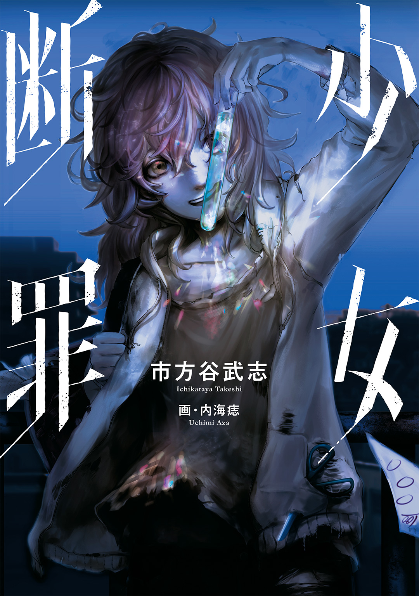
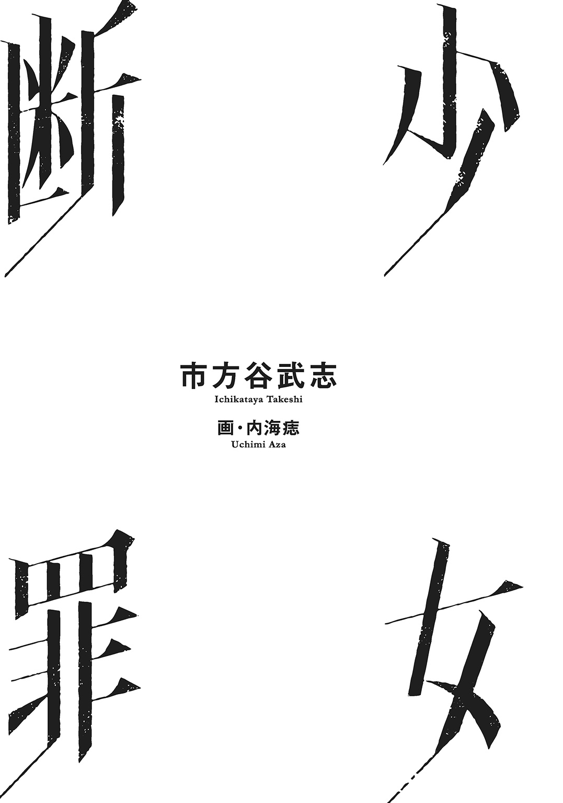

| 少女断罪 | |
| 市方谷武志 | |

この本は縦書きでレイアウトされています。
また、ご覧になる機種により、表示の差が認められることがあります。

一目見た瞬間、この子はイジメられる。と思った。
だがそれは、とっくに曇っていた俺の目が、誤認識しただけだった。
なぜならその子は、最初から、俺や他の奴らなんかの手の届かない場所にいたのだから。
Ｓ市Ａ区第一小学校......もし他人がこの小学校を見たらどう思うだろう？ 俺の感想は『まるで監獄だな』だった。
Ｍ県Ｓ市という東北地方最大の都市のターミナル駅近く、人口百万を超える都会の心臓部という一等地にありながら、否、それ故に、校舎の周辺を背の高い灰色のビル群に取り囲まれた、まさに脱走不可能な牢獄を連想させた。
一部の児童がその閉塞感に呻くのも仕方ない。
だからといって特別な人間や重要人物を育成する、ＳＦ小説に出てくるような機関ではない。ただの学区上の区分で建てられた、実状はどの方面から見ても普通の小学校だ。
ビルの林立するビジネス街にも子供はいて、ならば学校が必要となる。ただそれだけの理由だ。
もっとも、児童数は少ない。
１年生から６年生まで二クラスずつ、しかも一クラスの児童は各二十五人。
場所の問題よりも、少子化の影響なのだろうが。
俺、坂本一朗の職場は、街の中に突然現れたエアポケットのようなこの小学校だった。
最初に俺の基本方針を示しておく。
『子供の世界に関わるな』だ。
子供にも大人の世界のような面倒くさくて複雑で、くそくだらない世界がある。とくに子供のそれは精緻な氷細工のような脆さもプラスされている。
無神経で粗野な大人が、乱暴なだけのでかい手で触れればたちまち跡形もなく、縫い合わせることができない無惨なバラバラ死体になっちまう。
目も当てられない。
だから俺は基本的に子供の世界に関わらない。
たとえ『教師』と呼ばれる存在であったとしても、所詮は赤の他人の子供の集合体であるクラスに、興味も熱意も持たない。
それが最も安全で、最も犠牲者を出さないものだと俺は前の職場で学んだ。
教師が一方的に教える存在だ、と思っていたら大間違いだ。
俺たちだって日々学んでいる。
どうすれば自分が一番傷つかずにすむかを、だ。一人、犠牲者を血の海に沈ませて気づいたことだ。
そう、今年二十八になる俺が六年かけて学んだ教師のあるべき姿だ。
だからその日も、迫りくる夏を象徴するかのような強烈な太陽光を避けながら、俺は無関心の白仮面を丁寧に被り直して、５年１組の扉を開いた。
「先生、ねえねえ、あのねっ、ねえねえ聞いて」
俺が来たというのに銘々に散らばっている児童達の中で、頰を染めて話しかけてくるのは北条閑だ。
頭の中の５年１組出席簿を参照するまでもない、目立つ児童である。
毎日シャンプーしているのだろうさらさらの黒髪と、話題のジュニア・アイドル並みに整った顔立ち、子供らしい黒目がちの大きな瞳を持つ、このクラスで一番光り輝いている少女だ。
それでいて彼女は率先して子供がいやがる面倒くさい仕事や委員を引き受けてくれる。
委員決めの折の気まずい沈黙を、「はいっ」と清々しい挙手で打ち消して、俺の仕事を減らしてくれる、クラスに欠かせない少女だった。
閑はふっくらとした子供らしい頰に、ほんの少し笑みを混ぜて熱心に囁く。
「先生は怖いのキラい？ お話、キラい？」
「いや」
俺はきらきらと輝く瞳に圧倒されながら返事をする。
本当は早くクラスの惨状を収めたいところだが、人気者を味方につけておくことも順風な教師生活を送るコツだ。
例えば俺が大多数の児童に嫌われて、くだらない嫌がらせの的となったとしても、なんとか仲裁してくれるだろ？
「すっごく怖い話なんだよ、先生、怖いのよ、とってもとっても」
気づいたら閑は唇を引き結んでいた。
彼女の左右に当然のように立っている目立つ系女子も同様の、戸惑っているような怯えているような表情を浮かべている。
「おー？ 怖そうだな、ヤバいなー」
乗ってやった。
わざとらしく出席簿を胸に当て仰け反ったが、内心では肩をすくめている。
子供が語る『怖い話』にびびる大人など基本的にいない。
どうせどこかで語り尽くされた噂話のパターンＢかＣであろうし、なによりも子供の言葉には描写力もなければ演出もなく、落ちも弱い。
つき合っていられないようなテンプレが出てくるのだろうが、前述した通り俺は北条閑に味方でいて欲しい。
「あのねぇ」
潜めるような吐息を吐き、閑は語りだした。
「この近くのお話なんだけどね、ほら先生、ここからでも見える大きなマンションあるじゃない、窓から見えるやつ、あそこで人が『遭難』したんだってぇ」
「うん、それで」
相づちは自然に出た。
『暗い夜』とか、『誰もいない学校』『夜の公園』なんて垢で黒く塗りつぶされたキーワードを待っていたからだ。
北条閑を侮っていた俺は、出だしで意表を突かれていた。
まず『遭難』という、都会には最も似つかわしくない単語だ。
去年の十一月には地下鉄の新線も開通し、Ｓ市はより快適で動きやすい都会になった。なのに、徒歩数十メートル歩けばコンビニがある街で『遭難』......そしてその話の舞台があまりに具体的だ。
俺は反射的に視線を跳ね上げ、自分のいる入り口からやや遠い窓に、教室の窓から見える話題の中心に目を向けた。
梅雨が終わり熾烈さを増す光に目玉を痛めつけられ、思わず瞼を半分おろす。
「遭難？ なんで」
こちらの反応を窺っているのか、なかなか続けない閑をつい促してしまう。
「うん、『遭難』......だよ」
彼女は深刻そうに頷く。
「あのマンション......すっごく高くて、すっごくけいび......されているんだって」
確かに近頃のタワーマンションのセキュリティは厳重だ。翻って考えれば、どんなに厳重に守られていても窃盗などの被害が後を絶たないからだろう。
「で」
閑はちらりとピンク色の舌で、珊瑚色の唇をなめる。
「それに完全なオートロックなんだって......つまり管理する人がいないの、でね先生、あのマンションには二つの鍵があるの、一つはお家の、もう一つは駐車場の......で」
ここで北条閑は声の音量を絞る。どうやらクライマックスが近いらしい。
「ある人が車でおでかけの時に、地下駐車場に行くのに駐車場の鍵を家に忘れていってしまったんだって......その駐車場はマンションとつながってて、マンションのほうからは鍵がなくても開けられるんだけど、駐車場からマンションに戻る時や、道路に出る時は鍵が必要なんだよ。だから、自動で閉まった駐車場から出られなくなっちゃったの、閉じこめられちゃったんだ」
いつの間にか聞き入っていた。
想像してみる。全てのフロアが冷たい機械により鍵がかかるオートロックの施設で、鍵を忘れる単純なミスをおかしてしまう。
その結果、噂の人物は、あっけなくマンションの駐車場に閉じこめられてしまったのだ。
「......それで、他の人が気づいたらもうその人は......死んで......ミイラに」
さすがに閑はその先は続けず、ただ首を何度も振る。
「そりゃあ......怖いな」
素直に感心していた。子供特有の大げさなだけの話ではなかったからだ。
他の住民もいるだろうに閉じこめられた人物がミイラ化するほど長期間、駐車場を使わなかったのか、閉じこめられた奴も携帯電話くらい持っていたはずでは......など、弱点だらけではあったが、確かに現代の過剰なセキュリティと、ぶ厚いコンクリートの中では、類するミスが起きてもおかしくはない。
否、俺が長く目を閉じたのは、それがあまりにも現代の状況にふさわしい、冷たく乾いた噂話だったからだ。
どこぞの洋画みたいに電気のこぎりの耳障りな音もしないし、血の雨がザーザー降ることもないリアルで静かな展開だ。
たった一つのミスで呆気になく閉じこめられ、周りにいた大多数の人間はその事実を知りもしない。
そしてゆっくりゆっくり人知れず朽ちていく。
いつかテレビで見た、高所で発見されたミイラ少女の姿を勝手に再生しようと動きだした脳を意志の力で強制的に止めて、俺は作り笑顔になった。
「その話は誰から聞いたの？」
興味がわいたのだ。テンプレ話を予想していた俺には、十分な刺激になった。
「あっ」
閑は急に目元を赤くして、俯いた。
そこで気づく。彼女の右手にはスマートフォンが握られていた。
途端、彼女への賛辞が消滅する。
そのピンク色の情報端末で探した結果となれば、せっかくの功績も色あせる。
どうせオカルト系のサイトでも覗いていたのだろう。
なら、この背の低い可愛らしい少女が知っているのも当然だ。
「こらっ、学校に携帯電話はダメだぞ」
失望を一ミリも表さず、努めて穏やかに注意した。
第一小学校の校則に、携帯電話（スマートフォンも、もちろん含む）の持ちこみ禁止、があるからだ。
「はぁい、ごめんなさぁい先生、でもお母さんが持ってけって」
納得してゆるゆる手を振った。
「そうかぁ、でもあまり見せびらかすなよ」
このご時世、どこに児童を狙う変態が隠れているかわからない、とくに閑のような見栄えのする娘を持った親は大変なのだろう。
少女を獲物としてつけ狙う者も多い現実を鑑みると、俺が彼女の親族だとしたら、やはり神経が槍のように尖るはずだ。
まあ、どんな理由があったにしろ不正は不正なのだが、どうせ他の連中も密かにスマホを持ちこんでいるだろうし、あんまり怒気を露わにして児童に無用な距離を置かれるのも損だ。
「罰として今日は昨日より一所懸命勉強しなさい」
「はぁぃ、じゃあ先生、またねぇ！」
怒られたにしては嬉しそうな返事をした閑は、席へ戻っていった。
俺はもう彼女らに構わず教卓まで進み、出席簿を置いて大きく深呼吸した。
５年１組をゆっくりと見回す。
騒がしい。
『子供の世界』は騒がしく、忙しく、活気に満ちている。
若いはち切れんばかりのエネルギーが、突風のように俺を正面から打つ。
だがそれらはバラバラだ。
仲のよい友達と速射砲のように話し続けるものもいれば、マンガの影響を受けたのだろう奇妙な技を級友にかけているものもいる。
アニメやゲームの話題を顔をくっつけるような距離で語り合う児童の横で、一人ぼんやりと外を眺めている少年もいる。机の下で隠れているつもりなのか、スマートフォンでゲームアプリに興じて、級友を無視している奴もいる。
つまりクラスが全くの無秩序状態なのだ。
たぶん、それをなんとかするのが俺の役割なのだろう。
とくに中に何人か様子のおかしい児童がいるからだ。
松村洋......色黒で顔が長い長身の男子だ。
目が真っ赤である。そして服にはところどころ濡れたような大きなシミがあり、頰も幾分腫れている。
視界を転ずると、それを指さして嗤っている連中がいる。
徳川文哉のグループだ。
文哉は消しゴムを小さく切ったものを、後ろから松村の頭に投げつけ、被害者たる松村は唇を嚙みしめて俯いている。
俺はこの５年１組の担任教師だ。
だから当然、松村が文哉らにイジメられていることを知っている。
だが、それがなんだというのだ？
俺のモットーは「子供の世界に関わらない」ことであり、かつてそれを守らなかったために取り返しのつかない事態になってしまった。
ああ、そうだ。本当に取り返しのつかないミスは存在するんだ。
俺は松村の泣きそうな顔から目を背けると、震える手で出席簿を開いた。
驚くことに、混沌とした私語が飛び交う中でも、俺に呼ばれた児童達はそれぞれ返事を返してきた。
少し前までは、返事をしなかった児童が本当に欠席なのか、必死に探さねばならなかったのに、だ。
これこそ水棲生物が陸に上がったような大いなる進化だった。
慌ただしい状況でも三か月も続けば子供も慣れるのだろう。
ううう、とその時低いすすり泣きの声を聞いた。
出席簿を下げると、机の天板に覆い被さる松村が目に入った。
ついに消しゴムカスだらけの彼の心がぽっきりと折れてしまったのだ。
しかし加害者たる文哉は、ガリとデブの取り巻きと共に心底楽しそうに嗤っていた。
俺は踏み出した足を止めた。
クラスに......５年１組に......なんの変化もない。
いつものように、おのおのの話題に夢中で、このあからさまなイジメに誰もが無関心だ。
ならばそれでよい、俺の役目はない。ないのだ。
『子供の世界』が徳川文哉のイジメを許容しているのなら、それで終わりだ。
窓に寄りかかり、赤の他人のような視線で教室を見回す。
「それでは、朝の会を、始めます」
そもそも文哉のイジメ問題については、俺がここ第一小学校に着任する前から問題になっていたようで、４年生の頃の担任はかなり苦労したらしい。
つまり今年から始まったのではない、となると俺のせいではないだろ？
ただ文哉の行動は俺も知っている。
トイレで、奴らが教師の死角になっていると信じている校舎の陰で、文哉は獲物を殴り、濡らし、這い蹲らせてその尊厳とプライドを粉々にする。
そんな大騒ぎを俺以外の教師も目に耳にしないはずがない。
だが『子供の世界』には何も起こらず、誰も手出しせずだ。
徳川文哉は今日も松村洋をイジメて喜んでいる。
ちなみに俺なんかよりよっぽど真っ当だった４年時の担任教師は、その解決に熱心に取り組んだそうだ。
そしてＰＴＡ役員に名を連ね、ママカーストの最上位にいる徳川文哉の母親から激しい抗議を受けた。
毎日のように自宅への苦情電話攻撃を受け、配ったプリントについての不備、伝達したはずの事柄についての連絡ミスをでっちあげられ、挙げ句に文哉の成績の悪さについての責任を追及されたそうだ。
他の母親達にも露骨に無視され、しかし同僚からの援護はなく、孤立無援でモンスターの集中攻撃を日々受け続けた。
結果、彼女は教師を辞め、今も医者のやっかいになっている。
ご苦労様。
『子供の世界』に関わると自分たちの危うい『大人の世界』にも累を及ぼす。
名前なんて忘れたが、その４年の頃の女教師も学んだことだろう。
『子供の世界』には手を出すな、と。
ぴぴぴぴ、と教室後ろのロッカーの上にある鳥かごから文鳥の軽い鳴き声がしていた。
それに気をとられたふりをして、すべてから目をそらす。
俺が教室を出る頃にはもう、『子供の世界』はいつも通りの喧噪と混沌と混乱の坩堝に戻っていた。
◆ ◆
大過なく朝の勤めを果たした俺は、そこここに子供が溢れる廊下を歩いていた。
昔、違う学校にいた頃は二度手間を惜しんで出席簿と一緒に一時限目の学習用具を持って教室へと行ったものだが、第一小学校ではできない。
校長の吉田紀一がそれを許さなかった。
「いいかね、子供達はいつも君達教師の背中を見てお手本にしている。だから君達が楽をしたり、だらしない行いをしたりしていてはダメなんだ」
そうだ。
もっとも、そのお達しがなくても俺は、いちいち職員室に戻ったろう。
児童のいる教室は異世界のようだ。空気の成分まで違う、俺の生きられる世界ではない。
だから潜りすぎた鯨が海面に急ぐように、息継ぎのために俺の世界である職員室に戻らなければならない。
そうしないと子供の中でおぼれてしまうのだ。
俺は進行方向に飛び出してくる児童達をかわしつつ、足早に息継ぎの場を目指した。
あんまりにも急いだからか、ずっと先に朝の勤めを終わらせたのだろう、同僚の山内良武の背中に追い着いていた。
俺より背が高い、瘦せたジャージ姿の男で、二クラス五十一人しかない５年生の担任のもう一人だ。
一転、足を緩める。
追いついて近頃の教育についての会話、なんて考えもしない。
それどころか、俺は山内が嫌いだ。嫌悪している。
一緒の職場になったから辛うじて自制しているが、もしこいつと別の場所で出会っていたら殴り倒していただろう。
山内はその点、運命とやらに自分の無事を感謝するべきだ。
ばたんっ、前方の山内の近くで４年生くらいの女の子が転ぶ。
受け身が取れないくらいの勢いだったのだろう、顔面から床にダイブした少女はぎゃーと泣きだした。
顔を鼻血で染めあげているのだ、泣きもする。
山内は無言で通り過ぎ、ざわざわと冷える肺を持てあます俺は、少し経ってから泣いている児童の横を息を殺して過ぎる。
山内良武の近くでは子供がよく倒れる。
彼には特殊な能力があり、その足元の空間がゆがんでいる......のではない。
山内は子供の足を掬う名人なのだ。
事故を装って子供をころばせる。
子供達もまさか教師が足をかけているなどと思わず、自分達の歩き方が不器用だから硬い床に正面衝突する羽目になったのだ、と勝手に信じて終わる。
「イラついたら子供にあたればいいんですよ、なーに、巧くやればガキなんてすぐに騙せる、らくしょーです」
山内は銀色の眼鏡のフレームに手を当てながら、そんなことを職員室で自慢するような教師なのだ。
ちっ、俺は幼虫の汁のような苦いものを口内に感じ、舌打ちした。
だがそれだけだ。
山内を追及もしないし、倒れた女の子を優しく起こして顔を拭ってやろうともしない。
おそらくなにもしない自分は教師として、大人としては失格なのだろうが、実行しない。
それもこれも『子供の世界』の出来事で、山内は要領よくその世界に入っていないのだから。
安酒でもあおったようなむかむかする胸中を引きずり職員室に帰った俺は、喫驚した。
吉田校長がわざわざ俺の席で待っていたのだ。
一瞬で山内へ向いていた気持ちが消え、不安になる。
校長を定位置である校長室から引き出すような失策を、俺は犯したのだろうか。
だがすぐに悪い知らせではないとだけは判別できた。
丸顔の吉田校長は穏和な笑みを浮かべていたのだ。
「やあっ、待っていましたよ坂本先生」
と吉田校長は俺に近づいて肩を叩く。
「実は突然ですけど坂本先生に知らせがあります」
「はい」
戸惑い気味に返事をすると、校長は咳払いの後に指を伸ばした。
「坂本先生のクラスに来る転校生が今到着しましてね、君っ、白石さん！」
職員室の隅に置いてあるソファから、その少女はふらっと立ち上がった。
幽霊のように、悪夢のように、その女子児童は俺の前でゆらゆらと揺らめいている。
俺はその子、白石美星を一目見た瞬間、この子はイジメられる、と思った。
５年１組はちょっとした騒ぎの中にあった。
一時限目の授業の前に転校生が紹介されたからだ。
「ええと......」
俺は困惑を隠せないまま、クラスを見回す。
「今日から君達の友達となる白石美星さんだ、仲良くしてやってくれ」
でも無理だろうな。
俺は教師の仮面の下でそう思った。
案の定静まりかえった児童達の顔つきは険しい。
『君達の友達』という部分が納得できないようだ。
横目で転校生・美星を再確認する。
髪は伸び放題で腰まであり、転校生の表情を微妙に隠していた。瘦せすぎの体を包む服は、薄手のパーカーＴシャツとスパッツ。シャツのほうは生地がすれすぎて浮いたあばら骨がうっすら見えるくらいのもので、スパッツはくたびれ果てて端がほつれている。
確かに暑い日々が続いているが、高学年の少女なのにアンダーシャツの線はない。
昨今の発育の良い同級生と比べたら明らかに体の成長が遅れているのがせめての救いだ。もしこれが北条閑並みだったら、目のやり場に困っただろう。
ランドセルは一応背負っているが、何代目のお古なのか、明らかに昭和期の黒い男子用だ。しかも艶のあっただろう表面はひび割れてかさかさに乾ききり、役目を終えたグローブのような焦げ茶色に変色している。
カラフルなランドセルを自慢し合う最近の時流からはみ出しすぎだ。
よくよく見れば顔の作りはそれなりに整っているようなのだが、今どきの小ざっぱりした子供達には、このみすぼらしい姿は好かれないだろう。
だいたいこの子は姿勢が悪い。背は低くないのだが、まるで落とし物を探しているように背中を丸めていた。
すまし顔を作る俺だが、教師でなく道で出会ったら無言で避けてしまうだろう、独特の暗い雰囲気を持っていた。
初対面で不謹慎な感想を持ってしまった所以である。
ただ、一つだけこの転校生について俺は惹かれる、惹きつけられるところがあった。
目である。伸びっぱなしの前髪の隙間からちらりと覗く目、だ。
夏の太陽か、研ぎ澄まされた刃物のようだった。
ぎらぎらと輝き、剣呑とさえ思えるほど煌めいている。
服装やらランドセルの粗末さなど、俺にとってはどうでもよかった。
美星のこのぎらつく瞳は素直に美しいと思えた。
それこそ今時の子供の象徴である清潔の塊、北条閑の容姿などよりも遥かに、だ。
「白石さん、名前を黒板に」
静まりかえる教室の中、俺はふと気づいて促した。
先ほどからだいぶの時間、こうして突っ立たせている。
「............はい」
美星はくるりと体を翻し、チョークの音を立て始める。
だが俺は衝撃に動けなかった。
蚊の鳴くような返事の折、かいま見てしまったのだ。
美星の口の中である。
......不自然だ。
美星の歯のいくつかの欠けようだ。
まるで誰かに殴られ、力ずくで折られたような欠け方であった。
そして黒板の前で動いているむき出しの細い腕が目に入った。
両腕のいたる場所に赤紫の丸い痣がぽつぽつとある。
皮膚から肉が盛り上がっているような痣。俺が教育実習の時に資料で見せられた時代遅れの不良の根性焼きの跡に酷似している。
思わず美星を見直すと、彼女はちょうど自分の名前『白石美星』を黒板に書き終わるところだった。
へたくそな文字だった。
くすくすと児童達から笑いが漏れるほどに、いびつな文字だ。
「ええと......」
俺は言葉に詰まってしまった。
欠けた歯と痣、二つの事柄が俺に『ある』可能性を想起させたのだ。
解答は一つに思える......つまり、家庭で、こいつは......。
はっとする。
恒星のような光を放つ目が俺を見上げていた。
「......ああ、では白石さん、みんなに挨拶を」
この台詞は反射的なものだ。
俺はそれどころではなかった。
「しらいしみほし、です」
美星の声で、俺の動揺が収まる。
児童達の顔が困惑していた。誰にも届かなかったのだろう。
まるで一本の糸のように細く危うく、さらに小さく、真横にいた俺さえも「はい？」と聞き返しそうになったほどだった。
気づく。
美星の頰が赤く染まっていた。
素直な普通の恥ずかしがりの転校生の態度である。
むしろ見慣れた姿だ。
もしかして歯やらのことは見間違いなのかもしれない。だとしたら余計な詮索をしてやぶ蛇はごめんだ。
俺はそう思うことにした。余計な詮索をしてモンスターに食いつかれるのは避けたい。
「はぁ、何だって？ 聞こえない」
くすくすとクラスが未ださざめいている。
その中心にいるのは相変わらず徳川文哉だ。
美星は息を吸うと、繰り返した。
「しらいし、みほし、ですっ」
今度は少しは音になった。
「はあっ？ 何？ 聞こえないって、てんこうせー」
俺は額を押さえる。
早くも文哉の悪意が美星に向かっていた。
ああいう輩は他人の欠点や落ち度を嘲笑するのに長けている。貧しい服装で、うっとうしいぼさぼさの髪で、声が小さく、やせっぽちの美星など格好の獲物なのだろう。
俺は早くも美星が困る姿を想像した。
想像は空振りする。
白石美星は面白半分の文哉に対し大仰に肩をすくめて、目線を外した。
「おい！」
収まらないのは文哉である。
他人をバカにすることは好きなクセに、他人からバカにされることを許さない。
いつの世にもいる連中だ。
「シカトかよてんこーせー！ なめてんのか？ 女のクセに」
興味深げに見守っていた５年１組が夜の墓場のように冷えた。
くすくすと美星を嗤い、こそこそと悪く言っていた口も止まる。
一挙に冬に逆戻りするような教室に、俺は声をあげた。
「文哉、いい加減にしろ」
この程度だ。俺がこの転校生にしてやれるのはこの程度だ。
おそらく彼女の学校生活は楽しいものではなくなるかもしれないが、俺が『子供の世界』に介入できるのはこれくらいなのだ。
「ち、俺に恥をかかせやがって、転校生。おぼえていろ、後でお勉強の時間だからな」
俺にたしなめられ、文哉がつぶやくと、その言葉の意味を最もよく知る松村は、冷凍食品のように身を縮こませている。
奥歯を嚙みしめる。
今日は朝から最悪だ。なにより５年１組の雰囲気が、石化でもしてしまったかのように硬い。
大人の俺でさえそれに気づくのだ、同じ子供である美星が察しないはずはない。
案の定、美星の表情が見る見るうちに曇る。自分の失敗に気づいたのだろう。
だがそれは俺の思い違い、少なくともクラスの反応を慮ってのものではなかった。
「鳥っ！」
自己紹介時とは打って変わった大きな声でそうつぶやいた美星は、肉の盛り上がりのない華奢な肩を抱いた。
「鳥がいる！」
ぴぴぴぴ、と文鳥のぴぴが鳴いた。
「ああ」
俺は美星がこの状況で教室の背後にある鳥かごを気にしたのに驚いたが、説明をした。
「この学校はね、クラスで何か一つ絶対に生き物を飼わなければならないんだよ、１年生から６年生まで」
それは吉田校長の案だった。
「子供達に命の尊さを教えるには命と接するのが一番」
実はまだ数か月しか第一小学校にいない俺が、この学校に着任した今年からそのアイディアは実行された。
学校の伝統にするためである。
ただ、俺の目からしてその思いつきは失敗している。
現代の子供達のデジタルな脳には、あまりにもアナログな生物の世話、が理解できていないようなのだ。
実際、ぴぴはひどい目にあった。
興味本位の児童達に羽根を引っ張られ、給食の残りを無理にえさ箱に入れられ、積もった排泄物などからは誰もが目をそらした。
この小鳥の命は俺がなんとか手を打たねば数日の命だったろう。しかし教師が手を出せば校長の意向を違える気もして、手をつけかねた。
そんな頭痛の中で、北条閑登場だ。
彼女は弱ったぴぴを見かね、自らが世話をすると宣言をして毎朝一番に登校し、文鳥の世話をしだした。
現金なもので、そうなると５年１組の誰もがぴぴのファンになり、今ではその鳴き声や、軽い羽ばたきの音はクラスに欠かせないものとなっている。
「あたしは鳥が嫌いなんだ！」
が、美星は吐き捨てると、がりがりと二の腕を激しく搔きだした。
「鳥、鳥、鳥、鳥、鳥......」
「おいっ」
らしくもなく俺が慌てたのは、彼女の腕に血がにじみ出したからだ。
「白石......さんっ、やめなさい！」
しかし美星は嫌悪の表情で、いつまでも自分の腕に赤く染まる爪を立てている。
「やめるんだっ！」
ついに彼女の腕をつかんで、自傷行為にも等しいひっかきを止めた。
背後の児童達が息を潜めているのがわかる。おそらく異様な光景に固まっているのだろう。
俺は本格的に困っていた。
クラスも美星も巧く収められなかったと自覚したのだ。
どんな言葉も口にすれば霜のように白々しく寒いものになると感じて、黙ってしまう。
しかし時計が壊れたような気まずい沈黙は、長く続かなかった。
「せ、先生......白石さんの席、どうするんですか？」
救世主の北条閑が雰囲気を察して、挙手してくれたのだ。
「お、おお......」と回復した俺は、俯く美星の腕を押さえつつ、しばし教室に視線をさまよわせる。
露骨に児童達、とくに女子児童達は眉をしかめていた。
みすぼらしい姿で、異常な行動をし、なおかつ初日から徳川文哉に目をつけられるような児童の近くにいたくないのだ。
迷った末、俺は松村洋の横に空席を見出した。
他意があったわけではない。
５年１組もかつては最大四十名を数えた頃もあったそうだが、昨今の少子化の影響で俺の元の児童は二十五人しかいない。つまり十五人分の空間がある。
そんな空間の中の一つ、ちょうど良い一人分の空きが、偶然、松村の横にあっただけなのだ。
そこに転校生の席を置くのは当然で、なんら含むところはない。
使いこまれた机と椅子を運びこみ、転校生用の席を作ると、徳川文哉周辺から笑いが漏れた。
悪い意味に取ってほしくないものだ。
美星は無言で首肯すると、指定された席へと歩きだした。
モーゼが海を渡るように、彼女の進む左右の児童は悪感情を隠さず避けるが、本人は気にもとめていないようにゆらゆらと海草じみた動きで進む。
「......よろしく」
美星が頭を下げると、隣席の松村はまだ涙に濡れている目をぱちくりさせて言葉をもごもご返したようだ。
肩から力が抜ける。
こんなものだろう。後は『子供の世界』に万事任せる。
俺の役目は終了だ。
文哉が蛇のようにねっとりと転校生と松村を睨みつけているが、それに構ってはいられない。
俺の役目はもう一時限目の算数に移っているのだ。
だが、そこからまともな授業ができるはずもなく、大多数の児童が俺の計算式を見もしないのを了解しながら、ただ教科書を解説する羽目となった。
◆ ◆
で、事件は早々起こる。
転校生を紹介してたった四十五分後にだ。
俺は算数の教科書を閉じ、黒板の数式を黒板消しで消していた。
美星の席は教卓から遠くはない。だからそのやり取りは注意せずとも耳に進入してきた。
「おい、てんこーせー」
文哉だ。俺は黒板消しに忙しいから振り向いていないが、いつものにやにやを浮かべているだろう。
「さっきはよくもシカトしてくれたな、このブス」
間違っていた。
向き直った俺の目に入ったのは、意外に厳しい文哉の表情だ。
俺が考えていた以上に彼の機嫌は悪かったようだ。
『子供の世界』は、だからわからない。
「いいか」
文哉は高級ブランドの服に身を包んだ己の胸を指す。
「このクラスでは俺が絶対だ、そして一番下がこのバカだ」
バチンと文哉が松村の坊主頭を叩いた。
これが『子供の世界』だ。ちゃんとルールを自らで教え合う......どんなに不条理なルールでもだ......俺は自分にそう言い聞かせて無理に納得した。
これで転校生・美星はこの教室での松村の位置、イジメられっ子というポジションを知り、ここから先文哉ら他の生徒に追従するのだろう。
そうすることで水と油を無理にかき混ぜたような混沌の中に、自然と混ざっていくのだ。
「俺の命令はぜったいに聞け、代わりにバカには何をしてもいい、お前はなんだかヘンだからさっきのは忘れてやんよ」
松村の目に涙が溢れているが、俺は関わらない。
だが次の瞬間、俺は閉じかけた目を見開いてしまった。
「ふざんけんじゃないよ！ このくそ野郎っ」
美星の返答を耳にしたのだ。金属同士をぶつけ合ったような甲高い怒声だ。
みなの前で挨拶もろくにできなかった少女が、突然爆発した。
廃棄所に打ち捨てられたマネキンが、雷にうたれ目を開いたようにだ。
やせっぽちの女子の腕が、文哉の紺色の服の胸ぐらをつかんでいる。
「なに偉そうに勝手な理屈ほざいているの！ あんたの小汚いお遊びなんかにつき合えるかっ」
静寂。
５年１組の児童がみな彫像にでもなったかのように、動きを止めた。
視線の束の先にいるのは女の子に責めたてられている男の子でイジメっ子、徳川文哉だ。
その顔色が青から赤に変わっていく。
「この野郎！」
文哉は乱暴に美星の腕をふりほどくと、逆に彼女の安っぽいＴシャツの胸を摑む。
ぐにゅーん、とまるでフーセンガムのようにシャツの生地は伸びた。
俺ははらはらと二人を危ぶんでしまう。
美星は転校してきたばかりの女の子だ。それでも文哉はかまわず殴るのだろうか。
しかし彼女は平気だ。平然と目前の男子児童の目を見返している。
「て、てめえ！」
あまりに意外な出来事だったのだろう、文哉の息が乱れていた。
「殺すぞ！ こんなマネしてただですむと」
「うるさい！ 殺す？ 面白い。ならその前にあたしがあんたを殺す、いい？ 殺してやる！ あんただけじゃなくて周りのウザい連中も含めて、またみんな黙らせてやるっ！」
美星の反撃に俺の背筋が凍えた。
目だ。
美星のぎらぎらと光る目に、南極の太陽のような白っぽい輝きがあったのだ。
冷徹で冷酷。凍えきった光だ。
目の前の相手に対しなんの敬意も、興味も、同情もない、死神の眼光。
......ああこいつ、本気で文哉を殺すんだな。
俺はそう納得しかけて、慌てて首を振った。
たかが十歳の少女に対する感想とは思えなかったのだ。そんな奴『子供の世界』にはいない。
文哉がぶるぶると震えだす。怖いのではない、怒りに猛り狂っているのだ。
「この野郎......」
俺は徳川文哉の担任になってから日が浅い。しかし一応三か月は過ごした。
だからこのどうしようもないイジメっ子のメンタルも、それなりにわかっていると思いこんでいた。
やはり俺の目は濁っている。
文哉の様子がおかしい。
「てめえ、おれの、じゃまを、するって、のか？」
壊れたパイプのような異音が、しゃべるたびに文哉の喉から漏れた。
「あたしの邪魔をしてきたのは、あんた。邪魔だから消えてよ」
「てめえ......」
「あのねえ、無意味に他人の悪口を言わない、無抵抗の奴を殴らない、弱いものイジメはしない。誰かに習わなかったの？」
「こ、のやろ......て、めぇ」
「何？ 言いたいことがあるならはっきり言いなさい、びびっているの？」
「ゆ、ゆ許さねえ、ゆ、るささ......え」
クラスを文字通り仕切っていた文哉の口がもつれている。他人への悪口を高速回転で発するものだったはずなのに。
がくがくと彼の肩は震える。身震いのような妙な震え方だ。
「あれあれイジメっ子、顔色悪いわよ、弱いんだったら出しゃばらないでよ」
転校生の容赦ない舌鋒の前に、俺の予想に反して徳川文哉はサンドバッグ状態だ。
「ゆるる、さねえ、ゆる......ねえ！ ぜった、い、ゆるさねぇぁっ！」
がくん、とひときわ高く吠えた文哉の頭が垂れ、突然その体は糸の切れた人形のように倒れた。
机が派手な音を立てて鳴り、数名の女子児童が「きゃー！」と悲鳴をあげて逃げまどう。
「せ、先生、徳川君が！」
北条閑が呆然とする俺の腕をつかんだ。
白石美星が、視界の端で小さな肩をすくめていた。
◆ ◆
二時限目の休み時間、十五分と普通より少し長い休憩時間に、俺は職員室にいた。
それが仕事であるかのように貧乏揺すりをくりかえしながら。
徳川文哉だが、感情の制御がきかず過呼吸になり倒れたのだそうだ。
予想だにしていなかったが、高い高い山のようなプライドの中腹までの度胸もなく、今までただ甘やかされて育っただけの彼には転校生の反撃と恫喝がきいたみたいだ。
だから徳川文哉はやる。
美星への反撃である。
それは文哉が繊細で安っぽい自尊心を賭けた一世一代のものになり、やり方も陰湿で過激になるだろう。
さすがの白石美星も音をあげるに違いない。
泣き叫び許しを請うのだろう。
あの子はクラスの状況にあまりにも無知すぎるだけなのだ。勇敢と無知は似ている。
勇気を振り絞っても火に触れれば火傷する。その原理だ。
......だとして、俺に何ができるんだ？
子供の世界に手を突っこんでひどい結果を招いてから、まだ半年程度しか経っていないのに。
机の上で拳を握る。痛みを無視して、掌に爪を食いこませる。
俺はもしかしてとんでもなく間違っているのではないか？
「どうしました？ 坂本先生」
俺は知らず渋面を作っていた。
傍らに山内の顔があるのだ。
わざとらしく笑みの形に唇をめくり上げている。
「またクラスで何かあったそうですね？」
誰か褒めてくれ。俺は山内の舌を引っこ抜きたい欲求に耐えている。
山内良武は疑問の形で話しかけてきているが、どうせ経緯のすべてを承知しているのだろう。
そうでありながら当事者をなぶる。
こいつはそんな大人なのだ。
くくく、と案の定山内は俺を小馬鹿にして笑う。
「ガキのことなんかで悩む必要はないんですよ、坂本先生。あいつらはバカで愚図だ、適当にあしらっていればいい、本気になることはない」
白っぽく眼鏡を光らせるこいつの性格、嗜好を俺は知っている。
丁寧な口調と笑顔を崩さず、何人もの真面目な生徒の自尊心を傷つけ嘲笑い、正しい行いを貶す。
気に入らない児童、目についた子供をそうやって仲間達から孤立させ、イジメの原因を作っているのだ。
子供達が傷つくのを陰で眺めて楽しむタイプの教師である。
だがしかし、そんな教師が稀だと考えるのは世間知らずのお花畑脳だ。
俺にも少年の頃に多々覚えがある。
こんなゲス教師はいる。それこそ一つの学校に一人か、多いときには複数人いるだろう。
ある意味、それらの存在に耐え、克服することも学校生活で必要な経験なのだ。
だから俺は山内に逆らわない。
「いや......そうですね」と相づちを打ってやる。
俺もＴＶドラマに出てくるような正義漢の熱血教師ではないのだから。
「ところで」
俺が簡単に受け入れたので、山内の話題はあっさり変わった。
「入院している伊藤敦夫へのお見舞い、どうしましょうか？ 坂本先生」
俺は不覚にも山内に憮然とした面を見せてしまった。
それは最も考えたくない案件の一つなのだ。
今日はよく晴れた一日のはずだ。
職員室の窓からも梅雨の終わりを迎えた太陽が顔を覗かせている。他の教師達は忌々しげに書類やら何やらを団扇代わりにしている。
世界は白く冷えていた。
季節に関係なく凍てついている。
背骨が、腰が、肩が熱を求めてじんじんと痛みだす。
俺は半分固まると、山内の笑顔から目をそらした。
その眼鏡の奥の瞳があまりにも能弁だったのだ。
『これはお前の責任だ』
自分の四方が頑丈で透明なガラスにでも囲まれているかのような息苦しさに、俺は喘いでいた。
◆ ◆
少女が泣いていた。
いつものことだ。
俺は何もできず案山子のように棒立ちだ。
いつものことだ。
艶やかな黒髪の女の子は机に突っ伏して、落書きだらけの机を隠すように泣いていた。
いつだったか？
ああ、あれは......だ。
◆ ◆
ふ、ふふふ、俺は笑った。
涙の感触を両目に感じながら笑った。
また『あの夢』を見たのだ。
早朝、眠りを引きずる腫れぼったい目をこすりながら、俺は軽自動車で学校敷地内に入った。
教師は児童よりも早く学校に着いていなければならない。
学生時代さんざん朝の起床について文句をたれていた俺だが、それを知ってしまうと悪い気分になる。
先生の皆さんの起床は、もっと早かったんですね......。
中古車販売店で主人の顔が曇るほど買い叩いた軽自動車は値段のわりに重宝する。
しかし早朝からの運転は俺を妙に疲れさせた。
ようやくたどり着いた校舎を見上げながら車から出た俺は、無理に気力を取り戻すために大きく両手を突き上げて伸びをした。
昨日と同様、今日も晴れていた。
まだ朝靄の中にいるために体感温度はそれほどでもないが、太陽が真上にくる頃になるとムシムシとした暑さになるだろう。
早朝の心地良さも、俺の重すぎる気を紛れさせることはなかった。
「ちーす」
胸郭を広げて朝の爽やかな空気を肺に入れていた俺は、ぎょっとする。
挨拶されたほうに視線を向けると、妙な男がいた。
金色の髪をウニのように突き立て、じゃらじゃらとうるさいシルバーアクセをつけた、ガラの悪そうな男だ。しかも俺よりも頭一つ分以上長身である。
着崩した学生服やら、まだあどけなさが辛うじて散見できる顔立ちからすると高校生なのだろうが、その体は貧弱な俺なんぞ片腕で十分あしらえるだろう厚みを持っている。
細い一重の目は濁っていて、一応俺に向いているようだが、その実何を見ているかわからない。いつだったか生物ドキュメントで見た鮫のようだ。
くちゃくちゃとした不快な音から、ガムを嚙んでいるのがわかったが、頻繁にそいつは足元に唾を吹く。
そして男の後ろに徳川文哉がいた。
文哉は昨日の醜態などなかったように、機嫌よさげににやにやとしている。
ああそうだ......。
俺は先ほどまでの暢気な気分を忘れて思い出していた。
徳川文哉が５年１組の王様......第一小学校で敵うものなしの立場につけたのは、本人の力だけではないのだ。
「俺さー、高校生のダチいるんだよね、何かあったら言えよ、話しつけてやるからさ、ムカつく奴とかいんだろー？」
機嫌のいい時、文哉がそう周囲に漏らすのを聞いていた。
徳川文哉は自分達より遥かに年上の不良に、自分の身の保障をしてもらっているのだ。
文哉がどこでこいつと出会い、どんな条件で仲間にしたのかはわからない。
が、彼には子供達の誰もが戦慄する奥の手があるということだ。どちらがどちらを利用しているかは不明だが。
そして伊藤敦夫だ。
◆ ◆
５年２組伊藤敦夫。
今の文哉の標的である松村洋の幼なじみで親友だった生徒だ。
入院している。
二か月前からだ......松村がイジメられている、と知った伊藤は怒り狂った。
そもそも徳川文哉は５年生としてはそれほど大きな体ではなく、一見すると華奢で女子児童のような体格だ。身長も決して高いほうではない。
１年生の頃からみっちりと柔道で鍛えていた丸っこい伊藤の相手ではなかった。
松村に泣きつかれた伊藤は、学校の廊下で文哉を投げ飛ばした。
徳川文哉は泣き叫びながら家に逃げ帰った。
俺は少し安心したものだ。
『子供の世界』だけで問題を解決したな、と勝手に思いこんでいた。
その夜、けたたましく携帯電話が飛び跳ねた。
吉田校長だった。
校長はいつもの鈍く穏和なふとっちょのイメージをぶちこわす勢いで動揺していた。
『大変です、坂本先生！ 大変なんです、ああどうしてこんなことに......』
近くのコンビニの唐揚げ弁当に箸をつけていた俺は、その尋常じゃない様子に携帯を持ち直して、呼吸を止めて続きを待った。
『伊藤君が......５年２組の伊藤君が......事故に遭いました』
正直意味がわからなかった。
伊藤敦夫が交通事故か何かに巻きこまれたのか？ と想像した俺だが、現実はもっと醜いものだった。
塾帰りの伊藤が、何者かに絡まれて暴行を受けたのだ。
そりゃ、事故じゃないだろ......。
啞然としながらも、そうとんちんかんな感想を持ったのを覚えている。俺も動揺していたのだ。
次の日に、伊藤の状態が思っていたよりも重いと教えられた。
左眼窩底骨折、右腕骨折、左大腿骨骨折、左右の指も全て折られ、あばらもいくつかやられていた。面会謝絶の病室で二十四時間看護を受けている状態らしい。
「ひどい、あまりにもひどいっ！」
基本的に悪人ではない吉田校長は涙に喉を詰まらせていた。
伊藤は顔面が倍になるくらい殴られ、指を一本一本折られ、金属の棒のようなものでめった打ちにされたらしい。
大事件である。
第一小学校は半パニック状態になり、保護者達は押し寄せ、事情聴取の警官が何人も職員室を訪れた。
無知だった俺は慄然とし、犯人への怒りを募らせたが、どこか遠いドラマの中のような事件だとも思っていた。
すぐに頭のてっぺんへ雷が落ちる。
徳川文哉の取り巻きが興奮して交わしていた言葉を、聞いたのだ。
「文哉マジすげー、伊藤をトモさんってのに襲わせたんだろ？ あそこまでやるなんてマジこえーよ」
「ああ、あいつには逆らわないほうがいいな」
俺はのろのろと、ゆっくりと理解した。
今回の事件は文哉の復讐なのだ。
知人の高校生を使って自分に反撃した伊藤を痛めつけた。
俺は理解した。
『子供の世界』はここまで残酷なのだと。
だが何もできなかった。
理由はいくつかあるが、大まかに述べると二つ挙げられる。
一つ、相手が高校生ならこの程度（小学生一人が半殺しになった）の犯罪なら『少年法』という『子供の世界』を大切にする法律で、守られてしまうだろう。
二つ、あくまで伝聞であり、証拠はない。
......なんてね。
噓だ。詭弁だ、自己弁護だ。
俺は怖かったのだ。その件の武闘派高校生、少年法でガチガチに守られた罪の意識さえも薄いＤＱＮに、自分が襲われるかもしれないのが――
怖かった。
それに、高校生ならまだ『子供』だろ？
なら奴らの行動も『子供の世界』の一つであり、俺が手を出すなんて......嗤いたければどうぞ。俺はそんな教師なのだから。
そして本日めでたく対面したわけだ。
正義漢・伊藤敦夫を病院送りにした高校生に。
高校生は俺を値踏みするかのように頭から下まで無礼にじろじろと観察すると、へっ、と薄く笑ってそっぽを向いた。
仕方がない。俺はこいつの興味の対象になれる人間ではないはずだ。なりたくもない。
だがなにか胸がむずむずする。
◆ ◆
「せんせー」
徳川文哉に注意を向けたのはこの時だ。
「俺さあ、あいつ悪いと思うんだよねー、てんこーせーの女」
文哉のにやにやは今日は一層醜悪で、腐った臭気さえ感じた。
「何をするつもりだ？」
努めて低い声で俺は訊ねた。胸のむずむずはまだ消えない。
「俺はさー、クラスのこと、考えているんだよねー、ほら、アイツ、クラスのちつじょ？ めちゃくちゃにしそーじゃん」
もう聞きたくなかった。文哉の意図がわかったのだ。
標的を変えるつもりだ。
松村から白石美星へ、イジメの相手を変える。
文哉は俺に見て見ぬふりをしろと、遠回しに要請している。
ふざけんな！ あるいは怒鳴ってもよかったし、そのほうが教育なのだろう。
しかし俺の声帯は、陸に上がったなまこのように固まったままだ。
文哉の傍らにいる高校生ならば、俺なんて一発ＫＯなのだろう。
言い訳にすぎないだろうが、俺だって人間だ。殴られたりはいやだし、入院なんてマジ勘弁だ。
「だからさー、あのクラスは俺がシメてたら平和なんだって」
調子に乗った文哉はまだ続けている。
「あ、あのさ文哉......」
一方的な言い分に耐えられなくなった俺は、声を喉に詰まらせながらも、一世一代の勇気を振り絞り事態の穏便な収拾を図る。
「白石さんが気に食わないならお前との席を離してやる、だから......」
嗤うがいい、俺は児童に阿っている。しかしそれもこれもあの......転校生のためだ。
「......てかさっ」
俺の無様な懇願は、高校生の声に真っ二つにされた。
「何このザコ？ 文哉、お前こんな奴にへこへこしてんの？ ウケる」
俺についての感想らしい。ふぐの刺身みたいな薄い唇の端を持ち上げて、嘲笑していた。
「んだよ！ つまんねー」
と、高校生は苛立ったようにコンクリートの地面を蹴った。
「せっかくのパーティを中断して見にきたのに、こんなゴミかよ」
俺は目の前の十代の少年が酔っぱらっていると気づいた。口を開くたびにアルコール特有の刺激臭が吐き出されるのだ。
今さらだが俺は教師だ。聖職者様で、教育者様だ。
明らかに成人に達していない少年の飲酒について、一言も二言もあって然るべきだ。
叱るべきだ。
当然、そんなバカじゃない。
「で、誰をどうすればいいんだ？ 俺もー、ダスク帰りたいんだけど」
「後で教えますよ、あいつの生意気がなおらなかったらすぐに知らせます。そん時に......」
「ウゼーな！」
俺は飛び上がりかけた。
ガムをくちゃくちゃしている高校生は一歩踏み出し、子供とは思えないでかい手で身を反らしている俺の肩をつかんだ。五本の指が肉まで食いこみ、痛さで情けなく声をあげるところだった。
「てめえはウゼーことすんなよ、かっこつけるな、それでおしまい、そゆことだ」
見て見ぬふりをしろ、と訳すらしい。
胸のむずむずが最高潮に達していた。
俺はそれに肯定も否定もしなかった。
だが高校生は勝手に沈黙をいい方向に判断したらしく、俺の肩を放すと、横目で文哉を見た。
「んでいーだろ？ 俺はこれからダスク戻っから、なにかウザいことあったら知らせろ」
「はい、わかりました、ご苦労様です」
文哉はえらくものわかりのいい秀才の態度で、高校生に一礼した。
心底世の中がだるい、そんな体で高校生は俺に背を向ける。
ダスク、はこの近くにあったカラオケＢＯＸだ。今はない。
一か月前に潰れたが、店舗がそのまま残ってるはずだ。
何をしに潰れた店に行くのか......なんて無用な詮索はしない。
俺はただ、高校生の背中を無言で見送った。無言で見ているだけだ。
結局俺は観衆でしかない。無力な存在だ。
『子供の世界』のごたごたを片づけるのは、子供なんだから。
「じゃあ先生、よろしくー」
文哉はご機嫌な風見鶏のように俺へと向き直り、敬礼の真似事をした。
ふざけんな！
殴り倒すためのにぎり拳がやや上がる。
だがそれまでだ。
俺の目の前に再びくもりガラスのような板が現れる。
これは俺の問題じゃないのだ。
踵を返した俺は背中で文哉の笑い声を聞いた。
◆ ◆
「皆さんもおわかりの通り、子供はこの世界の光です。可能性に満ちている。我々はその光をより輝かせるために誠心誠意彼らに尽くさねばなりません。そうです、子供は皆純粋で素直で無垢で汚れを知りません。私達は善良な彼らの清き心を伸ばして、立派で良識をわきまえた大人へと導かなければならないのです」
朝一で必ず吉田校長はそう講釈をたれる。
俺が失笑しないのは、もう慣れてしまったからだ。
吉田紀一校長は善人である。
自分の食費を切りつめてまでも貧しい人々の為に寄付をするような人格者だ。
だがバカだ。愚かだ。世の中を知らない。時に人格者は愚者と交差する。
子供が純粋無垢？ 自分より年上の乱暴な奴をけしかけて、自分のイヤなものを半殺しにするけどな。
汚れを知らない？ どこの学校でもいいから子供に変装して潜りこめ。内部ではイジメっ子とイジメられっ子、その他大勢の無関心なものの綱引き合戦が見られるだろうさ。
大人は子供が正しい存在だと、『信じたい』のだ。
俺が教師になって数年で学んだ真理だ。
大人が時に犯罪を犯す不安定な存在であるように、子供も善悪のただ中で揺れる振り子みたいなものなのだ。
時により状況によりどちらにでも振り切れる。
俺が思うに、子供ほど残酷で冷酷なものはいない。奴らは小鳥の雛を、大きな目で探している爬虫類なんだ。いつだって力無いものを丸飲みしたくてうずうずしている。
「さあ、では皆さん、今日も張りきって児童達のために働いてください」
話が結ばれたので、俺は吉田校長からさっさと遠ざかった。
勝手な理想を持つのは個人の自由だが、俺は巻きこまれたくない。真っ平だ。
なのに自分の机に戻った俺に、まだ何か語り足りないのか吉田校長が腹を揺らして近づいてくる。
「坂本先生」
「はい」と、俺としてはその赤ら顔に素直に返事するしかない。
「どうです？ 転校生は、白石美星さんでしたよね？ クラスに馴染めましたかな」
思わず目を瞬いてしまう。
この人は転校してきた生徒の名前をちゃんと憶えて、その後を気にかけていたのだ。
吉田校長に対して持っていた僅かな悪感情が薄まった。
「この時期です、彼女も大変でしょう」
校長は太い眉を下げて思案している。本気で心配しているのだろう。
いやー、転校初日からイジメっ子を怒らせて、児童を一人病院送りにした高校生まで動員されました。これから地獄を見るでしょう......。
一連の真実はとても口にできない。
「はい......まだいろいろと慣れていないようですが、クラスにとけこんでいくでしょう」
俺も噓が巧くなったものだ。
まあ、半分は正しい、イジメられっ子として涙のように滲んでいくのだから、間違ってはいないはずだ。
「そうでしょう、そうでしょう」
二度弛んだ顎が落ちる。
「坂本先生、あの子の力になってくださいね」
無責任なお願いをされた俺は沈黙するしかない。
力......しかし『子供の世界』に大人が介入すると、ろくな結果にならない。
血の色の夕焼けがちらつく。
俺は激しく頭を振る。そうして脳にこびりついた記憶をどこかに吹っ飛ばそうと思ったのだ。
できなかったが。
だから俺は肩を落として、のろのろと５年１組へと向かった。
◆ ◆
善良......先ほど吉田校長が使った言葉だ。
なるほど！ 善良で無垢で素直で純粋で汚れを知らない子供達だ。
５年１組で俺を待っていたのは、黒板にでかでかといろんな色のチョークで書かれた『てんこーせいしけい』の文字と、白石美星の席周辺にぽっかり空いた無人空間だ。
『素直』な児童達はおそらく徳川文哉からのメッセージである黒板文字を『純粋』に受け入れて、美星の存在を消そうとしている。
文哉は取り巻き達を輪のようにして従え、孤立した美星を嘲笑っている。
俺を愕然と立ちつくさせたのは、その中に昨日までの犠牲者・松村洋までもが顔を連ねていたからだ。
文哉と一緒に後ろから美星に対する悪口を並べたてている。
善良だろう？
ちらりと、中心人物を確認する。
すでに着席している白石美星は、自分の境遇についてなんの感想も抱いていないような無表情で、泰然と本を読んでいた。
こいつは孤立を恐れないのか？
埒もなく考え、思わず自嘲する。
そんな子供がいるはずがない。こいつはきっと懸命にほろほろと崩れそうになる心を静めているのだ。
俺は改めて思案した。
この『子供の悪意に満ちた世界』にどこまで介入すればいいのか。
ぴぴぴ、と文鳥がやかましく鳴いている。
実は俺だって動物は苦手なのだ。
可愛いとは思うが、子供の相手だけで手一杯なのが実情である。
可愛い？
俺は教室中を念入りに見回した。
身を寄せ合って一人の児童を嗤う子供達。全然可愛くない。
獲物を楽しんで痛めつける餓えたケダモノども、可愛いわけがない。
だが結局打開策がないまま、俺はルーティンワークで出欠を取った。
日直達が朝の会を始め、空虚な声を聞いているうちに朝のホームルームは終わった。
クラスの雰囲気は変わらない。皆で美星をガン無視だ。
俺はもう息継ぎしたくなっていた。つまり職員室へ帰りたい。
が、不運は続き、本日の一時限目はクラス行事と銘打たれた自由時間だった。
わざわざ戻って用意するための何物も必要ない。
「先生、何をするんですかぁ？ 今日」
北条閑が何もなかったように訊ねてくる。
「ああ」と、俺は一拍間を取って続けた。
「体育館で適当に......」
我ながら芸のない提案だ。しかしこれが子供には一番好評だ。
他のクラス......山内も似たようなものだから他の学年もそうだが、この時間に『道徳』やら『読書』タイムやら『みなで考える問題』やら、突飛な教師は『お昼寝会』まで行うようだ。しかし、５年１組の場合、朝一なのであまり小難しい出しものもつまらないと思われるだけだ。
ああそうさ、俺は子供にいつもこびを売っているのだ。
だから体育館も押さえてあるし、『最近の子供達は運動不足で......』と吉田校長に説明している。
効果は抜群で、俺の言葉を耳にしたクラスはわっと盛り上がった。
とくに徳川文哉の取り巻き、運動大好き連中ははしゃいでいる。
俺は暗雲と雷鳴を胸中に感じた。
◆ ◆
どうしていい予感は外れ、いやな予感は的中するのだろうか。
体育館に移動した児童達に俺は、これから何をするつもりかを訊ねた。
そこらへんは丸投げだ。児童の自主性とやらに任せている。
『ドッジボール』......この時、発案者の文哉の考えを見抜けなかった俺は馬鹿者である。
ただ頷いて、体育倉庫を開けてバレーボール用のボールを渡してしまった。
始まったのは『ドッジボール』という名の公開処刑だった。
当然標的は転校生・白石美星だ。
ドッジボールはいちいち説明の必要もないメジャーで単純なボールのぶつけっこだが、誰が考案したのか『顔面セーフ』というルールがある。
つまり本来ならば体にボールが当たればアウトで外野に出なければならないが、顔面に当たった場合、それは無効なのだ。
徳川文哉がつけこんだのはそんなルールの隅っこであった。
白石美星は集中攻撃を受けた。
もちろん顔面に。
ボールといっても、バレーボールは意外に固い。
美星はそれを何発も鼻やら頰やら額やらで受け、しかし『顔面セーフ』で外野に退くこともかなわず、数分でだらだらと鼻血を垂らす羽目になった。
文哉の指示の下、５年１組の児童達は協力して、転入してきたばかりの少女の顔面へと、ボールを激しく振り下ろす。はらはらと危ぶみながら何もできないでいると、中立の連中も数名、処刑執行人へと混ざり、美星への攻撃を始めた。
「待て！ ちょっと待てっ」
俺が思わず中に入ったのは、それがあまりに無惨で非道に見えたからだ。
体育館のニスでぴかぴかに磨かれた床に、ぴたん、と音を立てて美星の血が落下していく。
「白石......だいじょ」
大丈夫か？
そんな簡単な言葉さえも、喉でつっかえた。
彼女がこちらに顔を向けたのだ。
薄い皮膚が裂けそうなほどに頰は腫れ、飛び散った鼻血に汚れていた。
はあ、はあ、はあ、と息を荒らげている。
散々逃げ回ったのだ......狩りの獲物として。
「お......」
おい、と手で肩を叩こうとした。
しかし視線ではじかれ、俺の手は無様に宙にさまよう。
ボリュームのある前髪の下から、目が輝いていた。
あの熾烈な光のような、目だ。
俺はそれだけで、魂を抜かれたように動けなくなる。
「先生......」
声をかけられ、我に返る。
「あ、ああ？ どうした」
「鼻血、止まらない」
はっと見回すと、こちらを興味深く観察している他の児童達の顔に浮かぶのは、満足げな笑みだ。
背筋が寒くなる。
「白石......保健室へ行け」
俺は喉に針のように刺さっている声をようやく絞り出した。
「はい」
美星は何事もなかったようなぼそぼそした返事を残して、体育館から去る。
「ぷっ」
彼女の姿が消えた瞬間、誰かがまず吹き出し、その後に大爆笑が起こった。
笑いだしたのは文哉だったが、それにつられて乗っかるように、児童達すべてへと伝播していったのだ。
男子も女子もない。二十五人みんな笑ってる。
あの北条閑も、前日までは標的だった松村さえもだ。
バラバラというより粉々なはずの５年１組二十五人が、一人の少女をよってたかって痛めつけ傷つけた己の行為に、腹を抱えている。
その『光景』はいつか俺が見た......そのものだった。
吉田校長、これが子供ですよ......。
背中をはい回る不快感に気づく俺だが、だからと言って何事もせず、介入せず、「続けていろ」と告げた。
思い出したのだ。転校生の美星がこの学校の保健室の場所を知っているか。
だから彼女を追うように、体育館から逃げだした。
体育館から渡り廊下を通って校舎に入っても、彼女の背中はどこにもない。
俺はどんな顔で、どんな言葉で接すればいいかまだ決めかねていたので、彼女に追いつけない事実にほっとした。
ばたんっ、と大きな音を聞いたのは息を吐き切った時だ。
傍らには児童用の女子トイレがあった。
第一小学校のトイレはいくつかの個室で区切られた、ゴム床のなんてこともない作りだ。
俺はしばらく女子トイレ入り口の前に突っ立つ。
声をかけることがどうしてもできなかったのだ。
がたんっ。
また激しい音がして今度は扉が、一番奥の個室の扉が震えた。
がたんっ、がたんっ！ がたんっ!!
連続で木の扉が揺さぶられはじめた。
どうやら中から蹴っているらしい、きいきいと鉄の蝶番も悲鳴をあげだす。
どうした、何があった？
本来ならかけるべき言葉を、俺のようなダメ教師は飲みこむ。
ただ昼間に幽霊にでも出くわしたように、その場に金縛りになった。
「うぎゃああぁぁ！！！！」
倒れかけた。
中からついに漏れた金切り声は明らかに、白石美星のものだ。
「ちくしょ――――！！！！ うぎゃあああぁぁ―――！！！ うぎゃぁぁぁっっ！」
がたんっっ、がたんっ、がたっん！ 扉が跳ね、中から獣の咆吼のような絶叫が響く。
それは、ヒステリックというにはあまりにも凶暴な激情を感じさせた。
完全に肝を冷凍された俺は、ついにこの場からも逃げだしてしまった。
恐らく、やはり転校生は、美星は傷ついて怒っていたのだ。
彼女はそれをおくびにも出さなかった。
しかしドッジボールでの暴力を受け、ついに爆発した。
一人静かに、誰も知らない場所で。
それは、あまりにも激しい感情の発露だった。
心底恐れおののいた俺は、そのまま第一小学校の校舎の中をしばらくさまよった。
迷宮にでも迷いこんだように、目的地もなく意志もなくうろついた。
とにかく遠ざかりたかったのだ。
５年１組の小さな化け物達と、それにより心を荒ませた少女からだ。
いや、なによりも彼女の悲惨な境遇に対し無力な自分を無造作に捨てたいのだ。
どこか遠くの砂漠にでも打ち捨てて、自由になりたい。
鼓膜がまだはっきり感覚を覚えている。
白石美星の叫び声の感触だ。
努めて頭を空っぽにしていた俺が我に返ったのは、まさに５年１組の教室の前だった。
はあはあ、と息づかいが乱れる。
大丈夫だ。今奴らは体育館にいるのだから。
そう安堵しかけた俺だが、足の指先がびりっとしびれる。
かたんかたんと小さな音が教室の、無人のはずの教室から漏れていたのだ。
俺はいい年をして心底怯えた。
周囲はほぼ無音、授業中故に教師達の声が、どこか遥か遠くで響いているだけだ。
かたんかたん。
音は途切れない。
日が高いのに怪奇現象に遭った心持ちで、俺は足音を消す。
そっとそっと５年１組の扉へ、前側の開け放たれた入り口へと忍び寄る。
できるだけ気配を断って、顔を覗かせた。
亡霊とか超自然現象とかの光景を頭に巡らせていた俺の肩がすとんと落ちる。
そこにはれっきとした人影があったのだ。
児童らしい誰かが教室で何事かをしている。
呼吸を整えるついでに目をすぼめると、正体は白石美星だった。
両方の鼻に乱暴にティッシュを詰めこんだ美星が、教室にいる。
特別な光景ではないのかもしれない。彼女はこのクラスの児童なのだから。
俺がふらふらしているうちに、一階のトイレからここまで来ただけだ。
だが俺は思わず頭を引っこめて、再び隠れてしまった。
どくんどくん、と心臓の鼓動が妙に近くに聞こえる。
何をしているんだ？ あいつ......。
俺は息をするのも忘れ、そっと扉に耳を寄せる。
美星は教室のただ中で何かを探しているようだった。
あの席は......。
気づく、北条閑の席だった。
背筋が強ばり、むき出しにされたような神経の束がぴりりと痛んだ。
美星がちらりと顔を上げたのだ。
ぎらぎらと、ぎらぎらと昼間の太陽よりも輝く瞳を持ち上げた。
咄嗟に身を隠した俺だが、額からあふれ出た汗がつつつと頰を流れていく。
気づかれたか......？
だが、だからなんだと言うのだ？
ただ美星は自分の教室に戻っているだけであり、総攻撃を受けた心身を休めているのだろう......。
しかし......。
そうしかし、あの目、黒髪の間から覗く美星の目が、俺を堪らなく不安にさせていた。
闇の中で光る、猛獣のような眼差しだ。
襲いかかる相手を計る、問答無用に残酷な視線。
何をしている？ 何を？
俺は今ひとたび教室へと視線を向けようとするが、体は動かなかった。
ぴぴぴ、と文鳥が激しく鳴いたのだ。
俺は自分でもわからない不吉な予感を抱き、その場から離れることにした。
そう、これも『子供の世界』の出来事なのだから。
◆ ◆
俺の危惧などなんでもないかのように、美星はその時間中にドッジボールに復帰したそうだ。
そうだ......と伝聞方式になったのは、俺は結局児童達から逃げだしてしまったからだ。
５年の教室付近をさまよっていると、暇そうな山内に出くわした。
奴はこの時間を児童に丸投げして、ぶらぶら遊んでいるのだ。
だが俺にとってその怠慢は救いだった。
俺は山内良武という教師の特性を忘れて懇願してしまった。
頭が痛いから授業の......ドッジボールの審判を代わってくれ。
当然、山内は良い顔をしなかった。
露骨に舌打ちまでされた。
が、俺が相当参っているのが表情に出ていたのだろう、奴は黙って笛を受け取った。
その後のことなど考えず、俺は職員室へと逃げた。
それが最悪だった。
職員室へと走り帰った俺は、引き出しの中に常備してある強めの頭痛薬を含み、水なしで飲み下した。
固い固形物がカタツムリのようにぬめぬめと喉を降りていく。
体調が優れないのは本当だ。
不快で苦しく辛かったが、体中の力を振り絞って水分を我慢する。
言い訳が欲しかったのだ。
俺だって耐えているんだ......。
陳腐で使い古された無責任なすり替え。他人の痛みがわからない愚かものの醜い釈明。しかしそれに縋るしかなかったのだ。
頭痛薬は結局喉の半ばで止まり、苦い液体となって逆流しかけたが、俺は必死に堪えた。
職員室で安静にしていた俺の元へ、チャイムの後、上機嫌の山内が帰ってきた。
「ありがとうございます」
形式的に頭を下げた俺は、奴の醜い笑みの意味に気づくべきだった。
「楽しかったですよ！ 坂本先生!! 児童達がよってたかって一人の女の子にボールをぶつけて、その子は必死に逃げてました」
愕然とする。
美星があの後授業に復帰したこともだが、そしてさらに標的にされ、山内がそれを楽しんでいる。
少し考えればこの事態の予見はできたろうに、まぬけな俺はあの転校生にもっとも苦しい役を押しつけてしまった。
逃げだした手前、山内にどうこう言えない立場の俺は、無言で次の授業の社会の用具を持って、残酷な子供の集団がいる教室へと帰還した。
騒ぎは始まっていた。
５年１組の教室へと入った俺を待っていたのは、児童達の輪だった。
血が冷えかける。
ついに美星は教室でもみなに攻撃されだしたのか？
ちらつくのは赤い景色。暗く赤い液体......。
だが違った、白石美星は俺が入った扉のすぐ横で、佇んでいる。
ほっとしかけて、口の中で呻く。
彼女を気遣う自分の偽善さ加減に、自己嫌悪に陥りかけたのだ。
一呼吸おき、俺は口を開いた。
「どうした？ 何かあったのか？」
形式的な、それ以上何もない問いだ。だがそれに対する反応は大きかった。
「先生、せんせぇい！」
北条閑が叫びながら俺にしがみついてきたのだ。
細い両腕で俺をしっかりと抱きしめると、盛大に泣きだす。
「ど、どうした？」
閑の涙でＹシャツが濡れ、俺は混乱した。
だが彼女は答えず、熱い液体で俺の服をべとつかせている。
「北条さんの......北条さんのスマホがなくなったらしいの」
答えたのは中岡こまだ。
小柄でショートカットの、おとなしいタイプの女子児童だった。
「......きっと盗まれたんだよ」
中岡がつけ加えると、俺のヘソあたりが熱くなる。
閑の涙が倍増したのだ。
「どうしてそう思う？ どこかに置き忘れただけかもしれないだろ？」
それは閑が否定した。泣きながら首を振ったのだ。
「北条さんはスマホを持ち歩かなかったんだよ先生、ドッジの邪魔になるからって......机の中に置いていた」
中岡の答えにようやく俺はことの重大さに気づく。
盗難。
しかも学校の中でだ。
だから携帯電話類なんて高価なものを持ってくるなと......否、今はそれどころではない。
「スマホって危ないんだ」
中岡が余計な知識を口にする。
「確か悪用してたくさんお金とか盗れちゃうんだって、そんで、それは持ち主の責任になるの」
確かにそういう一面もある。だがなぜ今それを言う中岡？
案の定、閑は涙と鼻水でぐしょぐしょになった顔を上げた。
「......どうなるのぉ？ 私、どうなるの？ せぇんせぇい！ 助けてよぉ」
言われるまでもなく、すでに善後策は考えている。
まず盗難の事実を他の教師に伝える、次に北条閑の家庭にスマートフォンの解約の手続きを至急してもらう。
「いやっ、ちょっと待って！」
俺の思考をぶった切ったのは、少女の甲高い声だった。
白石美星。
彼女が不意に大声を出したのだ。
「まだ、この教室にあるかも......ただ誰かに隠されただけかもしれないわ」
は？ 理解できない。
そんな、わけのわからない事件があるだろうか？
しかしここは『子供の世界』、何が起こっても不思議じゃない......のか？
案の定、クラスの児童達に懐疑的な表情が一周する。
だが美星は首を振った。
「探してみないとわからないよ？ 何もやらないよりはマシでしょ」
そして率先して跪いてゴミ箱の陰あたりを探る。
「そうだね、まず探してみよ」
最初に乗ったのは中岡、次に松村、ややあって全ての児童達が教室を調べだした。他人の不幸などに関心がないだろう徳川文哉らも最後に加わる。
ええと......。
どうしていいかわからない俺だけが立ったままだ。
視界のそこここで子供達がもこもこと四つんばいで動き回っている。
こんなことをしてる場合では......。
本当に盗難ならば暢気に構えている場合ではないのだ。
だがある意味彼らの行動も『子供の世界』で決まったものであり、対応に苦慮してしまう。クラスのマドンナである北条閑への好意が皆を駆り立てているのだろう。
男子児童はその笑顔と歓心を得るために、女子児童は友達のためアピールをしたいのだ。
さすがにその子供っぽさにはついていけない。
未だ一人俺にしがみついている閑を見下ろしながら、俺は職員室へと報告に戻る機会を探した。
とにかく事態の収拾に、大人が動かなければならない案件なのだ。
そろそろか......。
閑の肩を優しく叩いて離れようとした、その時だった。
「誰か、スマホ持っている人、北条さんへ電話してみて」
本来、俺が気づくべきだった。今さらの提案を不意に立ち上がった美星がして、児童達は白っぽい視線を交わし合う。
有益な案だが、それはシカト対象からの意見なのだ。
だが背に腹は代えられないのか、一人の児童がぎくしゃくとした動きで、持ってきてはいけないはずのスマートフォンを操作する。
「う！」
しばしの後、俺は声を漏らした。
確かにどこかで着信音らしき電子音が鳴りだしたのだ。
「あった！ きっとこれ」
それは美星の声だった。
俺の目に、美星の腕で高く掲げられるピンク色のスマホが映った。
わっ、と一瞬の間の後クラスが沸いた。
「すごーいっ！ どこにあったの？」
中岡の質問に、美星は頰を赤らめながらぴぴの鳥かごを指す。
「あのかごの下、持ち上げてみたらあった」
ぱっと北条閑が俺から離れた。
一直線に美星に駆け寄る。
「本当だぁ、これあたしのぉ」
そしてよほど嬉しかったのか、そのまま美星に抱きつく。
「ありがとう、白石さん！ 見つけてくれて」
５年１組はどよめいた。
『てんこーせいしけい』の宣告がなされた人物に、クラスのマドンナがぴょこんと頭を下げたのだ。
クラスにのしかかっていた氷塊が一瞬で解けた瞬間だ。
「すげーなお前」
「よく思いついたな」
今まで文哉の手先となって彼女の顔面にボールを叩きつけていた連中が、次々と美星の偉業を褒め称える。
「ううん、そんなことないよ」
当人は謙虚に髪をいじるだけだ。
それだけでみんなの彼女への心証が変わった。
肌でそれが感じられた。
美星はスゲー奴、という興奮気味の雰囲気が教室に充満していった。
文哉は苦々しそうに唇を尖らせていたが、今はさすがに割って入れない。
「でもなんでこんな所に？」
クラスの誰かの疑問は、当然のものだ。
「ああそれは」
美星は解説口調になり、再び指先を鳥かごへと伸ばす。
「きっと犯人は盗むつもりなんかなかったんだと思う。ちょっとしたいたずらだったんじゃない？」
そしてつけ加えた。
「このクラスにはいたずら好きがいるから」
ああ、とすべての顔が納得していく。
彼女はそこまでしか続けなかったが、誰もが徳川文哉を思い描いているのだろう。
当人は美星の強烈な皮肉を理解できず、きょとんとしているだけだ。
とにかく文哉の思惑は崩れた。
彼の宣言からシカトの対象となった美星に、誰もが話しかけてしまったのだ。
『子供の世界』を観察していた俺はわかる。
子供の世界は残酷だが案外単純で大ざっぱな部分もあるのだ。
無視の中心になり孤立したものが、ほんの些細な出来事で人気者になる。
俺はまさにその瞬間に立ち会っていた。
なんといってもクラスのアイドル、北条閑の窮地を救ったのだ。それも前代未聞の盗難被害からである。
その偉業をなした同い年の少女をみんなでのけ者にし続けるほど、５年１組は結束していない。
「すげーな美星！ お前すげー奴だったんだな！」
それがすべてだった。前の時間、美星を目の敵にした数人の児童達も、平然と彼女を褒め称えた。
きっと児童達は、なんだかんだで文哉のイジメにはうんざりしていたのだろう。
しかし文哉がクラスのルールだと思って従っていた。
ルールは破れた。だから文哉の命令も無効、そんな図式なのだろう。
だが......だが......。
俺は無表情の仮面を辛うじて保っていた。
大人であるからなのか、俺だけがこの事態の不自然さに気づいていた。
盗まれる、ではなく隠されていたスマートフォン。しかもあまりにも手近な距離だ。
それを見つけた功績に、孤立から復帰した少女......そして、俺はつい先だって見ていなかったか？ まさに犯行が行われる瞬間だ。
北条閑のスマートフォンが消えた前の時間、教室に白石美星がいた。
しかし児童の面前で、両鼻につめたティッシュをひらひらさせている彼女には、何も言えなかった。
証拠はないし、むしろ敢えて指摘しないほうが丸く収まりそうだ。
丸く収まったのか......。
むしろ喜ばしいとさえ思える。
徳川文哉は不満のようだが、俺はもうあのドッジボールは見たくないのだ。
もうトイレで少女の叫びを聞きたくない。二度とごめんだ。
こうして白石美星は窮地を脱した。
沸く教室の中でシカトの対象から一挙に『英雄』に格上げされた。
『子供の世界』に関与しない俺は、ただその様子をながめているだけだ。
山内良武が俺の席の隣で封筒を数えていた。
中身も確認して、一人うんうんと頷く。
「だいたい揃いましたね坂本先生、お金」
相変わらず俺を小馬鹿にするような口調だが、ぐっと耐える。
「これで伊藤も喜ぶでしょう」
伊藤敦夫は５年２組、山内のクラスの児童である。
それを怪我させたのは、そうけしかけたのは徳川文哉、５年１組のイジメっ子だ。
俺に責任がないはずがない。
あるいは被害妄想なのかもしれないが、山内もそれを熟知しているからこうしていちいち、伊藤についての情報を小出しにして俺を痛めつけているのかもしれない。
「で、いつ持っていくんですか？ 山内先生」
平静を装って俺は訊いた。
５年生全員で伊藤にお見舞いを渡すことは急遽決まった。
ＰＴＡの役員会からの直々のお達しだ。
児童一人千円を持ち寄る......俺達のところに話がくる頃には全ての体裁が整っていた。
家庭によってはその千円が重荷に......とかの配慮は一切ない。
「怪我をした同級生に対する当然の行為」
とのことだが俺は真相を知っている。
だから感心も感動もない。皆無だ。
何よりも伊藤敦夫を怪我させたのはその５年生の一人である。
病室のベッドで、思惑の末のお見舞いとやらを受け取った伊藤が何を思うか......考えたくもない。
「さあ、先方が落ち着いたら適当に」
あっさり山内は答え、興味なさそうに茶封筒の束を机にしまった。
俺はふと思いついて、ポケットから財布を取り出すと中から折りたたんである札を一枚取り出す。
そして封筒にその二千円札を入れて、山内に差し出した。
「何です？ 坂本先生」
山内の目が眼鏡の下で笑う。
「私からです、児童にだけ出させるわけにはいかないでしょう」
「そうですか、ありがとうございます、伊藤も喜ぶでしょう」
心のこもっていない謝辞の後、簡単にそれは山内の手に移った。
俺にできるのはこれくらいか......。
密かに自嘲する。
本来なら、理想の教師とやらなら、あの凶暴な高校生を警察に突き出すべきなのだろう。
だが、どう考えてもその効果が薄いと思える俺には、児童の倍の金銭くらいしか償う手段がなかった。
山内の硬質な横顔からは読み取れなかったが、恐らく見透かされているだろう。
ただ、言い訳がましいがあの二千円札は珍しいものだ。
今時二千円札、といっても、貨幣コレクターが喜ぶという意味での珍品ではないが、手に入れた時には笑ってしまった。紫式部の顔にボールペンか何かでヒゲがつけ加えられていたのだ。
たったそれだけの理由で、なんとなく手放さなかったシロモノである。
ああ、もちろんわかっている。
こんなのもらっても伊藤はにこりともしないだろう。
◆ ◆
それから五日間、特筆すべきことは何も起こらなかった。
ただ授業をし、給食を食べ、帰宅する、一連の時間割ルーティンから外れた異質な影など、どこにも見出せない。
ただし内部の人間関係は万華鏡が回転したように、劇的な変化を遂げていた。
白石美星がクラスの中心人物になったのだ。
スマートフォン盗難事件解決で一躍人気者になった彼女だが、しかしそれだけでその地位まで上り詰めたわけではない。
美星は子供達にとって『いい奴』だったのだ。
俺は遠巻きに見ているだけだが、白石美星は誰にも親切で寛大で、ひょうきんでよく笑う少女だった。
さらに物知りで頭の回転も速く、児童達の悩みを一瞬にして解決するひらめきに恵まれていた。
彼女は公平であり積極的で、教室で一人孤立して本ばかり読んでいるような子を躊躇なく遊びに誘い、何度断られてもめげなかった。
だから結局そんな児童達もしかたない、といった体で彼女に続く。携帯ゲームにしか興味がなかったような奴も、いつの間にか携帯を置き、美星と顔をつき合わせて熱心に語り合っていた。
外見こそ、相変わらず猫背で表情がわからないほどのぼさぼさ髪、服装も毎日大して変わらない。
だがそんな欠点などみんなには見えないかのように、美星によりクラスは明るくなり、５年１組は一つになった。
俺には決してできなかったことを、簡単に平然とやり遂げたのだ。
彼女ととくに仲よくなったのは松村と中岡である。
松村は美星復権のあおりで再び文哉の標的になりかけたが、それを阻止したのも白石美星だ。
その光景は俺も見ていた。授業中だったからだ。
俺はいつも通り喧噪などに意識をそらさず、しっかりと自分で予定していた理科の授業を遂行していた。
「いい加減にしなっ！」
突然怒声があがり、俺は微生物の簡易図を描いていたチョークを落としかけた。
振り返ると、美星が背後を見やり立ち上がっていた。
その先には驚いたように口を開けっぱなしの徳川文哉がいる。
「あんたは本当にカッコ悪いわね？ そんなつまらないことをして楽しい？」
前にいる教師などにかまわず美星は肩をすくめる。
後で知ったのだが、文哉はまた松村への消しゴム投擲遊びを再開し、それに美星が嚙みついたらしいのだ。
「卑怯なマネなんてやめて文句があったらあたしに言え！」
美星はそう言って己を親指で指した。ただ見ているだけの俺さえもその堂々とした姿に、ただ見とれてしまった。
徳川文哉の牙城が完全に崩れた瞬間でもある。
『カッコ悪い』『卑怯なマネ』......これら単純でわかりやすく、かつ威力のある言葉を影響力のある美星が叩きつけたのだ。
教室の誰もが文哉に対しての印象を上書きされた。
こうしてイジメっ子、徳川文哉は高すぎる鼻をへし折られた。
俺は気づいていなかったのだが、どうやら子供達の中でも文哉はあまり人望を得られていなかったようだ。
考えてみれば、気分次第で標的を変える陰湿な男子児童が好かれるはずがない。
対して、仲間を作ることにより自分の足場を着実に固め、短時間でそれなりの地位を築いた美星の言葉は重く、そして誰よりも正しい。
子供にだってことの善悪は計れるのだ。
こうして、一時は文哉にこびて美星の悪口を述べていた松村も生気を取り戻し、美星と仲よくなって、今度は活き活きといじめっ子の敵に回った。
中岡は松村の後で美星の仲間になる。もともと小柄で勉強や運動も苦手としていた中岡は、松村ほどではなかったが、みなから軽んじられ、時に露骨に無視されていた。
美星はそんなことは気にしない、彼女は孤立している少女にも普通に微笑むのだ。
結果、人気者の美星の左右に中岡と松村という女二人に男一人の妙なトリオができあがり、他の児童達の表情も明るくなり、不思議と俺の授業時間での騒ぎもなくなった。
ただ一人、徳川文哉を除いてだが。
文哉は意外に頑固だった。どうせ安物メッキのプライドが邪魔したのだろうが、差しのべられる美星の手を再三はね除け、しつこく他人をからかい、ムキになって授業中に騒ぐ。すっかりクラスの鼻つまみものになり、かつての取り巻きさえも彼とは距離を置いているようだった。
だから俺は逆に、文哉が何かしでかさないか心配でならない。
「俺にはトモさんがいる、トモさんならあんな奴ワンパンだ、トモさんは......」
と例の高校生の参戦を匂わせているからだ。
いくら美星でもあのイカれた不良にはひとたまりもないはずだ。まして、美星は女の子だ。より傷つけられる方法を取られる可能性もある。
過日目にした姿を思い出し、俺は一人で懊悩する。
夜の闇の接近を恐れる子供のようにだ。
だがそれにしても、間違いなく５年１組は変わっていた。
この変化がいいことなのかどうか、『子供の世界』に興味のない俺はわからない。ただ、毎日登校するのが少しイヤではなくなった。
だから今日も、らしくなく鼻歌まじりに５年１組へと向かう。
扉を開けると、談笑している児童達が目に入った。
談笑だ。
誰をはやし立てることなく、からかってもいない、あくまで穏やかに楽しげに語り合っている。
しかしやはり教師の硬い仮面を被る俺は、軽い足取りに錘を装着し教卓へと歩いた。
「先生、せんせぇ」
とたんに北条閑が寄ってくる。
どういうわけか、彼女は野菜の切れ端を握りしめていた。
「せんせぇ、知ってる？ しってるぅ？」
可愛らしく小首を傾げる閑だが、何がなんだかさっぱりだ。
「ぴぴはねぇー、少しならお野菜もたべるんだよぉ」
思い出した。彼女は一人でぴぴの世話係をしているのだ。毎日誰よりも早く来てエサをやり、ゲージを掃除している。
「そうなのか、知らなかったな」
ふふふ、と閑は笑う。
「あのねぇ、そんでぇ、ぴぴのことなんだけどー、美星ちゃん、ぴぴが苦手なんだってぇ、あんな可愛いのに、ふしぎぃ」
思わず白石美星を目で捜していた。
あいつにも苦手なものがあるのか......。
考えてみれば、確かに「鳥は嫌い」とか言っていた気がする。
しかし意外だ。
『あの』白石美星にも弱点はあるのだ。
どうしてか少し大きく息を吐いた。
安堵したのかもしれない。
俺はどこかであの転校生・白石美星を恐れていたのだ。
そりゃそうだろ？
証拠はないが、自分の立場を好転させるために人気者の閑からスマホを盗み隠す。
そんな子供を脅威に思わない奴がいるのか？
それについて俺は確信している。
ここ数日で、美星の知能が見た目を裏切りかなり高いと教師として見抜いていたのだ。彼女は伸ばしっぱなしの頭髪に、短期間に全バリエーションを目にする数枚の服しか持っていない。今時の子供にしては彩りに欠ける。
勉強も当初はさっぱりで、文哉は露骨にくすくすと笑いものにしていた。
だが今は違う。
小テストをすれば満点を取り、漢字の書き取りでも北条閑にひけをとらない。
へたくそな字だけは変わらないが、美星は短時間で飛躍的に成績を伸ばしていた。
おそらく一人で帰ってから勉強しているのだろう。
転校初日に俺が用意して渡した彼女の教科書は、もう色が変わるほど使いこまれていた。
そんな内なる錬磨が表に出るように、いつも同じような服の美星は徐々に輝きだしていた。俺くらいしか気づいていないだろうが。
「出欠をとるぞ」
俺が出席簿を開くと、「はぁい」と閑が席に着いた。
教室が静まりかえる。
奇妙な光景だった。
ほんの数日前まではこうではなかった。
俺が来ても児童達はおしゃべりをやめず、名前が呼ばれた時だけやる気がなさそうに手を挙げていた。
だが今はきらきらとした瞳すべてが、何かを期待しているように俺を見つめている。
咳払いをしてしまう。
こうなった経緯も覚えている。
何日前だったか、いつもの調子で名前を呼んでいたら、「何？ 聞こえません！」と美星が挙手したのだ。
俺が攻撃されたのか、と思わず彼女を二度見してしまったが、たったそれだけでクラスは静まりかえり、今に至る。
それだけでも彼女に感謝なんだが、前述したとおり、美星に油断を見せるほど俺もお人好しではない。
だが、この安寧は間違いなく美星がもたらしたものだ。
それを否定するほど愚かでもない。
現にその日もおそろしく平和だった。
誰かが泣かされるようなこともなく、思わず舌打ちするほどのバカ騒ぎもない。
白石美星が作り出した平穏の中に全てが収まっている。
徳川文哉が諦め悪くちゃちゃを入れるが、もうそれさえも脅威ではない。
太陽が傾く頃になると、俺の肩からは重量がすっかりと抜け落ちていた。
「先生さようなら、みなさんさようなら」
帰りの会も無事に締められ、きゃっきゃと楽しげに話し、または帰っていく児童に手を振ると、教卓の席に座った。
体を適度に鈍くする疲れが実に心地よい。
いつからか俺はそんな感想を抱くようになっていた。
それもこれも......。
あの『転校生』が来てからだ。
しかし、その日、そのまま静かには終わってくれなかった。
俺がぼんやりと教卓に射す夕日で両手を温めていた時だった。
「先生！ 坂本先生！」
松村が転がるように教室へと飛びこんできた。
さあっと顔から血の気が引く。
何かが起こったのは彼の様子から一目瞭然だ。
何かを起こすような人物は、俺のリストには二人しかいない。
白石美星と徳川文哉だ。
ついに文哉の高校生が殴りこみでもかけたのか？
松村は動けないでいる俺の腕をつかみ、
「き、来てください、大変なんですっ」
と唾を飛ばした。
俺は表面的には勇ましく応じて、松村に訊ねた。
「どうした！ 何があった？」
動く前に確かめておかなくてはならない。
俺の手に負えないような出来事だと、行動するだけ無駄なのだ。
しかし松村はよほど狼狽したのか、目を見開いて「はやくはやく」としか応えない。
仕方なしについていくと、廊下に数人の児童が集まっているのが見えた。
「どうした？」
胸によぎる陰を無視して訊ねると、不安そうな児童達が振り向く。
「先生......何かヘンです」
「すごい音がして」
「ガラスとか、割れているし」
彼らが集まっているのは理科室の前だった。
俺は児童を下がらせると慎重に近づき、足を止める。
理科室の扉は破壊されていた。
明らかに外部から力、圧倒的な暴力を加えたのがわかるほどに木の扉は折れてひしゃげ、薄暗い理科室の内部が見える。
なんだよ......これ？
どんな事態が進行しているかわからない。
何者かが強引に理科室へ入りこんだ......後で考えるとこんなに単純な出来事なのだが、ぶち壊された教室の扉が、そのあまりにも容赦ない意志の結果が、俺を混乱させていた。
結局、俺は小心なだけの教師なのだ。
だから次の瞬間その扉が外側に蹴り出されると、騒音と衝撃に何の反応もできなかった。
「あ、え？」
思わず口をついた言葉は、間抜けなものだったろう。
だがそれに関して俺は誰かに非難される筋合いはない。
突如現れたのは俺より大きな人影だったのだ。
頭からすっぽりと黒い布、理科室のカーテンを被った長身の誰かだ。
「きゃー」「わぁー」と背後の子供達も予想外の姿を見て、恐慌に陥っている。
ひらり、と長身の人物はカーテンを翻して走りだした。
愕然とした俺の足は、冷たい石のように動かなかった。
「先生っ！」
児童の高い声で我に返る。
「お、おいっ、待てっ！」
しかし追跡を開始したと同時に、長身カーテンは階段の角で曲がり姿を消し、俺がようやくそこまでたどり着いても、手すりの間からちらちらと覗くカーテンの端を上から目で追いかけるのが精一杯だった。
「松村っ」
くっついて来ていた松村に叫ぶ。
「校長先生に！ 他の先生に知らせろ！ 校内に不審者がいる」
松村の茶色い顔がすううと白む。
だが彼はぶるりと一つ震えた後、くるりと勢いよく踵を返した。
なんだアイツ、意外と度胸あるんじゃん......。
こんな場合なのに俺は感心した。
俺は混乱していた。だから突飛で無意味なことを考えている。
一つ息を吸い現実に帰還すると階段を駆け降りた。
正直足腰に堪える。
社会人になって最も最初に落ちるのは体力なのだ。
だが泣き言は言っていられない。
理科室のある三階から一階まで全力で下って、あたりを見回した。
平凡な学校の午後であり、遠くから下校途中だろう平穏な子供達の声が聞こえる。
起きているのは異常事態だ。
アイツは誰だ？
俺はややもするとショートしそうになる脳を必死に動かした。
浮かぶのは近年学校で起こった悲惨な事件の数々だ。
もしあの不審者が子供達に害を及ぼしたら......。
血が凍るとはこのことなのだろう。
俺は不意の寒さにがたがたと震えた。
何も起こらないでくれ！
初詣にさえ行かないくせに、何かに祈る気分だ。
「きゃーっ！」
どこからか悲鳴があがり、俺は足の軋みを無視して酷使した。
一階の廊下を疾走し、体育館へ続く渡り廊下に出る。
見つけた。不審者の後ろ姿を。
そいつは校庭を横切っていた。
黒いカーテンを揺らして、固い体をぴくりとも動かさず......。
目を剝いた。顎も力を失いだらりと垂れる。
正体に気づいたのだ。
人間ではない。
まったく体が動かないということは......それは、カーテンがかけられた人体模型に違いない。
どこの学校の理科室にもある、何に使うかよくわからない、半分皮が剝かれたアレだ。
それが夕方の朱色の光の中、ぴょこぴょこ跳ねて遠ざかっていく。
当然、どこぞの子供向け怪談であるまいし人体模型は勝手に動かない。
俺は必死に後を追いながら人体模型を持っている人物を見定めようと目をこらした。
わからない。
すっぽりと被った遮光カーテンが絶妙に犯人を隠していた。
しかし......。
子供だっ、あれは小学校高学年くらいの児童だ。
カーテンの裾から覗く足から、それくらいは判別できた。
「ちくしょうっ！」
聖職者らしくない悪態を漏らしてしまう。
犯人は人体模型を持っているクセにいやに足が速く、大人の俺が必死になってもなかなか距離が縮まらないのだ。
「止まりなさいっ、君、止まるんだ！」
乱れた息の間から叫んだが、まるでこちらを無視して人体模型は離れていく。
結局、俺は犯人を逃してしまう。
下校途中の児童達にも声をかけて、逃亡阻止を手伝ってもらおうかとも考えたのだが、それを見た子供達はショックで立ちつくしている。犯人が子供でも不審者には違いはない。危険は冒せない気がした。
そうなると校庭の児童達はボウリングのピンのような障害になる。
俺は必死にランドセルの背中をかき分け進むが、飛び跳ねる人体模型の前には自然と道ができ、通りすぎた後は野次馬でうまってしまう。
障害物競走にしては不公平だ。
校庭の半ばまでたどり着いた俺は、そこでついに身を折り立ち止まった。
ぜーぜーと文句をたれる心肺機能の回復をしなければならなくなったのだ。
限界だった。全速力の反動で足どころか腰まで鈍く痛みだしている。ぽたぽたと頭から吹き出した汗が校庭に落下していった。
ずきずきとした痛みが頭に広がる。突然の肉体の酷使を脳が非難しているようだ。
それでも視線を上げると、すっかり小さくなったカーテンの下の人体模型は、そのまま俺の視界から消えていった。
鮮血のような夕焼けに溶けるようにいなくなったのだ。
直後、緊急に開かれた職員会議で、俺は質問攻めにあった。
人体模型の逃走は、多数の職員教員も目にしていたのだが、その状況を詳しく語れるのは俺だけだったのだ。
「理科室から......人体模型......犯人は子供......」
起立して大事なワードを含めた説明を居並ぶもの達にした俺は、重力が欲求するままにパイプ椅子へと座りこんだ。
疲労困憊だ。
運動不足のクセに無理をして体を動かしたのもあるが、異様な出来事に魂までも水分を失っていたのだ。
松村の報告を受けておっとり刀で駆けつけた教師による証言が、さらに重大な事実をもたらした。
「理科室はめちゃくちゃでした、犯人は我が校の備品の金属バットで扉を破壊し、その後、隣の準備室の窓を叩き割り侵入した模様です、何が盗まれたのか、今のところまだはっきりわかりません、しかし人体模型とカーテンだけではないかもしれません......むろんご存じかと思いますが、我が校ではバットはすべて職員室に保管されています」
現場には『第一小学校』とペンキで書かれてあるバットがころがっていたらしい。
居並ぶ大人達が目の瞳孔まで開いて、それぞれを見合っている。
理科準備室には使い方によっては危険な薬品もある。だから鍵がかけられているのだ。ただし厳重、と呼ぶにはほど遠い。古い木の扉に南京錠......この程度だったはずだ。
犯人は準備室の窓だけでなく、薬品棚のガラスも叩き割った。中にある薬品のビンもほとんどが割られて、床はところどころ変色していた。
「しかし......」
数分の沈黙の後、吉田校長は厚い唇を震わせた。
「我が校の児童があんなことを......」
普段子供を天使と見間違えている校長には、にわかに信じられないのだろう。
だが失笑するほどの余裕は俺にもなかった。
いくつかの視線が俺を突く。
現場に居合わせながら犯人を取り逃がした失態について、何か言いたいのだろう。
もちろん、俺に反論やら反感やらはある。
不意に怪人物と遭遇し、動揺を抑えきれないまま運動とは縁遠い服装で体を酷使したのだ。協力者もなしで。
しかしもっとも犯人に接近し、犯行の際に近くにいた事実は揺るがない。だからむっつりと黙る。
「子供が......そんな」
垂れた頰肉をふるふるさせて吉田校長は嘆息する。
うんざりだ。
だから子供はあなたが考えているような、美しい幻から出てきたものではない。と指摘したい欲求にかられた。
実行はしない。俺はバカじゃない。
立ちこめる重苦しい空気をなんとかしたいのか、会議を早く切り上げたいだけなのか、副校長の桂木が挙手する。
「校長、これはいくらなんでも冗談ではすまされません、警察に届けるべきです」
建設的意見、全面的に賛成だ。
少なくともここでぼんやりしている場合ではない。
「しかしね、桂木先生......もしそれで犯人の児童の心に傷でもついたら......いや、なんとか穏便にできないだろうか？」
「それはむしろ正しくないと思います」
校長を遮ったのは、今年から教職に就いた千葉だ。
頰のそばかすがチャーミングな１年生の担任で、いつもにこにこしている印象しかない小柄な女性である。
「なんにしろ、さすがにあの惨状はやりすぎです。だからここでそんないたずらをしてしまった子供をちゃんと叱らないと、これからの人格形成に問題が出ると考えます。児童はきっとわかってくれるはずです」
なんたる優等生な台詞。きっと大学で理想をたっぷりと注入されてきたのだろう。
事実、彼女の目は燃えている。昔の俺みたいだ。
「だから、警察か......」
古参の教師がふと呟き、職員室の誰もが俯いた。
千葉は唇を結び直すが、空気を読み言葉を飲みこんだ。今の俺みたいに。
学校は警察の介入を嫌う。
近所やら児童の保護者やらの動揺を恐れているのだ。
責任とか事後策とか、面倒でいやーな問題にも触れなければならなくなる。
誰もやっかいことからは遠ざかりたい、もちろん俺もだ。
しかし、さすがに今回ばかりは避けては通れないみたいだ。
「わかりました」
重々しく吉田校長は頷いた。
「明日にでも全校児童に向かって呼びかけ、この事態を保護者に説明するプリントを配ります。それで犯人が名乗り出てくれればよし......そうでないのなら」
校長のらしくない鋭い視線に、誰もが首肯する。
犯人に対し猶予を与え、保護者にもこの事件をおそらくやんわりだが報告する。
吉田校長は理想だけで太っているわけではなさそうだ。なかなかの策士じゃないか。
子供にも保護者達にも面目を保ちつつ、ことを解決へと導こうとしている。
こういう事態で年長者が有能だと、とても助かる。
だから俺はようやく熱い息をついた。
結論が出た職員会議はそれで終了し、俺は職員室を後にする先輩方を眺めながらパイプ椅子から立ち上がる機会を探っていた。
「坂本先生」
重荷から解き放たれたような俺に、誰かが声をかける。
「はい？」
それは思案顔の千葉だった。
「どうしました？ 千葉先生」
去年まで女子大生だった彼女は、特有の若々しく新鮮な出荷直後のフルーツのようなオーラを発しながら、囁く。
「......あの、どんな状況だったか、詳しく教えてほしいんです......その、もう一度......ご迷惑でしょうが」
とくに迷惑ではない。むしろあんな妙な非現実と出会って、誰かに延々と自慢したいような度し難い一面も、俺の中にあるのだ。
きょろきょろと千葉は周囲を見回す。
それは逆効果だ。
恐らく結論が出た案件について探りを入れる自分に、悪意を持った目が向くのを恐れているのだろうが、このような状況の場合、むしろあっさりと普通にしていたほうがそれらをかわせる。
大人の知恵だ。
「で、どこからお話ししましょうか？」
「では、ええと......最初から、お願いします」
俺は軽く顎を指で撫でると、先ほどの出来事を今一度説明した。
教室にいたところに松村がやってきて、ついていったら事件に遭遇。普段の運動不足が祟って犯人逃亡、以上だ。
「そうですか、で、どうして坂本先生は犯人が子供だとわかったんですか？」
簡単だった、カーテンの下から足が見えたのだ。
むき出しの細く短い足。
肉のつき方からも子供、少なくとも小学校高学年か中学校一年生くらいまでだろう。
「そうですか」
ここで千葉先生はしばし言葉を切り、何やら考える。
「どうしました？」
「いえ、もしかして第一小学校の児童ではないのでは、と思いまして......とてもここの子供達があんなことできると思えないんです。だから他校の児童、もしかして近辺の中学生あたりのいたずらかもしれない」
ああ、俺は納得した。
どうやら千葉は吉田校長の精神的血縁者らしい。子供が、ましてやこの学校の児童がそのような犯罪に手を染める姿が想像できないでいる。
だから俺ははっきり断言した。
「いえ、それはないです」
「え？ どうしてですか？」
「俺が理科室へ行った時、もう児童達がいました。それほど校内には児童の目があったんです。それらをかいくぐり潜入し、教師の目のある職員室からバットを持ち出し、理科室であんな乱暴をはたらくなんて他校の児童はもちろん、中学生ならなおさら職員室で目についたでしょう」
第一小学校の児童だから、誰に咎められるまでもなく理科室まで行けた。これは俺の推理にすぎないが、会議では、他の教師達も同じ考えだった。
職員室のバットについても、ただ部屋の片隅に何本か立てかけてあるだけだから、持って出てもいつもの風景としてさほど教師からは気にされない。しかしあくまでも第一小学校の児童限定の話だ。妙な人物が職員室に入ればどんなに迂闊な教師でも気づくはずだ。
つまりこの学校の児童以外だと犯行のハードルが高すぎるのだ。
「......そうですね」
千葉も不承不承ながら認める。
かつて、この学校のすべての教室にみっしりと子供達が詰めこまれていた時代とは違うのだ。
少子化によって児童達はそれなりに顔見知りになっている。異分子が潜入したら誰かが話題にするはずだ。
俺は少ししょんぼりしている千葉に一言つけ足した。
「千葉先生、児童を信じたいのはわかりますが、時には冷静に事実に目を向けないと。子供は罪を犯さない天使じゃありませんよ」
これは俺の実体験だ。それをこの大卒一年目のルーキー教師に伝授するのも悪くないはずだ。
子供は天使じゃない。
あいつらは......むしろ......。
◆ ◆
「坂本先生っ！」
山内にいきなり肩をつかまれたのは理科室盗難事件の次の日の昼休み、俺がその事件を保護者らへ伝えるプリントを職員室の自席で数えている時だった。
正直に顔をしかめてしまった。
それでなくとも昨日の出来事で仕事は増えているのにこれ以上のやっかいは勘弁だ。
しかし「どうしました？」と不満を声に混ぜて振り返り、俺は表情を改める。
山内の様子が尋常ではなかったのだ。
鋭く尖らせた目は充血で真っ赤に染まり、爆発寸前の爆弾でも飲みこんだように頰を痙攣させていた。
「ど、どうしました？」
思わず二度同じ文句を繰り返す。
「やられた！ あいつらにやられたっ、ちくしょう」
山内はどうやら言葉を選んでいられないようだ。しきりに繰り返すそれらは教師のものではない。
「盗まれたんですよ！ 坂本先生、五万円......金が」
「金？」
「伊藤への見舞金、５年生が集めていた」
「まさか......」
しかし山内はぐしゃぐしゃと髪をかき混ぜて首を振る。
「金の入った封筒が一つ残らず盗られていた、昨日まではあったのに」
「落ち着いてください、いったいどこにしまっていたんですか？」
聞いて呆れた。山内良武があまりに不用心だったのだ。
俺のクラスと共同で集めていた伊藤敦夫へのお見舞い金を、５年２組の教卓の中にまとめて突っこんでいたらしい。
教卓の引き出しには鍵なんてついていない。
その気になれば誰でも盗める。
誰も『その気』にならないと信じていたとすれば、山内は教師歴一年の千葉と同じ理想の持ち主だったということだ。
違う。こいつはおそらくそんな純粋な理想なんて鼻で笑っているタイプだ。
ただ児童を侮っていたのだ。たかが小学生だ、と。
「坂本先生、手伝ってください」
山内が俺に何かを頼るような事例が過去にあっただろうか？
しかしにやにやと眺めていられる問題でもなさそうだから、わかりました、と答えた。
「じゃあ行きましょう」
「はあ？」
首を傾げる俺に、山内は追いつめられた獣のような目で迫った。
「５年１組です、犯人を探すんです！」
何を言いだすんだコイツは。
「しかし、５年１組の児童が犯行を行ったと決まったワケでは」
山内は苛々と何度も首を振る。
「そんなの決まっている、５年生の誰かだ。お見舞い金について知っているのは５年生でしょうが」
そうとは限らない。当然５年生の中にも上や下に兄弟がいる児童もいるし、他の児童に話していてもおかしくないのだ。それより、何より何より......。
「どうして１組なんですか？」
そこは質しておくべきところだ。
「２組の生徒はもう調べました！」
高い声で返されて納得した。自分のクラスの児童はもう締めあげたらしい。
少し気の毒になる。
このイヤな奴はいったいどんな手で子供達に自白を迫ったのか。
「行きましょうっ、坂本先生」
半信半疑の俺だが、山内の迫力に負け後に続いた。
どうせ自分の責任問題になるのが怖いのだ。だからこんなに焦っているのだろう。なにせ今回は金銭が絡んでいる。
吉田校長があれほど慎重になったのに、違うところで警察沙汰になったら目も当てられない。
そんな経緯で、昼休みの次の国語の時間は吹っ飛び、山内と俺による犯人捜しとなった。事情を聞いて、５年１組の児童達に動揺が広がる。
一方的に犯人扱いされて怒ってもいいのだが、子供にはそこまでの想像力はないようだ。
「皆、荷物を机の上に置け、全部だ」
山内は高圧的に命令し、児童達はのろのろと机の脇にかけてあるそれらを外し、指示通りにする。
「今から俺が調べていく、全員手を膝の上に乗せろ！」
俺は少し迷った。山内はまともじゃない。追いつめられて相手が子供だと忘れている。釘を刺しておいたほうがいいのではないか？
だがその前にもう彼は行動を開始していた。
廊下側の一列目一番前の児童の荷物を手に取ると、躊躇なく逆さにし中身を全部ぶちまけた。
「ちょっ......」
思わず手を伸ばしかける。乱暴すぎるやり方だ。
しかし責任の二文字が脳裏にちらついているだろう山内は、そこになにも証拠になるものがないとわかると次の児童、一列目二番目の児童に移っていた。
ばさばさとランドセルから床へと中身がこぼれ落ちる。
ため息をついて俺は諦めた。
この勢いではどんな忠告にも耳を貸さないと思い直したのだ。
しかし、５年２組の児童達が同様の目に遭っていたとすると、自分のことのように同情してしまう。
その間にも山内は次々と児童の荷物で、教室を散らかしていった。
俺はもう口を挟もうと考えていないが、実は懐疑的だ。
犯人がいたとして、証拠になるような『何か』を後生大事に持ち歩いているとは思えないのだ。
こいつは子供を疑っているわりに舐めている。
だが埃っぽくなった教室で、俺の予想はまたしても外れた。
驚きの声があがったのだ。
徳川文哉からだった。
俺も驚いている。文哉の鞄と体操着入れから大量の茶封筒がこぼれ落ちていた。
山内が眼鏡のずれを人差し指で直したのが、背後からでもわかる。
「......中身はどうした？」
クラスを固まらせる沈黙の中、問われた文哉が我に返る。
「ち、違います、俺じゃない！」
「ならこれは何だ？」
山内の厳しい追及。俺としても文哉のこれまでの素行から頷かずにはいられない。
「違う、ち、違う、知らない、知らないんだよう！」
文哉は喚くが、山内はかまわずその腕をつかむ。
「ちょっと来い、いいからっ」
「いやだ！」
まるでおもちゃ屋の前で抵抗する子供みたいに文哉はその場で踏ん張った。
連れていかれたら終わりだと思っているのだろう。
「俺じゃない、違うんです、こ、これは誰かのワナなんです......本当ですうう」
山内に強引に引っ張られる文哉が泣きだした。
つまらないプライドに固執していたはずの彼だったが、ここにきてそれらを全ておじゃんにするほどの泣きっぷりだ。
「違う、違うんだよう」
しかし山内には通じなかった。
「坂本先生、後は頼みます」
暴れる文哉を力ずくで押さえながら、山内は教室から出ていった。
俺はしばし呆然と、山内と文哉が消えた扉を見つめていたが、児童達がざわざわと乱れだしたので、仕事を思い出す。
「静かにしろ、落ち着け」
「先生、本当に徳川君なのぉ？」
代表した北条閑の言葉に、さらにクラスは騒がしさを増した。
「あいつ泥棒だったのか」
「文哉さいてー」
「くずだな、あれは」
児童達の口調が荒々しいのは、山内の意地悪で威圧的な犯人探しに怯えさせられたからだろう。
「待て待て落ち着け」
俺は手を振っていた。
「まだそうとはっきり決まったんじゃない、簡単に決めつけて悪く言うな」
はっとしてしまう。なんと俺らしくない言葉だろう。『子供の世界』に介入しないはずが、これでは文哉を援護しているみたいじゃないか。
素行も悪い、同級生もイジメる、年上の高校生を使って敵を痛めつける。文哉側に立ついわれは皆無である。
それどころかあいつが犯人になってくれたほうが未解決より断然いい。もしこの事件が解決しなかったら、結構な大事になるだろう。それこそ脳裏に警察がちらつく。
なのに、俺はその結末を否定してしまった。
俺はここで無意識に白石美星を捜す。
彼女は、すべて世にはこともなし、との体で松村と話している。
あいつは俺ができなかったことを簡単にした。バラバラだったクラスに方向を定めた。俺がさじを投げていたイジメも止めた。
教師でもないのに、だ。
「でも、せんせぇ、徳川君の鞄からふうとう、出てきたよ」
北条閑が不服そうに頰を膨らませて、反論してきた。
わかっているさ、文哉が犯人だと考えたほうがどの方面からでも楽なのだ。が、どうしてもすとんと飲みこめない。
証拠をたんまりと残しておくほど、文哉は......子供は愚かだろうか？
俺の疑念などおかまいなしに、５年１組では徳川文哉の悪口が何重にも渦を巻いた。
◆ ◆
徳川文哉は早退した。
山内良武がかなり厳しく詰問した結果、再び過呼吸で倒れたそうだ。
喚いて泣き叫んで怒鳴って、現場となった指導室は大変だったようだ。
心底胸をなで下ろす。
俺の目の前じゃなくてよかった。
だが完全に頰被りを決めこむのは不可能だった。
山内は喜んでいるだろうが、これで見舞い金盗難の責任が、彼から文哉の担任の俺へと回ってきたのだ。
俺の指導力が足りなかったから、児童が犯罪を犯した。
との論法である。
それについて実は異論はない。確かに俺には指導力が足りない。
授業中騒ぎを起こす児童を注意せず、イジメられている子を助けもしないのだ。
ああそうだ、俺は教師失格である。自分が一番よく知っている。
事態を山内から報告された吉田校長直々の小言に対し、だから反論も不満もなかった。
「坂本先生、子供がそのような行動をするのには何か理由があるのです、我々教師は常にアンテナを立ててそれらに敏感でなければならない」
「はあ......」
俺としては殊勝に振る舞ったつもりだった。だがこの返事がまずかったのか、校長は突然烈火のごとき怒気を吐き出した。
「はあ？ ......君、ことの重大性がわかっているのかね？ 君の教え子がお金を盗むようなマネをしたんだよ！ それも学校内で、担任として恥ずかしいと思わないのかね？」
俺は確かに教師として不完全であり、しかも落伍しかかっている。
「しかし、徳川文哉の犯行だとまだ決まっていません！」
つい切り返して愕然としてしまった。
何を言っているのだ俺は？ あいつが犯人でいいじゃないか？ 証拠の出現は確かに胡散臭いが、俯瞰してみると文哉の犯行である可能性が高い。
「な、なるほど」
はあはあ、と吉田校長は校長室のぴかぴかの机の表面を撫でて息を整える。
「......君としては教え子を疑いたくないのか、そうか、その気持ちは私もわかる」
違う、俺は千葉や校長のように理想をガソリンにして走る先生ではない。むしろ、今まで『子供の世界』の出来事を他人の仮面を被り、諦念と共に眺めていた人間だ。
なぜ、今回に限ってあんな札つき問題児を庇ってしまったのか。
俺は最近おかしい。
自覚はある。
むずむずするのだ。
残酷で歪んだ『子供の世界』を見ていると体のあちこちがちくちくする。
親しいものが他人にデタラメ知ったかぶり講釈でもしている場面に遭遇したような、なにか熱い感情がせり上がってくるのを感じる。
それを必死に抑えているところだった。
こんな気持ちになったのはいつからだ？ ......ああ、転校生・白石美星が徳川文哉のイジメを正面から叩き伏せた時からだ。
『他人の悪口を言うな』
『無抵抗の奴を殴るな』
『弱いものイジメをするな』
思い出した。俺はあの時、実は彼女の言葉に感動してうらやましく思ったのだ。
そういう教師になりたいと思った。くだらない！ 美星はただの小学５年生で教師ではないじゃないか！
「うむ、君の教師としての情熱、児童への信頼も理解できる。わかった、私は感心した、君の子供達への思い......うむ、これからもがんばりたまえ」
吉田校長はそれで俺への怒りの矛を収めてしまったようだが、とんでもない勘違いをしている。
情熱？ ばかばかしい！
そんなものはとっくに冷めきった。
児童への信頼？ あんたと一緒にしないでくれ！
俺は校長よりも子供を知っている。
あいつらは天使じゃない、むしろ、むしろ悪魔だ。
群れると手がつけられない勢いになり、雪崩を打って残酷な行動を平然と行う連中だ。
よしてくれ、中途半端に叱責しないでくれ。そんな間違えた理由で寛容にならないでくれ。
俺は児童を庇う気などないし、信じるつもりもないんだっ！
だが、俺に対してのお小言タイムはそこで終了した。
もっと辛辣に詰られてもかまわないはずの俺だったから、その肩すかしで逆に落ちこんでしまう。
詭弁を弄して助かりたかったわけではないのだ。
校長室から肩を落として出てきた俺は、すっかり日が暮れていると知った。
呼び出されたのが最後の授業の後だから当たり前でもあった。
とぼとぼと職員室に向け廊下を歩き、幾度もため息をついた。
力が湧かない。校長の思い違いにがっかりしたし、何よりも自分の変化がいやでいやで堪らなかった。
俺はもう、いやなんだ。
半分閉じかけた目に、少女が、あの子の姿が蘇る。
そうだ、俺は何もできないダメ教師、それ以外になるつもりはない......。
......発見されたのは夕方だったそうだ。暗い色の夕日が差す崖の下に赤い血だまり。
「先生」
過去に浸っていた俺は跳び上がった。あの子が青白い肌に、赤い斑をつけた姿で崖を這い上ってきたと一瞬、想像したのだ。
「先生」
廊下を覆った薄い暗闇を凝視すると、小さな人影を見出す。
そこがどうして墓場じゃないのかと不思議に思わせる、ふらりとした少女だ。
極端に猫背で、長すぎる髪により顔の大半が隠れている。幽霊はきっとこんな姿だろう。
張りつめた胸郭がすうっと緩んだ。
それが白石美星であるとわかったからだ。
「なんだ、脅かすなよ......どうした白石、まだ帰っていないのか？」
高鳴る心臓をなだめつつ、俺は笑みを作る。
「......話、があるんだけど、先生」
頰を引き締める。美星が深刻な、縋るような表情をしているのだ。
この少女のこんな顔は見たことがない。
「どうした？ 何かあったのか？」
あるいはまたイジメが復活したのか、俺の思考は悪い方向へと傾いた。
小さく美星は首を振る。
「ここじゃ話せないよ」
「はあ？ ここじゃあ......」
ここは人気のない暗い廊下で、首をめぐらしても誰もいはしない。
はあ、と美星は大きく息を吸うと、それを吐く勢いで言葉を加速させた。
「家に来てほしーんだけど」
「う、ち？」
我ながら間の抜けた反応だと思う。だが突然児童から家庭訪問を要求された教師としてはこんなものだろう。
「うちって、お前のか？」
「そう、あたしの家」
美星はあたり前のように頷く。
「今日、今からか？」
「相談があるんだよ、先生に。なるべくなら今日家でしたい」
俺は美星の目を見つめた。
青っぽい闇の中でも瞳は綺麗に輝いている。
本人でなく、こいつの保護者から何か話があるのか？
俺は少し考えた。授業が終わったといえ、教師にはまだ学校に残ってすべき仕事がある。
しかし、頭の中でそれらを消した。
児童からの相談となると無下に断れない。それにこの少女・白石美星についての興味も一方にあった。イジメを阻止しクラスを短時間でまとめあげた、有能な女子児童。
「わかった、少し待っていろ」
決意した俺は職員室へと急ぎ、机に置いてあった鞄を脇に抱えた。
「すみません、ちょっと出てきます」
そう挨拶したが、ほとんどの教員は忙しそうで俺に対して何の反応も返さなかった。
「さあ、行くぞ」
俺は職員室から出ると、扉のすぐ横で待っていた美星に告げる。
こうして俺は白石美星の深奥へと一歩踏み出していた。
外に出てみると、思っていたより明るかった。
右方向を見やると彼方の空に、鮮やかな夕焼けが広がっている。
俺は赤い色が大嫌いだ。それが連想させるのはいつも......だからだ。
知らず足が止まってしまう。が、少女は俺の感傷につき合ってはくれなかった。
美星は足早でもう、影に煙っているような第一小学校の正門をくぐっていた。
慌てて追いかけた。
というのも、俺はこの転校生の家を知らないのだ。今年赴任したばかりの俺は、他の児童の家も見ていないし、家庭環境も知らない。
もちろん、文字としての住所は提出された書類にあるし、鞄の中に児童のアドレスを記したメモ帳も入っている。が、田舎育ちの俺は都市部であるＳ市の街に慣れてはいなかった。前の学校は北海道の田舎町だったし。
いつか正式な『家庭訪問』があるからと高をくくっていたが、考えてみれば、たとえば文哉のような問題のある児童については、もう少し探りを入れておいてもよかったのかもしれない。
......とか、教師面を作ってみる。
にしても......気まずかった。
白石美星と二人で夕暮れの街を歩くのは、気まずい。
金魚が金魚鉢の外に飛び出てしまったような苦しさがある。
親しいと呼べる仲を構築していないからだろうか。
「もうすぐ......夏休みだな」
前を行く少女に語りかけたのは、苦しさに耐えられなくなったのと、今さらではあるが挽回したかったからだ。
否、美星の頼りなさげな背中に、俺はあの子を重ねていたのだ。
だから黙ってはいられなかった。
「............」
答えはない、美星は黙々と足を動かし、周囲のコンビニやらポストやら並木やらに目線を奪われることもなく、長い前髪を垂らして俯いている。
寂しくなった。児童に無視されると教師は寂しいものだ。
今一度声をかけるのには決心が必要だった。美星は完全に影に覆われていた。
「夏休み、何かやるのか？」
学校に通う児童は夏休みが大好き、俺の認識である。実際俺も昔は好きだった。この転校生もそうに違いない。だからそれを突破口に選んだ。
しかし美星の横顔に変化はなかった。沈黙しているだけだ。
「楽しみだろ？」
俺はついムキになる。
「べつに......」
うっとうしくなったのか、ようやく白石美星は口を開いた。
「べつに、楽しみじゃない」
密かに安堵する。少なくとも俺の目の前を歩くのは、異世界にいる少女の形をした影法師ではない。
「どうして？ 友達と会えないからか？」
「給食が食べられなくなる」
微笑んでしまう。そう言えば美星は瘦せているくせに給食が好物だ。
女の子なのにいつも給食を何杯もお代わりして、他の児童の嫌いな食べ物も貰っている。
それに関してはどん欲だ。
俺はこの少女の子供らしい一面を初めて見たような気がして、嬉しくなった。
だが、それだけでまた会話が途切れる。
糸口を探そうと少女の後頭部を眺める俺だが、夕日に翳った美星の猫背ぎみの後ろ姿からはなにも浮かばなかった。
ふと俺は、自分達が他の人からどんな風に映っているか気になった。
小学生女子の後ろをついていく冴えない大人。考えたら滑稽な姿だろう。
しかし、すれ違う人々の顔を見るが、驚きも不審も笑みもない。
まあ、教師と児童だと一目でわかってしまうのだろう。
「うわっ」
美星は不意に悲鳴のような声をあげて、立ち止まった。
「どうした？」
「鳥だ！」
「ああ......」
美星の肩越しに道の先を見ると、確かにゴミ置き場に数羽のカラスが止まり、嘴に何かの骨をくわえていた。
「まったく、ゴミ収集日を守れよな、これだから都会人は」
俺は軽く肩をすくめるが、美星にとってそれどころではないらしい。
「う！ 鳥、鳥だ！ 鳥ぃっ」
と、腕をかきむしり始める。
俺は目を見開く、それはいつか見た異様な光景だった。
美星の細い腕の皮膚が破け、出血を伴ったひっかき傷がいくつも生まれる。彼女はがりがりと肉まで削ぐ勢いで体に鋭い爪を立てていた。
「おい、やめろ」
慌てて美星の肩をつかむ。転校初日と同じだ。
「鳥、鳥はダメなんだよ！ 鳥っ」
美星の瞳は濁り、声の音程は不安定に上下する。
「わかった！ 待て」
俺は手にした鞄を振り上げてカラスに突進した。
カァーカァーと黒いカラス達は粘ったが、俺が本気で殴ろうとしているのがわかったのか、ややあってゴミ置き場から飛び去る。
「大丈夫か？ 白石」
速くなった呼吸を整えながら戻ると、美星もはあはあと体を震わせていた。
「う、うん......わ、悪かったね、と......りは、ダメなんだ......あた、し、おかしくなる」
とぎれとぎれではあるが、口調は大人びている。しかし俺はこの少女の心の歪みの一端を見せつけられ、愕然としてしまう。
俺は急いで鞄から緊急時のために常備してある絆創膏を取り出した。しかし血まみれの美星の腕のどこに貼ればいいかわからない。
「いらない、ほっとけば治るよ」
気づく。美星は戻っていた。元の冷静な少女にだ。
「行こう」
何事もなかったかのように、美星は歩きだした。
もう俺は彼女に声をかけられなかった。
どうしてここまで、と考えると胸が妙にざわつく。だがきっと首尾よく聞き出せたとしても、俺ではこの少女の歪みに立ち向かうことなどできないのだろう。
だから俺たちはそのまま十分ほど押し黙ったまま進んだ。
「ここだ、ここが、あたしの家」
美星が示したのはそれなりの規模の市営団地だった。
俺が見上げると四角な建物は黒ずみ、迫ってくる夕闇に押しつぶされそうだ。
築六十年近く経っているのではないか？
少なくとも都市計画の一つとして集合住宅建設が始まった当初のものだろう、団地のコンクリートの壁は染みだらけで、正体不明の粉を吹いていた。
だが、なのに、辺りは騒がしかった。
子供達が駆け回り、老婆が杖をつきながら俺の横を通る。
なにかとても懐かしい光景に出会えた気分だ。昔の記録フィルムの中に入りこんでしまったようだ。
まさかＳ市の中心部にまだこんな場所があるとは、思ってもいなかった。だがあまり知らないが、確かにＳ市は他の都市とは違い、どこかあか抜けていない部分もある。
「こどもと年寄りしかいないんだ」
美星の説明を聞きながら今一度見上げると、光の灯った三階の部屋の窓に、タンクトップの老人の後ろ姿が見える。気のせいか、みすぼらしく見えた。
「貧乏人は珍しい？」
俺は心の内を読まれた気がして、思わず赤面してうつむいた。
「ったく、電気つけるならカーテンしめなさいよ」
ぶつぶつと美星が呟く。
「行こう、あまり時間が遅くなると迷惑になる」
俺は美星を促す。今さらながら、家庭訪問の時間にしては遅すぎると思い至ったのだ。
「わかった、こっち」
すたすたと彼女は洞穴のように真っ暗な階段へ向かっていった。
階段は別次元のように寒かった。
もう七月も近いのに雪洞のように冷え、木枯らしのように乱暴な風が吹き抜けている。
このまま数時間いたら遭難しそうだ。
ありがたいことに遭難せずにすんだ。
美星の家は二階らしく、すぐに階段の役目は終わったのだ。
錆びた鉄柵しかついていない外廊下を数メートル進み、彼女は止まる。
「ここか？」
俺が質問している間に、美星は新聞入れに手を突っこんでいた。
「ええ、ちょっと待ってて」
相変わらず友人に対するような言葉遣いだ。俺は教師なんだから、注意したほうがいいのか？
やめた。そんな偉い人間ではないと自分でわかっている。
それに美星の態度は自然で、北条閑のようなわざとらしさがない。いつからか好感を持っていた。
おそらく鍵が隠してあるのだろう扉の横を美星がごそごそしている間、俺は彼女の家の外観を観察した。
コンクリートの壁に鉄の扉......２０６号室と、欠けたプラスチックのネームプレート入れが上にあったが、名前の書かれた紙は入っていない。
「よし」
美星が小さく頷く。
視線を転じると、指に金属製のぺらぺらの鍵が握られていた。
美星はそれを鈍色のノブにある鍵穴に差しこむ。
ぎぎぎ、と鑢でもかけているかのような音がした。そして鍵がかちゃりと開く。
少女には重いのだろう、肩を使って美星は扉を開いた。
「さあ、どーぞ」
俺は大きく開かれた扉の前で立ちつくす。
ここまで来て、急に不安になったのだ。
しかし俺を笑えるものはいないだろう。覗いてみた白石美星の家の中には、なにか心を挫かせる得体の知れない雰囲気があったのだ。
空気、と表現すべきなのか。
美星もどこか現実感がない。噂話の主人公が言葉を集めて実体化したもののようだ。
だからなのか、彼女の家もどこか白々しくて幻じみていた。
俺の躊躇などかまわず、現実の美星はずんずん中へと進む。電灯もつけず闇へと分け入っていく。
当然である、自分の家なのだから。
俺は敢えて大きく頷くと、玄関へと足を踏み入れた。
途端にがちゃんと背後で大きな音がする。鉄の扉が閉じたのだ。
べつに不思議な現象ではなく、予想もしていた。
だが俺は心からさあっと血の気が引く気がした。罠にはまって閉じこめられたかのような錯覚に陥ったのだ。
パニックに近い心持ちになって、喉にせり上がるものをぐっと飲みこむ。
俺は何にびびっているんだ？
ぱっと辺りが明るくなり、呆然と立ちつくす俺は我に返った。
美星が電灯のスイッチを入れてくれたのだ。
「す、すまん」
だが、にこりともせず、彼女はぱちぱちとスイッチを鳴らしながら、廊下の奥へと引っこんだ。
どうしようか？ ここまで来たくせにまた迷ってしまった。
美星の家にはまだ一歩しか踏みこんでいない、しかしもう回れ右をして学校に引き返したい。
ちりちり、と玄関の電灯は明滅する。もう寿命なのだろうが、その下にいるとまるでフラッシュを焚いて写真を撮影しているみたいだ。
俺は決意して革靴を脱いだ。
ここまで来てさようなら、は選べない選択肢だとわかってはいるのだ。
「おじゃまします」
だが次の一歩で早くも後悔する。
美星の家の木の床は冷えきっていた。靴下から足の裏に直にその冷気が届いた。しかも、なにやらべたべたしている。
一歩一歩と靴下が床にくっついて伸びる。
イヤな感触だ。いちいち何者かに足首をつかまれているようだ。
「先生、こっち」
家人たる少女は突き当たりの居間にいた。
ランドセルを下ろして、手を背中でつないでいる。
「お、おお」
俺は不快感を見抜かれまいと、いつもどおり教師の硬い仮面を被り、招きに応じる。
「ちょっと座ってて」
大きめの食卓を彼女は示した。俺は数秒、日に焼けた畳を見つめたが座布団は出なかったので、適当に腰を下ろした。
美星はお茶の用意でもしているのか丸見えの台所に向かっており、しばし俺は放っておかれた。
ところどころすり切れた畳に接している尻がむずむずする。
居心地が悪かった。
カーテンを開け放しているために、沈みかけた夕日が室内を不吉な赤い色に染める。なのにこの家は冷蔵庫のように冷えきっていて、俺の指の先端は凍傷の前兆のようにじんじんと痛みだした。
そっと見回すと、あまり掃除は行き届いておらず、部屋の隅に固まった埃がべったりくっついていた。
俺の前にある食卓はかなり古いものらしく、ところどころにひびが入り、昔はてかてかと光っていたのだろう表面はざらついている。
居心地が悪い。
家が古いから、清潔ではないから、そんな問題ではない。
なにか白石美星の家には生気のようなものがなかった。どこか臭いもして、家自体が腐乱死体のようだ。
激しく首を振る。
バカか俺は！ 経済的な理由で環境に恵まれていない子供も当然いるだろうに。家が貧乏そうだというだけで逃げだしたいなんて、本格的なクズ教師になったものだ......。
考え直し、少しでも気をまぎらわせる何かを探した。
畳に何か紙が落ちていた。画用紙のようだった。
なんとなく手にしてドキリとした。
ひっくり返すとつたない絵が描かれていた。
美星が低学年の頃に描いたのだろうか。
『おかあさん』と題名が上部にクレヨンで記されている。
しかし画面のほとんどが真っ黒だ。
人物らしい何かが真ん中にいるのだが、顔がクレヨンで塗りつぶされている。乱暴に、怒りにまかせたように雑に。
俺は絵を元に戻した。
この家の闇をかいま見たようだが、それを受け入れる度胸はなかった。
さらなる助けを探すと、テーブルの下に本が数冊積まれているのに気づいた。
一番上にあるのはいつか美星が教室で読んでいたカバーもなくなった単行本だ。
手に取って、なんとなくぱらぱらとめくる。
著者名もタイトルも記憶にないが、児童向けのＳＦ小説だとわかる本だった。
茶色く変色した紙に書かれている文字は大きめで、漢字にはいちいち鉛筆でふりがながふってある。
筆跡からして美星の手によるものだろう。
だったら熱心な奴だ。読めない漢字をそのままにしない。
自然と頰が緩んだが、すぐに凍りつく。
勢いで最終ページにたどり着くと、そこにはポケットが貼ってあり貸出カードが入っていたのだ。
つまり、この本はどこかの図書館にあったものらしい。しかも貸出カードが抜かれずに残っているので、手続きをして借りたのではなさそうだ。
盗んだのか。
俺はぱたんと本を閉じると、元の場所に戻そうとした。
その時、はらりと本の間から紙片が落ちる。
なんとなく目で追ってどきっとした。
二千円札だったのだ。
もしや、と思いながら確かめると、案の定その二千円札の紫式部にはボールペンでヒゲが書きこまれていた。
目眩に襲われ、目頭を指で押さえる。
見舞金を盗んだ犯人は、徳川文哉。
......ではなかった。
ゆっくりと驚愕が身にしみていった。
犯人は、白石美星。
もはや、間違いない。
俺の中でようやく何かがカチリと音を立てた。
まだ台所にいる美星の背中を盗み見る。
ようやく俺はこの少女の正体を知った。知ってしまった。
ただの転校生、ただの女の子ではないのだ。
大人をも欺いて盗みをはたらく、悪賢い子供だ。
今になってやっと何もかもがすっきりした。
北条閑の携帯盗難事件はやはり美星の手によるものだろう。孤立した自身の立場を逆転させる手だ。
そして伊藤敦夫への見舞金を盗み、それを徳川文哉になすりつける。
犯罪だ。
文哉なんぞが小物に見える、正真正銘の犯罪者なのだ。
俺は居ずまいを正し、この後の対応を考える。
あるいはここで詰問して謝罪させる、そんな手もある。
証拠は俺の手の中にあるし、ここには他に誰もいない。
教師としてはそうすべきだ。
だが一方、俺の中でいつもの俺が肩をすくめていた。
これは『子供の世界』の出来事だろ？ いーじゃないか、今さら美星を非難してどーする。俺はそんなカッコいい教師じゃないだろ？
違うか？
いつの間にか俺は歯を食いしばっていた。
認めたくないのだが、確かに俺には生徒の悪事を弾劾する資格はない。
「はい、どーぞ」
俺の前にコップが置かれた。中には古い水槽のように濁った緑色の液体が入っている。
見上げると、美星はやや頰を赤くしていた。
「お茶です......」
何も言えない。
どんな方法で淹れたのかわからないが、きっとこのお茶の作り方は間違っている。
こんな折なのに、俺が感じたのは『失望』だった。
俺は先ほどこの美星の正体を看破した。大人顔負けの策士であり、俺が放置するしかなかった５年１組をまとめた人物だ。
なのに、出されたお茶はあまりにも無惨なものだった。見よう見まねのおままごとレベルである。
勝手な思いこみだが、美星はもっとなんでもこなす完璧な少女でいてほしかった。
俺はそっと目の前のコップに手を伸ばした。
一口啜ると案の定、ひどい味がした。苦いだけだ。
俺はぐっと耐え、もう一口飲む。
「ところで、お前の家族はどうしているんだ？」
この際、親にも会っておきたかった。
「ここにいるよ」
美星のこともなげな物言いに驚く。
「どこに！」
この家は我々が入るまで真っ暗だった。しかも、今も俺と美星の他に人の気配は感じられない。
白石美星の顔が歪む。
彼女は無言で隣の部屋に続くふすまを指した。
「早く言えよっ」
俺は腰を浮かす。大失態である。保護者がいるのに挨拶せずに家に上がりこんでしまった。
「いいのよ」
美星は手をぶらぶらと振る。
「お母さんは体が弱くて寝ているの。だからあいさつしないほうがいいの」
「だがな......」
俺の言いたいことを察知したのか、美星はがららとふすまを開けた。
その部屋には大きな布団が敷かれていて、確かに誰かが寝ている。
掛け布団が膨らみ、白い頰と乱れた黒い毛が見えた。
「お母さんは病気なの、だからそっとしておいてほしい、ね、先生」
ああ、と俺は萎縮した心で座り直す。先ほどの絵も思い出していた。
閉められたふすまのほうに視線を向けないように努力しながら訊く。
「で、話って何だ？」
俺は切り出した。この転校生のことをもっと聞きたいし調べたかったが、早くも精神が疲れて音をあげていたのだ。
「うん」
美星は簡単に了承して、
「スマートフォンの話、黙っててほしいんだけど」
その時、俺はどんな顔をしたのだろう。
目と口を丸くして啞然とし、白石美星を見上げたのか？ とにかく俺の心底驚いた面を見て美星はくすくすと笑った。
「な、なんで」
俺が気づいたことがわかった......と続けられない。
心臓にドライアイスのナイフが突きつけられたように、俺の体の温度は急降下していた。
「あたしはマヌケじゃない」
美星はまだ薄い胸を張る。
「あの時先生だけがあたしを疑ってた。今もそう、それはわかる」
俺はパニック状態だ。確かに疑っており、今や確信していたが、本人があっさりと認めたのだ。
「どうして、あんなことをしたんだ！」
自然と語気が荒くなる。
「やっぱり......そりゃ、あの状態じゃヤバいから。でしょ？ 先生」
「お前自分が何をしたかっ！」
しー、と美星は荒れた唇の前に指を立てる。
「隣で病人が寝ているの」
俺ははっと気づき、言葉を切る。
強く拳を握り、しばらくそのままで激情を抑えた。
「あれは、へたすると犯罪だぞ......」
「なら徳川文哉に黙ってイジメられてろって？」
俺の気分が突然悪くなった。昼に児童と食った給食が胃の中でざわめきだす。
そうなのだ、あれがなければ文哉によって美星はさらに傷つけられたのだ。それは俺が何もしなかったからである。
「文哉ってのはさ、ガキだが悪党だ。だから放っておいたら図に乗って、よけい手がつけられなくなるよ。あたしはあたしなりに自衛しただけ」
どうしてだろうか、目の前の少女の言葉はえらく説得力があり、ややもすると正しいと認めてしまいそうになる。
ちがうちがう！
俺は抵抗した。そのために隠し球を披露する。
「ならこれもか」
それは先ほど手にした二千円札、ヒゲの二千円だ。
「うん？」
「惚けるな！ これは伊藤への見舞金だ、盗んだのはお前だ......そして文哉に罪を着せた」
「あら、さすが。バレた？」
もし隣に病気の美星の母が寝ていなかったら怒鳴っていただろう。
全く悪びれていないのだ。
「お前はやっていいことと悪いことの区別もつかないのか？ 確かにスマートフォンを隠したのはお前の身を守るためのことだったかもしれないが、これは、伊藤への金を盗むのは違うっ」
「やっていいことと悪いことの区別がつかないのはあんた達でしょ？」
美星は眉根を寄せる。
「聞いたわよ、伊藤って奴を病院送りにしたのは文哉の仲間らしいじゃない。それも他の奴らが松村へのイジメを見て見ぬフリをしたから。しかもお見舞金なんて！」
俺の喉がぎゅっと閉まる。誰もが感じ目をそらしていた偽善を、この少女は許さない。
「ふざけんな！ そんなことされても伊藤って奴は逆に頭にくるだけでしょ？ 何もしなかった連中が今さら正義面しないでよ」
鋭く尖った錐のように美星の言葉一つ一つが俺の胸をざっくざっくとえぐる。だが、
「話をすり替えるな、だからといって盗んでいいのか？」
「あたしには必要だったのよ、お金が」
ここで美星は一転しゅんとなる。
「あたしにはお父さんはいないし、お母さんは寝こんだままだし」
俺はエサをねだるコイのように口をぱくぱくさせることしかできなかった。
先ほど閉められたふすまに、勝手に目が動いてしまう。
確かにあの様子では働けないだろう、ならば美星は食べられない。彼女がひどく瘦せているのも当たり前だ。
生活保護......咄嗟に口をつきそうになるが、それが保証できるわけではない。
「どうしても欲しかったの。先生、わかるでしょ？ お母さんの薬も必要だし」
何も言い返せない。美星の必死な眼差しに、それほど裕福ではなかったが金には困らなかった俺は何も答えが出せないのだ。
「だけど......伊藤には」
辛うじて口が紡ぎ出したのはそれだ。
「ええ、だから仇を討ったのよ」
納得する。だから文哉が犯人なのだ。犯人にさせられたのだ。
伊藤を傷つけた主犯として挙げられた。
俺は体が鉛になったような疲労感を覚え、そのまま頭を垂れた。
美星の行為は許される類のものではない、犯罪だ。しかし彼女の言葉は明瞭で、しかも一理あった。あるような気がした。
がっくりと項垂れる俺だが、でもまだ黙らなかった。
「......こんなことをしてお前のお母さんはなんて言うかな？ お前の行動を知っているのか？ いいお母さんなんだろ？」
その時美星は不意に立ち上がる。
見上げた俺の前には、目を一杯に見開いた美星が立っていた。
「ええ、当たり前でしょ！ お母さんは、あたしのお母さんはいいお母さんよ、暴力なんかふるわないし、たばこを腕に押しつけたりなんかしない、いいお母さん！ 毎日ご飯を作ってくれるし、ヘンな男を家に連れてきたりしない、いいお母さんよ、あたしよりも鳥をかわいがったりしない、いいお母さんなのよ、いいお母さん、そうに決まっている、決まっているもん」
美星が突然興奮して壊れたスピーカーのようになったので、俺は今さらながら背中に汗をかく。
「ど、どうしたんだ？ おい白石っ」
話しかけると、彼女ははっと現実に戻り、歪んだ顔を片手で押さえた。
「どうでもいいでしょ？ かまわないでよ、頼むから、頼むから」
俺には舌に乗せるべき言葉が何もなかった。ただ何かに苦しむ美星を見ていることしかできなかった。
彼女が回復するのに五分近く要した。しかし、五分後には美星はまたいつもの何事にも屈しない少女に戻っていた。
「というワケで、先生には黙ってて欲しいの、いろいろと」
俺の内心なんかとっくに見破られていたのだ。だから美星は先手を打つ。この少女はいつもそうしてきたのだろう。
「もちろんタダでなんて言わない。世の中は持ちつ持たれつでしょ？ 何かあったらあたしが先生を助けてあげる」
実に頼もしい宣言だ。
俺は疲労で霞む目を、美星のそれに合わせる。
「......そんなワケにはいかないだろ？ 北条の携帯の件はともかく、俺は知っちまった、今回は文哉が犯人でないと知った以上、黙っているなんてできないさ」
「できるよ」
美星は明瞭に決めつける。
「だって、先生は、卑怯者じゃない？」
一瞬何を言われたかわからなかった。それほど自然に不意に強烈に、美星は俺を非難したのだ。
「子供が困っていても助けない。教室がうるさくても注意しない、誰かがイジメられても見逃す、子供にいちいち媚びて、注意もできない、先生はそんな卑怯な大人じゃないの」
美星は俺の精神を容易く舌鋒で切り刻む。
「それは......」
俺が呻く番だった。
その通りだ。俺は卑怯者だ、伊藤や松村を見捨てた......児童が怖くてなにも指摘できない、今さら説教なんて笑い話だ。
「簡単でしょ？ いつも通りに黙っていればいいんだから」
美星はたたみかけ、俺は理論の隙を探した。
なかった。俺の中は空っぽだ。何もない。白石美星の言う通りだ。
だが俺だって、そうなりたくは......。
悲鳴をあげそうになったが、声が出ない。
いつからか美星の目はぎらぎらと輝いていた。正視できないほど眩しく、攻撃的にぎらぎらと。
まるでうかうかテリトリーを侵した愚かものを見つめる狼のようだ。
暗い朱色の夕日に部屋が染まり、俺はただ口を半開きにして、少女の光る目に見下ろされていた。
「う......」
それでも反撃しようとした喉が、引きつる。
美星の姿に一人の女の子が重なったのだ。
小学５年生とは思えない女子児童。
非難に満ちた眼差しが美星のそれと一致した。
「今まで通り。それで問題ないでしょ？」
「なら、わざわざ俺をここに連れてきて確認する必要ないだろ！」
俺は叫んでいた、惨めに、情けなく、追いつめられて少女のように叫んだ。
美星はしばし眉を上げ、項垂れる俺の顔を覗きこむ。
「......うん、今まではね。でも先生どうしてか少し変わったよ？ いきなり」
意味がわからない。
「あたしがあのクラスに来たばかりの頃、先生を見て、またよくいるクズかと思ったんだ。でも最近の先生はなんだか違う。少なくとも文哉を簡単に疑うな、なんて言う先生じゃなかったわ」
ああ美星はさっきの俺の態度が気に入らなかったのだ。バカな奴だ、あんなのダメ教師の気まぐれにすぎない。
「............」
俺の沈黙に彼女は肩をすくめて、
「ともかく、それが相談したかった。そういうことだから」
と話し合いを打ち切った。
そう、それで終わりである。
◆ ◆
俺は逃げるように美星の家から出て、学校への帰途についた。
外は一転、強い風が巻きだしていた。
「先生......先生......せんせい」
それに紛れて崖の下からあの子が呼ぶ声が聞こえる。
「先生ずるい......先生ずるい！」
あの子をそんな目に遭わせた騒がしい奴らも風と共に呼びかけてくる。
俺は何もかも無視し、恐怖を誤魔化そうと足を早めた。
Ａ区第一小学校の教室棟から離れた、校長室の隣に応接室があった。
児童ではなく、その保護者やら教育関係者を応対する場所である。
その応接室の空気が、ガラスのように張りつめていた。
俺の右にしゅんとした吉田校長、左に動揺を必死に隠している山内良武がいる。
「いったい、この学校の教師はなにをしているんです！」
来客用のソファにふんぞり返る女は、俺達を見もせずに吐き捨てた。
女の隣にいる徳川文哉はいつもの傲慢な本性を隠し、弱々しい少年の真似事をしている。
「ママ、僕のせいにされたんだよぉ、違うのに、僕やっていないのに」
まるで遅刻してきた学生のように扉の前に立たされている俺は、もううんざりしている。
徳川文哉の母である徳川美加はＰＴＡの役員であり、他の保護者達にも絶大な影響を与えている。
山内はそれを忘れていた。
だから文哉が犯人と確信すると、強硬な手段に出たのだ。
結果、母親が怒鳴りこんできた。
考えてみれば、徳川美加としては当然の行動だ。
このまま息子がお金を盗んだものと周知されれば、自分の立場も危うくなるのだ。
その意味においてこの母子はよく似ている。
非難されると攻撃に転ずるのだ。
「し、しかし、文哉君の机から、その、証拠の封筒が出てきたのは、確かですし」
子供には強くとも大人には弱い山内がもごもごと抗弁する。
「それで？ たったそれだけで文哉ちゃんが犯人だ、と決めつけたんですか？」
徳川美加は呆れたように腕を組んだ。
はあ、と演技がかった所作の嘆息もプラスする。
「いいですか、文哉ちゃんには毎週二万円のお小遣いをきっちりあげています、なのにたかだか五万円、三週分にも足らないお金を盗むと思いますか？」
妙な論法だ。お金を渡しているから盗まない。なら大金持ちは犯罪とは無縁のはずだ。しかし世の中、大金が絡む犯罪に手を出すのはその大金持ちであることも少なくない。まあ、徳川文哉の性格のねじれの理由がよくわかる。
徳川美加は万事この調子であり、そもそも学校を訪れる母親とはとても思えない格好をしている。
明るい茶色の髪を渦を巻いた塔のように結い上げ、真っ赤な口紅と庇のように長いつけ睫で武装している。
自分の美貌を知りつくしているのだろう。きっちりメイクの下の服は一目でブランド品とわかる高価なそれをかっちりと着こなしている。ここがモデルの仕事場、洋服の品評会なら満点だろう。
しかし学校では、その出で立ちは完全に浮いている。
噂でしか聞いていないが、Ｓ市の一等地の要塞みたいなタワーマンションに自宅を構え、かなり年上の夫は流通業で多額の財をなしているらしい。
「しかし、では誰が......」
山内の失言に、徳川美加の眦は上がる。
「それを調べるのはあなた方の仕事でしょ！」
「まことにすみません、我々の早計でした」
剣幕に吉田校長は早くも白旗を上げている。
「まあいいでしょう」
禿げた頭が下げられたことに優越感を刺激されたのか、徳川美加の口調は柔らかくなる。
「文哉ちゃんの嫌疑が晴れればそれでいいんです、よかったわね、文哉ちゃん」
「うん、ママ、ありがとう」
吐き気がする。この世の何もかもがバカらしい。
この茶番はいつまで続くのか。
だいたいことの始まり......伊藤敦夫への見舞い金を強く主張したのは、この徳川美加なのだ。
ＰＴＡ役員として、ママカーストの最上位としての力を過不足なく振るった。
「怪我をした同級生に対する当然の行為」
......虫酸が走る。
真相は違う。伊藤の事件に当然彼の両親は怒り狂った。そして両親自らが乗り出し情報を集め、犯人捜しをはじめたのだ。
だから徳川美加が立った。
あの高校生が捕まれば、その累が自分の息子に及ぶと判断したのだ。
それ故の５年生全員からの『見舞い金』である。
そう、これらは伊藤家に対する思いやりと無言の圧力の〝総意〟なのだ。
優秀とは言い難い文哉のことだから、どこぞで馬脚を現したのだろう。つまり徳川美加は息子の悪事も、伊藤事件の真相も知っているのだ。
そうしてどうにか収束を計ったつもりがとんだブーメラン。徳川美加がいきり立つのは無理もない。
だが俺は最後までつき合わねばならないのだろう。
真犯人を知っているからだ。
白石美星。
あの転校生である。
俺はそれについて彼女と約束を交わしていた。
そう、『卑怯者』の俺は。
「もう一度事件について調査したいと思います、ですから今日は......」
吉田校長はあくまでも平身低頭している。いつもこうだから誰にも侮られる。子供にもだ。
「わかりました。しかし文哉ちゃんを疑ったことについてのけじめはつけてもらいます」
そして徳川美加は俺達に指を向ける。
「校長先生とその二人の先生、全校集会で児童達の前で文哉ちゃんに謝罪してください」
ぐ、隣で山内の喉が鳴った。未熟者め、しかしこれでまた意味もなく転倒する児童が続出するだろう。
「わかりました」
易々と校長は了承する。
俺は別段かまわなかった。この件については徳川文哉は冤罪だと知っているからだ。間違ったなら謝る。至極当然である。
にやにやを抑えられなくなっている文哉にはムカつくが。
「それにしても、いったい誰が文哉ちゃんを陥れるようなマネをしたのかしら？」
全てが思い通りになり、ようやく彼女は思案顔になる。
「真犯人がわかったらぜひ教えてください、そんな子供の保護者とも話してみたいわ」
俺はそれまで風景を眺めるような気分で徳川親子を見ていた。ラジオにでも耳を傾けているような心持ちでクレームを聞いていた。
だが、徳川美加の意図を見抜いた瞬間、俺の脳裏に病に伏せる美星の母親の姿がよぎった。
ママカーストの最上位にいる徳川美加は、犯人を暴いてそれなりの報復をしようと考えているのだ。
知らず俺の拳は固まる。
寝たきりの美星の母はどうなるんだ？ また弱い者が痛めつけられるのか？
「まあ、どうせ文哉ちゃんに嫉妬した貧乏人の仕業でしょうけど」
おいおい、こいつ何を言ってやがるんだ？ 金持ちは罪を犯さず、貧乏人がすべて悪いってのか？ そういえばさっきこいつは「たかだか五万円」とかほざきやがった。
――『あたしには必要だったんだよ』
美星の悲鳴のような言葉が思い出される。
「あんた、何言ってるんだっ？」
傍観者でいればいいのに、こいつらの世界に関わらなければいいのに、俺は口を開いていた。
隣で吉田校長と山内が息を飲むのがわかる。
『先生は卑怯者』頭の中で声がする。
『卑怯者』あの子の言葉だ。
『卑怯者』『卑怯者』『卑怯者』......。
「......どういうことですか？ 坂本先生」
徳川美加は目を細める。
俺は思い出していた。去年この親子に関わった教師は精神的に痛めつけられて学校を去ったのだ。
しかし、もう自制は利かない。俺の自慢の鋼鉄製のブレーキは弾け飛んでいた。
『卑怯者』も怒ることがあるらしい。確かに見舞金の件は冤罪だ。だが、俺は言わずにおれなかった。
「あんたは！ 自分の子供がやってきたことを知っているんだろ？ こいつが少し前まで平気で同級生をイジメていたこと、高校生を使って気に入らない生徒に大怪我を負わせたこと、教室でいばりくさって他の児童達に迷惑をかけていることを、知っているんだろ？ だから汚い手でなかったことにしようとした。自分のたくらみに他の児童を巻きこみやがって！」
応接間は静まりかえった。
俺の声はぴかぴかに磨かれた木の壁に何重か跳ね返り、啞然とした様子の徳川美加はそのいくつかを耳に入れたようだ。
「あなた、突然に何を言いだすの？ 自分が何を言っているかわかっているの？ 私を侮辱して文哉ちゃんをこれ以上傷つける気！」
「傷ついているのは、文哉ちゃんとやらに目をつけられた児童だ。こいつは卑怯で卑劣で暴力的で、とても手に負えないんだよ」
わー、か、きゃー、か、とにかく超音波のような叫びが徳川美加の口から発せられた。
俺も少し怯む。
「坂本先生！ 何を言いだすんだ君は」
吉田校長は慌てて俺を制止しようと手を振り、山内は自分が負うはずの責任が軽くなったと思ったらしく、にやりと頰を歪めた。
「許さない、許さないわ！ その言葉、絶対に後悔させてやる！」
徳川美加は恫喝してきたが、俺にとってそんなのは、もうそよ風でしかない。
俺はもう腹を決めていたのだ。
教師を辞める。
実はずっと考えていた。
『あのこと』があって以来、俺はその口実を探していた。ならばここで、そのついでにこのバカ親子に一矢報いるのが最善だ。
「そもそも、もし文哉ちゃんがそうだとしても、それをなんとかするのが教師のつとめでしょ」
「言いたくはないですけど、教師よりも家庭が子供と接する時間のほうが大切で長いんです。情操教育は保護者の責任、こいつがここまでダメになったのはあなたがそれを怠ったからです。いいえ、あなたはそもそも保護者としての素養がない」
我ながら偉そうな台詞だ。しかし残念なのは、当人の徳川文哉がきょとんとしているだけということだ。
こいつは本当に残念な奴だ。
「あなたっ！ ......坂本先生、このまま教師を続けられると思っているの？ そうはいきませんからね！」
ついに徳川美加が本性を現した。
そうだ、こんな連中はいつもこうなのだ。
気に入らない奴は権力やら影響力やらを使って排除する。いつだって王様気取りだ。
「あなたの息子は早く矯正したほうがいいですよ、これ以上は誤魔化せませんから」
とやり返したところで俺は応接室から叩き出された。
吉田校長の英断だが、俺としてはもう少し腹に溜まったどす黒いものを吐き出したかったところだ。
徳川文哉の悪事はまだまだあったのだから。
が、まあこんなものなのだろう。
俺は肩をすくめると職員室へと向かった。
これで教師生活は終わりだ。それなりに憧れて就いた職ではあったのだが、あんな連中にへこへこ頭を下げて媚びを売るのが教師なら、もう真っ平だ。
俺の足取りは軽かった。
ついに長い梅雨が終わったような晴れ晴れとした気分を、久しぶりに堪能する。
◆ ◆
上機嫌で５年１組の扉を開いた俺だが、それは長く保たなかった。
クラスでまた何か問題が起こった、とすぐにわかったのだ。
北条閑を中心に児童の輪ができている。
皆、悲痛な表情を浮かべていた。
「どうした？ 何かあったのか」
俺が呼びかけると、机に突っ伏していた北条閑が起きあがり、飛びついてきた。
「せんせぇ、せんせぇ、ぴぴが、ぴぴが......んじゃった、死んじゃった」
涙の間の途切れ途切れの説明だったが、おおよその事態は理解できた。
「どうした？ 病気か？」
無言でこちらを見ている児童達に語りかけるが、彼らは憮然とした様子で首を振る。
「......殺されたんだ、誰かに」
「な！」
息を飲んだ。そんなことがあるだろうか？ 小鳥を殺す？ なんで？
中岡は黒板近くにいつも置いてあるゴミ箱を手にしている。
「朝来たらぴぴはもうかごにはいなくて、探したらこの中にいたの......羽や足をむしり取られて」
北条閑の泣き声が大きくなる。
慄然とした。
思い出すのは小鳥の軽い羽音と鳴き声だ。
それが、もう聞けないのだ。
俺は自分の反応に驚いた。瞼が熱を持ちだしたのだ。自分がまさかぴぴにこれほど感情移入していたとは。信じられない。
悲しそうな児童を見ていると、ひどく胸が痛む。
いったい誰が......しかし俺は当たりをつけていた。
一人離れて着席している白石美星だ。
彼女はじっと俺の目を見返している。
鳥が嫌いな少女。
俺は美星を睨みつけ、何か言ってやろうかと思ったがやめた。犯人が彼女ならば証拠など残さない。詮索するだけ無駄だ。
「放課後、みんなでぴぴのお墓を作ってやろうな」
俺が閑の頭を撫でながら慰めると、彼女は顔を上げずに何度も頷いた。
小学校の教室で起きたにしては重大で深刻な出来事なのだが、すぐその後に徳川文哉が入ってきたので、この事件はそこで終わりだった。
彼がもっと大きな話題を生む爆弾のような情報を握っていたからだ。
「俺が先生を辞めさせるんだ！」
文哉は自分の手柄のように胸を張った。
「俺に逆らったから、先生は追い出されるのさっ」
文哉は入ってくるなりそう叫び、偉そうに宣言し、児童達を黙らせてしまった。
「ほんとぉ？ 先生、本当？」
閑が泣きそうな顔で訊ねてくるが、答えられなかった。
一面では当たっている。なにより否定しても詮ない。
「わかったか？ これが俺の力だ！ 俺はすごいんだ！ 先生さえも俺には逆らえないんだ」
まるで何かが取り憑いたように文哉は叫び、はしゃぐ。
俺に軽蔑の眼差しを向け、５年１組の児童達の間を駆け回る。
お陰でクラスはぴぴの死どころではなくなった。
俺は不安になる。
教師を辞めさせられるから、ではない。このクラスはどうなるのだろう、と思ってしまったのだ。
暴君のような徳川文哉の行状はこれを期に加速度的にひどさを増すのだろう。
そして、『先生すらも辞めさせる』彼を止められる児童など出てこない。
そもそも逆らったら高校生リンチが待っているのだ。
上級生さえも逆らえなくなるだろう。
俺は５年１組の、この学校の未来を思いやって暗澹たる気持ちになった。
そのまま始業時間になったが、その日勉強に身が入った児童などいないだろう。
俺も何を教えたか覚えていない。
気づいたら、終業のチャイムが響いていた......という具合である。
児童達は銘々教室から出ていき、俺は西日に頰を照らされながら子供達の少なくなった教室で立ちつくした。
「せんせい」
はっと我に返る。北条閑とその取り巻きの少女達が俺を見上げていたのだ。
「ぴぴのお墓を」
そうだ、確かに俺は約束していた。
北条閑の震える瞳に、俺は微笑んだ。
「ああ、作りにいこう」
ぴぴは折り紙の箱の中でティッシュにくるまっている。
どこに墓を作ろうか......素早く考えた。
花壇だろうな。
あそこなら掘っても怒られないだろう。
墓堀りなんて陰気な仕事がこの学校での最後のイベントになるのは残念だが、それでもしないよりはマシだ。
どこかで悲鳴を聞いたのはその時だった。
「えっ、なに......？」
閑の傍らの女子児童が驚いてきょろきょろと教室を見回す。
遠くで雷鳴のように声が閃いた。確かに俺の耳にも届いた。
そして一人の男子児童、文哉の取り巻きだった瘦せた少年が教室に倒れこんできた。
「大変だ！ 文哉が、文哉が！」
「どうした？ 何があった？」
「わからないんです、上から何か液体が降ってきて......文哉が苦しんで......」
俺は走りだしていた。
斜陽に照らされる廊下を駆け抜け、階段を跳び下り、靴を履き替える余裕もなく外に飛び出した。
もうそこには人だかりができ、児童達が集まっていた。
「熱い！ 熱いよっ、ママー、ママー！ 助けてー、痛いよー！」
文哉は俺より早く駆けつけていた教師の腕の中で、激しく手足を振り暴れていた。
その秀麗だった母親似の顔は、まるで皮膚がはぎ取られたように真っ赤だった。
立ちすくむ俺の目の前で、乾ききり、艶をなくした文哉の髪のほとんどが、ずるっと抜け落ちた。
◆ ◆
警察に事情聴取されるのは初体験だった。
会議室で私服の刑事と差し向かいになり、無駄話を交えて当時の状況を語る。
一見寝ぼけているような目の刑事・近藤巌は、なかなか有能で、俺が教師生命の危機にあったという情報も仕入れていた。
「徳川文哉君のことですが、成績はどうでした？」
なのに質問がかなり婉曲的なものであったのは、俺のアリバイがはっきりしていたからだろう。
５年１組の教室で、北条閑達と話していた。
つまり俺に犯行は不可能なのだ。
だから近藤刑事が俺に訊いたのは、むしろ『心当たり』のほうだった。
それはありすぎる。
５年１組において、徳川文哉を恨んでいない児童はいないだろう。
俺は正直に答えた。
彼はイジメっ子で、家庭の財力やら陰険な性格やらによって大多数の児童達を支配しようとしていたし、傷つけていた。
近藤刑事の視線に呆れたようなものが混ざりだした。
「あなたは、どうにかしようとは思わなかったんですか？」
よけいなお世話だ。
同じ公務員だが、犯罪者と対峙する警察と子供達を相手にする教師は違う。
それに、どうにかしようとしたからこそ、免職されそうなのだ。
「それにしても......犯行に使われた薬品は、以前こちらで盗まれたものである可能性が高いんですよ」
近藤刑事は眉根を寄せて当てこする。
「理科室で盗難が起こった時に我々に知らせてくれればこんなことには......ねぇ」
彼の口調は冗談めかしていたが、それをそのまま受け入れるほど俺はバカじゃない。
「申し訳ありません」
素直に頭を下げる。
「犯人は我が校の児童のようだったので、大事にしたくなかったんです」
「かなり危険な薬物も盗まれていたようですが」
眠そうな瞼の下から鋭い一瞥が閃く。
「薬品のビンはほとんどが割られていて、まさか盗まれたとは思いませんでした」
本心である。あれはあくまでも人体模型盗難だ、と勝手に思いこんでいた。
まさか犯人が、化学薬品を盗んで自分と同じ子供にここまでの仕打ちをするとは思いもよらなかった。
徳川文哉は緊急入院した。
経緯はこうだ。
文哉がいつも通り取り巻き達と騒がしく帰途につき、校門へと続くコンクリートの道を歩いていた時、傍らの校舎の上から強酸が降ってきた。
狙いすましたようなそれを、徳川文哉は頭からかぶったのだ。
命には別状なかったとはいえ、その行動があまりにも常軌を逸していて、俺の心臓は鉛にでも変わったかのように重く鈍く鼓動を打っている。
盗難事件の時は警察の介入をためらった吉田校長だったが、今回はそんなわけにはいかない。
第一小学校は門扉を広く開けて、パトカーを受け入れた。
「坂本先生......でしたな」
名を呼ばれ、俺は沈思から帰還する。
「はい」
「こういった行動を起こしそうな者......児童について思い当たる人物はいますか？」
近藤刑事との間にあるテーブルを掌でぶっ叩く。
「いるわけないじゃないですかっ！ これが児童の仕業と考えているんですか？ そんなバカな！」
俺の剣幕を、まあまあと近藤刑事はなだめた。
「可能性をつぶすための形式的な質問です、そんなに怒らないでください。私もこんな質問はいやなんです。先生ともなれば子供達を信じているのでしょう？」
え？ 俺は耳を疑う。
こいつ本当に刑事か？ 信じる？ 俺が子供達を信じているとでも思っているのか？ そんなバカな、だって俺は......。
しかし寸前の怒り、教え子を疑われたと感じた瞬間の激しい感情を思い出す。
俺は信じていたのか？ ５年１組の児童達を......。
そう考えこんだ俺を刑事達は勝手に反省しているのだと勘違いし、聴取は終わった。
廊下に出たとたん、警官達の目があるというのに口を押さえて前屈みになる。
警官の曇った顔からわかる。ここで吐かれては迷惑なんだろう。しかしあの光景、文哉の姿が目に焼きついており、胃をじんわり押してくるのだ。
真っ赤な顔、ずるりと抜けていく髪。
強烈なのがいきなりせり上がり、我慢できずトイレに走った。
個室まで保ったのは奇跡だ。それだけは自分を褒めたい。
苦しい胃液をさんざんもどした俺が青い顔で職員室へ帰ると、俺より青い顔の吉田校長が待っていた。
「坂本先生......こんな、こんなことが、おお、まさか児童が......子供達が」
「校長先生、まだ児童の仕業と決まっていません。きっと変質者ですっ、誰か悪質な大人が校舎に入りこんでいたんです！ そうに決まっているわっ！」
千葉は必死で否定するが、当日の目撃情報からもそれが白々しい現実逃避であるとみんなわかっている。
居並ぶ教職員の大多数は無言で下を向いているのだ。
「ああ、私はどうすればいいんだ、文哉君は......親御さんは」
校長は水から引き上げられた死人のようになっている。
事件の一報を受け、病院に駆けつけた徳川美加のかん高い悲鳴は、建物の壁さえも貫いたそうだ。そのまま火でもついたかのように絶叫し続け、医者が鎮静剤を投与し病室へと運んだらしい。
善人の吉田校長には耐え難い光景だったはずだ。
「ともかく、後の捜査は警察に任せましょう、今日は皆さんご苦労様でした」
力のない校長の言葉で気づく。いつの間にか夜は更けており、俺達の本来の仕事も終わっていた。
だからといって喜んで帰るものはいない。
皆、のろのろとした緩慢な動きで、よそよそしく目礼を交わして職員室を出ていった。
俺もそうして、一人冷え冷えとする廊下を通り、教職員用の玄関へとたどり着く。校内で使用する靴から革靴へと履き替えた。
少し時間がずれたからなのか、周りには誰もいなかった。
「先生」
囁くようなその声に、俺はどきりとした。
亡霊に呼ばれたと思った。
はっと振り向くと、相変わらずたっぷりとした髪で顔を隠した白石美星がいた。残っていたのだ。
「な、何をしているんだ、何時だと思っている？ どうして帰らなかった」
俺は腕時計で時間を確認すると、眉をしかめる。
「いや、先生には教えておこうと思って」
いやな予感がした。
美星が自慢げに、胸を反らせたのだ。
「どう？ 文哉の奴は、これで少しはオトナになるだろうね」
少し考えた俺は、その言葉の本当の意味に思い至り今度こそ息が止まりかけた。
それは......つまり。
「ど、どういう意味だ白石......お前、何を？」
「ちょっとばかり熱い雨を降らせてやったのよ」
「........................」
「うん？ どうしたの、先生」
答えられない。
処理しきれないさまざまな感情が俺の全身を巡っていた。脳の血管は膨張し、心臓は破裂しそうだった。
「お、まえ、じぶん、が、何を、した、か......」
口にできたのはこれが精一杯だ。後はあうあうと弛緩した口から意味不明の音しか漏れない。
「何言ってんの？ 先生を助ける、約束したでしょ」
確かにした。美星の犯行を黙っている代わりに......だ。
「し、白石！ お前はとんでもないこと、ことをしたんだぞ！」
俺は怒鳴っていた。喉が痛むくらいの勢いでだ。涙が自然とにじむ。
美星はあたりを見回して、唇に指を立てる。
「静かにしてよ、誰かに聞かれたらめんどーだよ。だいたいなにを今さら。徳川文哉を放っておいたらあんたクビだったんでしょ？」
確かに今回の騒動で俺の問題は皆の記憶から吹き飛んだ。だが、そんなことは望んでいない。
「あらあら、勘違いしないでよ」
美星は俺の反論を素早く封じる。
「徳川文哉はこんなことされる謂われのない、いい子ちゃん？ 違うわ、あいつは年上のクズをけしかけて伊藤とやらを病院送りにしたゴミよ。だったら気づいておくべきだったのよ。違う誰かから病院送りにされる可能性があると。他人を傷つけても自分は安泰だと思っているなんて、とんだマヌケよね、自業自得よ」
「だが......」
俺はなおも抗しようとした。しかし美星は艶めく桃色の唇をそっと俺の耳に近づけ、吐息とともに興奮ぎみに囁いた。
「これで先生も共犯だね」
ぱくぱくとエサを求める魚のように、俺は口を開け閉めするだけだった。
「じゃーね、あたしはもう帰る」
美星は俺が苦悩しだしたのを見て踵を返し、そのまま闇が降りた廊下の奥へと消えていった。
白石美星の姿が消えてもしばらく、俺はその場を動けなかった。
まるで腰から下をぶつりと切断されたようだ。
もう何がなんだかわからない。何が正しいのか、間違っていたのか。
俺はかつてそれでひどい目にあったはずなのに、それ以上にわけのわからない事態に陥り、ただ困惑し混乱し疲れきった。
大事件から数日、第一小学校は一応の落ち着きを取り戻した。
一時はテレビ局の連中も押しかけてきた。学校の薬品管理体制についてもずいぶん責められたが、人の世の流れは速い。校舎をすくませた事件もあっという間に鮮度を失い、視聴者達の興味は他へと移っていった。
俺はいつもの速度で校門をくぐった。
数日、たった数日だ。
目をつむれば『光景』の隅から隅まで思い出せる。
文哉の......頭......に。
勢いよく首を振る。
まだ朝は早い。今から『それ』を考えたらその場で蹲り、動けなくなってしまう。
俺は自分が決定的に間違っていたと思い知らされた。
愚かにもひどく勘違いをしていたのだ。
だが、それが『何』についての間違いか、金属でも詰まったような脳では答えを出せなかった。
ただ、一つ思う。
俺はもうクビでもよかったのに。
そう、よかったのだ。文哉をあんなにしてまで俺は助かる必要はなかった。
白石美星は勘違いをしている。
あの子でも『間違う』ことがあるらしい。
白々とした朝日から身を隠すようにして、玄関へと向かう。
荷物を小脇に抱えた俺は、つと立ち止まり第一小学校の校舎を見上げた。
鉄筋三階建て、どこにでもある普通の学校だ。
他と違うとすれば、その背後に巨大な塔のようなビル群が屹立しているくらいだ。
それに、今は学校内の雰囲気も普通ではないのだろう。
県警から派遣された近藤刑事と吉田校長はなにやらひそひそ密談をし、教師達は不安げな瞳を見せ合い、若い千葉は情緒不安定になり時々わっと泣きだした。
惨い事件の後の警察からの質問攻め、連日行われた保護者への説明会、マスコミ対応。教師達は誰も彼も疲労し、傷つき、自信を失っていた。
なのに俺は黙っている。
犯人の名を、その動機を。
もしそれを明かせば、学校の空気は劇的に変わるだろう。
教師、保護者、児童達の憂いは消えるだろう。だが......。
あの子はどうなる......。
俺が決断できないのは、美星のことを思ったからだ。
だが犯人は彼女であり、露見すれば報いを受けるだろう。
でも、あの子は......。
俺のために......俺のせいであんなことをしちまったんだ。
ぼやけていた。牛乳瓶にでも閉じこめられているようだ。
俺の世界はなにもかもが薄れ、いまにも消えかかっていた。
不意に前屈みに倒れた。
ついに足腰も弱ったか......。否、背中にはっきりと蹴られた痛みが残っている。
「うう？」
軋む首を回すと、金髪の少年が立っていた。俺を見下ろしている。
ウニのようなヘアースタイル、じゃらじゃらうるさいシルバーアクセ......思い出した。
文哉が『トモさん』とか呼んでいる、高校生だ。
高校生はぺっと唾を吐くと、まだ立ち上がれない俺を濁った目で睥睨した。
「......おい、文哉やったの誰だ？」
それで理解した。こいつは徳川文哉の仇討ちのために現れたんだ。
「考え違いするなよ」
俺の表情でも読んだのか、高校生はヤニ色の歯をむき出す。
「俺はケジメをつけてーんだ、実際、文哉のことなんかしらねーよ、ただこの俺様が週一諭吉で用心棒を引き受けてたのにこれじゃあシメシつかねーだろ？」
くだらない理由だ。まだ復讐のほうが格好いいのに。
「そんで」
高校生はでかい拳の骨をぽきぽきと鳴らす。
「誰がアイツをやった？」
俺は立ち上がろうとコンクリート地面に手をついたが、高校生は俺の肩を踏みつけそれを許さなかった。
「答えろよ」
「......君はいったいどこの学校の生徒だ？ こんなことをして許されるとでも思っているのか？」
俺は冷静に諭そうとした。しかし次の瞬間頰に痛みと衝撃が走り、横倒しになる。
「お前、バカにしてんのか？」
そうだった、こいつはこんなＤＱＮなのだ。
小学生の伊藤敦夫に対して手加減もせず、自分がしていることが犯罪かどうかすら頭が回らない、高校生にしてはあまりにも浅はかな奴だ。
「今ならまだ許す、帰りなさい」
俺が蹴り上げられた頰を撫でながら警告すると、高校生は笑いだした。
身を折ってケタケタとどこぞの提灯の妖怪のように。
「ウケるー。なにえらそーにしてんだよ、自分の『たちば』わかってる？」
そして俺の胸ぐらをつかんで引き寄せ、問答無用で顔面を殴りつけた。
かっと鼻が熱くなり、ついで衝撃、そして痛みが貫いていく。
「うぐっ！」
大人の余裕を演じていた俺だが、そんなものは完全に吹き飛ぶ威力だった。
ついでもう一発。
見事に鳩尾へとパンチが突き刺さる。
強制的に肺の空気が漏れ、俺は息を吸おうと喘いだ。
ケタケタと高校生は嗤う。
「おいおい、これで終わりかよ。この前の小学生はもっとガッツがあったぜ？ せんせー」
パニックで沸騰していた脳が一瞬で冷える。
誰のことを嗤ったんだ？ こいつ......。
力を振り絞り俺は高校生の学生服の襟をつかむ。
「......お、お前......そ、それは伊藤のことか？ おい！」
下腹部に容赦ない膝が入り、俺は前のめりに倒れかけた。
できない、高校生が許さない。
俺の髪をつかんで支えているのだ。
「俺がたのしーのは、抵抗もできないやつをなぐること。とくにせんせーボコるのはさいこー」
間近にある高校生の目が笑っていた。
だが俺は冷めている。
こんな奴と殴り合ったって無意味だ。襲われた側なのに大人の俺が『大人げない』と責められる世の中である。
特別な理由でもない限り、決闘に応じる気はない。
だから血の味に耐えて歯を食いしばる。
鼻からもだらだらと血が流れているようだが、子供のように泣き叫んだりはしない。
高校生のハンマーパンチがまた炸裂し、俺は口を押さえて今度こそ蹲った。
前言撤回だ。
こんな奴とは理由があってもケンカしない。学生時代から暴力に縁のなかった俺程度では、気休めにもならないだろうから。
なら待つだけだ。
俺は亀のように這い蹲り頭を庇った。
容赦ない蹴りが何発も追い打ちをかけてくるが、ひたすら堪える。
「ちっ」
俺の反応があまりにも薄いからだろう、高校生が苛立ち始める。
「このチキン野郎、かかってこいよ」
無視だ。俺にとって乱闘はなんの益もない。
そもそも無思慮な抵抗がこういう連中を最も喜ばせるのだ。
「くそっ、しゃーねえな」
案の定、しばらくのキックの後、高校生は唾を吐く。
だが、次の台詞は俺も予測していなかった。
「あんたがダメなら、他のガキに聞くとするか」
俺は思わず顔を上げた。
相変わらず醜く嗤っている。
「あの伊藤とかいうガキと同じ目に遭えば誰だって親切になるって」
「やめろ」
俺は腕を伸ばして高校生の足を摑んでいた。
「子供達に手を出すな」
高校生はにんまりと悪魔のように嗤う。
「おいおい、今さらいーせんせーアピールか？ だけどもうきめちゃったもんねー、ぼく」
手が革靴で踏まれる。
めきめきと骨が悲鳴をあげるが、その痛みはどこか遠いところの出来事だった。
俺は......いい。
こんなクズに殴られようと、少し顔をしかめる思い出になるくらいだ。
だがもしこいつが、子供を傷つけたら。
さあっと、俺の周辺が南極の果てに変わる。
伊藤敦夫の怪我を思い出す。
「たのしーだろうな、泣き叫ぶガキの指の骨とか一つずつ折っていくんだ。前の奴なんてそれでウンコ漏らしたんだぜ」
俺の体のどこか、胸部に近い部分が燃え上がった。どうしようもない業火が荒れ狂う。
そして俺は、このＤＱＮにぶん殴られたお陰でやっと気づいた。
自分の本心にだ。
俺は......俺は......俺は......。
俺は、子供を傷つけたくないのだ。
自分の手で子供を傷つけ、不幸にしたくない。子供の泣き顔を見たくない。
なにが『子供の世界』だ。そんなのは方便だ。
ただ無関心を装うことにより、問題から目を背け、自分が介入しない口実にしていた。
なぜならかつて俺が手を出したせいで、一人の少女が致命的に傷ついてしまったからだ。
そうだ。
俺は子供を傷つけたくない。
だから傍観していた。見ているだけなら俺のせいで誰かが不幸にはならない。『子供の世界』の出来事と諦めていれば、俺の不器用で乱暴な手を出さずにすむのだ。
そう自分に言い聞かせ、逃げてきた。
『先生は卑怯者』
美星の台詞だ。
どうやらそれは正しかった。何もしないことで俺が守ったのは結局自分の身だけなのだから。伊藤、松村、文哉......子供達はどんどん傷ついていったのだから。
子供を傷つけたくなかったのに......。
「やめろ！」
俺は体の痛みを忘れて高校生の足にしがみついていた。
大人の余裕など消し飛び、必死に止めようと抵抗した。
「うぜーんだよ！」
強烈な蹴りを真正面から受け、後ろにぶっ倒れる。
だが俺は諦めない。
もし第三者の登場がなかったとしても、俺は阻止に全力を傾けたろう。
だが、
「何をしている貴様！」
野太い声があがり、誰かが駆け寄ってくる気配を感じた。
「やべっ」
高校生は不意に顔色を変えると、倒れている俺になどかまわず走りだした。
「おいっ」
俺は追おうとしたが、さんざん痛めつけられた体は脳の命令を拒絶した。
「大丈夫ですか？ 坂本先生」
何者かが俺の半身を起こしてくれる。
近藤刑事だ。
「誰なんですあいつは？」
答えられない、それよりも切迫した事態がある。
「あいつがウチの児童を傷つけるかもしれない、頼みます」
「わかりました。部下に追わせます......。それより先生には別にお訊きしたいことがありまして」
彼としては、違う問題のほうが重要のようだ。
「坂本先生......白石美星という児童についてなのですが......」
こいつもかよ、俺はか細い息を漏らす。
どうやら美星の犯行は露見寸前らしい。警察にかかれば聡いあいつも見破られてしまうのか。
俺は乱暴に近藤刑事を突き放した。
「白石は俺の教え子だ、勝手に何かしたら俺が許さない！」
自分の台詞に驚く。
俺はいつから熱血教師になったのだ？
俺は苦心して立ち上がると、戸惑っている近藤刑事に背を向けた。
もう誰も傷つけない。
俺は教師じゃなくなってもいいんだ。子供を傷つけたくない。
よろよろと５年１組へと向かった。
あの高校生の危険性について、みんなに伝えなければならなかったのだ。
だが、教室にたどり着いた俺に、泣きそうな北条閑が駆け寄ってくる。
「先生！ どうしたの？」
考えてみれば傷だらけで血まみれだ。しかし俺はいつもの仮面を外してにこやかな笑顔を作ると、
「階段から落ちちまった、お前らも気をつけろよ」
と噓を言う。
それで信じてもらえたかどうか定かではない。しかし閑は俺に伝えたいことがあるようで、真白い頰を震わせて、怯えた瞳を見開く。
「大変なの、せんせぇ、美星さんが、美星さんが」
「どうした？」
見回すと、早くも登校していた数人の児童達が草食動物のように怯えた目で身を寄せ合っている。
「ヘンな人が来たの。それで『誰が文哉をやった』って言って。そしたら美星さんが『あたしだ』って立ち上がったの」
目の前がスパークした。
あの高校生は一足先に５年１組に来ていたのだ。
そしてその挑戦を白石美星が受けた。
「どこへ行った！ 二人はどこへ？」
しかし閑を含めた子供達はふるふると首を振るだけだ。
「くそっ」
俺は慌てて校門の見える窓へと突進した。
すぐに見つけた。
学生服の金髪が白石美星と肩を組んで、校門のほうへ歩いていく。
「ちくしょー！」
一声怒鳴り、俺は駆けだす。
美星を救わねばならない。
人を傷つけたものが傷つけられるのは自業自得。
美星のいつかの台詞だ。
だがそんなの知るか、そんなのはガキのカッコつけだ。ふざけんなっ！ 冗談じゃない。子供を傷つけられてたまるか！
それが先生ってもんだろ。かつては俺もそれを目指したんだ。
廊下を駆けていると暢気な足取りの山内に出会う。
「ああ、坂本先生」
こんな非常時なのに、山内はうすら笑いを浮かべていた。
無視してもよかったが、そうはいかなくなった。
「不良高校生を追うんですか」
と揶揄したからだ。
俺は山内のジャージの胸ぐらをつかんだ。
「お前、知っていたのか？ あの高校生が校内に入ってたことを。白石を連れていったことを。行き先、言ってなかったか？」
山内はへらへらと笑う。
「ガキのことには関わらない主義でして」
固く握った拳で山内の鼻をぶっつぶした。
ぎゃー！ と山内良武は鼻を血まみれにして床に倒れる。
「な、何をするんだ！ こ、この暴力教師！ あんた、このままですむと思うな」
「それはこちらの台詞だ！ 意味もなく子供をころばせやがって！ いいか山内、もし俺の目のとどく場所でまた子供が倒れたら、今度はその両足をへし折ってやるからな！」
そうだ、俺はこいつが嫌いだ。いつも無意味に子供を傷つけていたからだ。なのにこんな奴からも目を背けていた。
まだまだ罵倒し足りないが、今はそれどころではない。
山内を置いて外に出た俺だが、先ほど美星らがいた場所にはもう二人の姿はなかった。
血眼になり周囲を見回すが、もう影すら残っていない。
「ぐうううっ！ ちくしょーっ、ちくしょーっ！」
俺は頭を抱えて地団駄を踏んだ。
考えろ！ 考えるんだ！
無理にかき回すように脳を動かす。
あいつらはどこに行った？ あの不良のねぐらはどこだ。
シャツの下を冷たい汗が流れる。
美星が伊藤のような目に遭う。否、あの子は女の子だ、もしかしてそれ以上......想像しただけで背骨から肩にかけての骨が外れそうなほど、がたがた震える。
やらせない！ 絶対にだ！ 考えろ！
ここまで脳を酷使したのは久しぶりだった。
教師を志して懸命に勉強したとき以来である。
が、それは無駄ではなかった。
ダスク。
という単語を思い出したのだ。
『ダスク帰りたいんだけど』『ダスク戻っから』高校生は文哉にそう告げていた。
とんでもない見当違いかもしれない。美星はもっと、俺の手の届かない暗闇へと連れこまれてしまったのかも......しかしもはや悩んでいる時間はなかった。
俺は潰れたカラオケボックスへの最短距離を記憶から引っ張り出し、呼吸器が止まるほどの全力疾走を開始した。
美星を救うためにだ。
周りの風景が凄まじい勢いで後ろに流れていく。
はあ......はあ......はあっ......
俺はコンクリートで囲いアスファルトで固めた街を一心不乱に駆け抜ける。
何も知らない通行人たちは、奇異の目を向けてくる。
まだ乾いていない鼻血まみれの男が、Ｙシャツを汗で濡らしスーツのすそをはためかせて走っているのだ。
しかも鬼のような形相になっていると自覚もある。
俺に気づいたものが満遍なく避けるのも無理からぬ事象だ。
助かる、自然と俺の走る歩道の障害物はなくなるのだ。
全く、何をやっているんだ俺は？
七月を迎えた朝の太陽は早くも全開で、自然と体が汗にまみれる。
もうＹシャツなどはべったりと体にまとわりつく不快な布でしかない。
何をやっているんだ？
俺は問い続ける。
現在の状況に、ではない。
第一小学校での俺の態度についての後悔だ。
『子供の世界』......我ながら情けない言い訳をこしらえたものだ。
子供を傷つけたくない......いつの間にか俺は自分の身だけが可愛くなっていたんだ。
だから無視し続けた。
文哉の暴虐、松村の叫び、美星の怒り。
事態をここまで悪くしたのは、俺、坂本一朗の責任だ。
なにもかも無関心だった俺が悪い。
もし俺が俺の前に現れたら、間違いなくぶっ飛ばした。
大切な教え子を傷つけるクズ野郎として殴った。
その点、あのＤＱＮ高校生には感謝している。
ぜぇせぇと肺はとっくに限界の音を立てていた。しかし止まれない。
美星を救わなければならないのだ。
あいつに蹴られ、殴られ、思い出した......。
耐え難い痛みと不条理な恐怖。
けっして子供達に与えてはならないものだ。
俺は、情けなくもそれを５年１組に強いていたんだ。
鼻の奥の奥がきーんと痛みだす。先ほど殴られたからではない。
己のふがいなさ、情けなさに涙が出てきたのだ。
ごめんな......松村、美星......文哉、おれがもっとマトモにやっていれば、お前らが傷つけ合うことなんかなかったんだ。
が、ここでぐしょぐしょの服が突然冷えた。
寒さに肩が震える。弾む息も冷たくなる。
◆ ◆
蘇る光景があった。
俺が怯え、絶望し、苦しんだ過去だ。
足は緩めない。
かちかちのアスファルトに激しく打ちつけられる足は、徐々にしびれだしていたがかまわない。
歯を食いしばり、走り続ける。
ちらつく。少女の姿がちらつく。
林このみだ。
暗い斜陽の中、たった一人で教室を掃除していた。
不器用で照れ屋で内気な児童だ。
だから友達も作れず、孤立し、いつもたった一人だった。
だが誰も知らなかったろうが、彼女の笑顔は輝いていた、まるで光のようだった。
俺は気づいて欲しかった。
他の児童もそれに気づけば丸く収まる。
そう思いこんでいた。だから手を貸そうとした。
ただ彼女の笑顔が見たかっただけなのだ。
「どうして先生は林さんをひいきするんですか？」
そう児童に詰問された時、俺はさぞかしマヌケな顔をしていたろう。
「ひいきだ、ひいきだー、坂本先生このみだけひいきしているー！」
声は教室中に広まった。
孤立はいつのまにかイジメになり、林このみは５年３組の児童からさんざんな目に遭わされた。
俺は焦った。なんとかしようと走り回った。
あがけばあがくほど泥沼は深くなり、児童はもう俺の話を聞かなくなっていた。
騒ぎで進まない授業、どんなに叱っても嘲笑を返す子供達。
もうその教室は、俺の力ではどうすることもできなくなっていた。
子供達は悪魔に変わっていたのだ。
そして、林このみはその中で......。
死んだ。
◆ ◆
「ちきしょうっ」
俺は乱暴に袖で目を、涙を拭う。
「白石、待ってろよ！ 俺が助けてやるっ！」
あたりかまわず叫んだ。叫ばなければ心がへし折れそうなのだ。
『子供の世界』は確かにある。
危ういバランスでそれは成り立ち、時に大人の余計なお世話により取り返しがつかないほど壊れてしまう。
バカで無知な俺は一度失敗した。
だから『子供の世界』に近づかないようにしていた。
その結果......。
子供が傷つくのを見たくない！ もう、見たくないんだ！
俺の足が止まる。
目的地はもう、目の前にそそり立っていた。
『からおけ☆ダスク』
看板はぼろぼろで落書きだらけだったが、辛うじて読めた。
どんな趣味なのか、ひびだらけのコンクリートの建物はピンク一色に塗りつぶされていて、でかい四角と小さい四角を組み合わせただけの外観の店舗は、半年もたたずに潰れた理由を無言で語っていた。
俺の呼吸は、心臓は乱れきっていた。
がたがたとだらしなく、おんぼろエンジンか化け物の前の子供のように。
だが俺は立ちすくむ子供じゃない、一歩一歩進んだ。開きっぱなしのガラスの自動ドアから店内に入る。
ゴミだらけだった。
タバコの吸いがらやら空き缶やらお菓子の袋やらのなれの果てが、材木や鉄パイプなどと一緒に床に積もっている。
じゃりじゃりと俺はそれらを踏みしめる。
さすがに中の壁はピンク色ではない。トーンを落とした灰色だったようだ。
ようだ、とつけたのは今はスプレーの落書きだらけでめちゃくちゃになっていて、元の色がほとんどわからないからだ。もちろん、俺はそんなものに興味はない。俺はここに物見遊山で来たわけじゃないのだ。
と、どじゃっ、とどこかで物音がした。
無人のはずの潰れた店で変な音。驚いてもいいのだろうが、俺はもうとっくに覚悟を決めている。
そして俺は見つけた。
朝、俺を殴り、美星を連れていった高校生の後ろ姿だ。
勘は当たったのだ。
当たってくれた。
瞬間、俺の胸郭内部が縮小する。
金髪高校生の後ろ姿を確認したから、ではなく、その足元に美星が倒れていたからだ。
横倒しになった美星の細い足と靴が見えた。
「この野郎っ！」
もう止まらなかった。自制やらなにやらは木っ端みじんに消滅し、俺は絶叫しながら高校生に飛びかかった。
「あん？」
奴はさすが場慣れしていた。
背後から不意に襲いかかった俺を、とっさにかわしたのだ。
「なんだてめーっ！」
しかし俺は奴にはかまわない。
はっきり見えるようになった白石美星に視線を向けていたのだ。
目をつぶって仰向けに倒れている。
まさか......もう......。
「......何をした、お前美星に何をしたっ！」
燃えていた。肉体のあちこちから火が噴き出しそうだ。許せない。
俺の教え子を、女の子を、子供を痛めつけた奴を。
「ああ、そいつか」
ケラケラと相変わらず高校生は空虚に嗤う。
「生意気だったが一発殴ったら、それよ、らくしょー」
小学生相手に何をほざいているんだ？ こいつ。
「このまま指とか歯とか全部折ってやろうと思っていたんだけど、せんせーもまじるの？ 女の子だしおもしれーことも考えているんだぜ」
「おうあぁぁぁ!!」
俺の中にあった僅かな冷静さが消えた。
拳を振り上げてクズ野郎に突進した。
見事にカウンターが俺の頰に炸裂し、ゴミの中に倒れこむ。
「なに、あんた？ 怒っているの？ ウケる」
奥歯が口の中に転がっている、一撃で折られたのだ。俺は唾と血と共にはき出し、起き上がった。
「よえー奴がいきがるなって」
だがそんな嘲弄は利かない。
美星を助けるのだ。
「このぉー！」
今度は肩から突撃した。
「うお？」と高校生は避けようとしたが、俺の行動はあるいは少しは予想外のものだったのか、その前に腹部を捉える。
俺はそのまま腕を回して、高校生を捕まえた。
「こ、この野郎！ ザコがぁ！」
背中に拳が、肘が打ちこまれる。おれは耐えて腕に力を込めた。
さば折りを決めてやろうと企んだのだ。
だがついと上げられた膝が俺の鼻を直撃し、腕は緩む。
「うぜぇー！」
その隙をつかれて、再びゴミの中に殴り倒される。
情けない話、早くも限界だ。
そもそも俺の肉体は格闘に向いていない。学生時代もケンカなんてしたことがなかった。
完全武闘派の金髪高校生に敵うなんて夢の中でしかありえない。
しかし、俺は立つ。
なんとしても退くわけにはいかない。
俺の大切な教え子が後ろにいるのだ。
「てめぇ......」
どうやら俺に対し高校生はひどく苛立ったようだ。お遊びの雰囲気が消える。
「いんよ、てめぇから殺してやる」
俺はかまわずパンチを繰り出す。
相手が横にかわしただけで空を切る。
そして相手のラッシュが始まった。
俺の無防備の横っ腹に高校生のごつい拳が突き刺さり、息をする間もなく、見事な蹴りが頭を直撃する。
歯を食いしばり耐えたが、向こうは織りこみずみだったらしく、左右のハンマーパンチが俺の両頰に交互に炸裂した。
ふらり、と足元が揺らぎ目が霞む。
高校生はそんな俺の鳩尾に固めに固めたストレートを見舞った。
「うぐぅ！」
大量の唾液を吐きながら、俺はついにその場に両膝をつく。
強すぎる。この高校生はバカだが、暴力に関しては俺よりも何光年も先を行っている。
立たねば......。
俺は足に力を込めようとした。負けるわけにはいかない。
しかしもうどこを探しても『力』はなかった。
腹への一撃がそれを根こそぎ奪っていたのだ。穴を空けられた風船のように、俺の力は抜けていく。
「へへへ、どよ？ どよ？」
高校生は醜く嗤うと、ゴミの中から鉄パイプを拾い上げた。
それは不吉な鈍色に輝き、血を啜るのを楽しみにしているように見える。
「てめぇーはもうダメだ、ここで死ぬ、殺してやる、そのあとガキもだ。それで俺は逃げて惚ける、俺だけが勝ちだ」
薄れかける意識の中、俺は改めて理解した。
こいつは本当のバカだ......。
俺と美星を黙らせても他に目撃者がいるだろうに......しかし、この愚かさが金髪高校生をひたすら凶暴にしているのだ。
「ウンコでも漏らせ、伊藤みたいにな！」
鉄パイプがふりかぶられ、俺は目も離せずただそれを見上げた。
ごぉん、突然鈍い音が鳴る。
今までせせら笑っていた高校生が、一瞬無表情になった。
ぶぶっ、と次の瞬間、彼の鼻から勢いよく血が飛び散る。
「死ぬのはあんただ！ クズ野郎っ」
俺は呆然とした。いつの間にか美星が高校生の背後に立っていた。
同じく鉄パイプを握りしめて。
動けない俺の前で、美星は反撃する。
鉄パイプを振り上げ打ち下ろす。高校生の肉体はいやな音と共に変形した。
「死ね、死ね、死ね、死ね」
美星は何度も鉄の凶器を打ち下ろし、そのたびにあたりに血が飛び散った。
「や、やめ、ろ」
俺の舌がようやく解凍される。
美星の行為に恐怖を覚えたのだ。いつだったかの彼女への認識が蘇る。
こいつ、本気だ......。
そうだ、この少女は殺すのだ。自分を害しようとした敵を。
躊躇など一切しない。
美星は金髪をつかんで高校生のふにゃふにゃの上体を起き上がらせると、野球ならホームランの勢いで鉄パイプを振った。しかも正面からだ。
ごりぃ、と直撃された高校生の顔面が潰れ、俺の体にびりびりと痺れる力が蘇る。
「やめろ！ 美星！ もう終わりだ、死んじまう」
「殺すのよ！」
怯む。
美星の目は例の輝き、ぎらぎらとした恒星のような光を宿していた。
「ダメだ！」
俺は叫ぶと強引に美星の腕をつかみ、その場から離れさせる。
カラオケ店を出て、人目から逃れるように灰色の塀の中へと引っ張った。
「はなしてよっ！」
しばらくしてから美星は俺の腕をふりほどく。
俺も限界だった。その場に、アスファルトに座りこんでしまう。
「ううう」と何度かえずく。
けっこうダメージが残っていた。
そんな俺の様子を、美星の刃物のようにぎらぎらとした目が睨んでいた。
「......なんでよ」
その問いはいろんな意味を含んでいる。俺にはわかる。
「お前が危なかったからだろ？ お、俺は教師だからな、助けに来たんだ」
ぷ、くくくく、と美星は吹き出した。
そして音程が上下する奇妙な大爆笑になる。
「はあ？ 先生があたしを助ける？ あんな奴にあたしが負けるって？」
そしてさらに笑う。
さすがの俺も少しむっとした。
「危なかっただろ？ あいつの前で気絶して」
「バーカ、アレは死んだふりよ、ああして敵を油断させるんだ、気づいていなかったの？ あたしは倒れていた時、もうコイツを持っていたんだよ」
美星は血まみれの鉄パイプを持ち上げ、俺は今さらながらそれを見ておののく。
「だが何をされるかわからなかった、お前は危険だったんだ！」
美星は突然黙った。俺の目をじっと見つめる。
「ふうん」
と少女は手にした鉄パイプを投げ捨てる。鉄の転がる高い音が、あたりに響いた。
「なんだ、先生は卑怯者じゃないじゃない」
「え？」
「あたしを助けるためにあんなクズとやり合うって、なかなかいないよ......先生としてはいいほうだ。なのにどうして今までダメダメだったのさ？」
俺ははっきりと美星が俺の中の傷を抉るのを感じた。
それは今まで誰にも、親にも話さなかった魂の近くに寄り添う本心だ。
しかし、俺は肩の力を抜く。
誰かに話すとしたら、この子しかいない、そう思ったのだ。
「俺は、俺はちょっと前まではそれなりに理想を持った教師だった、自分でもそうだと思ってたよ......でも前の学校でな、今と同じく５年生を受け持ったんだ。そこで俺は掃除当番をいつも押しつけられている女の子と出会った」
林このみだ。
「俺はなんとかしようと思ったんだ、思っちまった、お節介にもな......だってその子はいつも仲間はずれで、いつも寂しそうで、悲しそうだったんだ......でも、その子、このみの笑顔はとても素敵だった、俺は知って欲しかった、みんなにそれを......だから俺はこのみの力になろうとした、いろいろとな、しかし」
言葉を切る。
俺は耳を傾ける美星に対し、声が湿らないように苦心した。
「ひいきって言われたんだ、俺がこのみをひいきしているって......それからはもうあっという間だった、孤立していただけだったこのみがそれからはイジメの的にされ、子供達は俺の言うことなんか聞かなくなった、児童一丸となって俺を無視し、攻撃してきたんだ......それはいい、それは耐えられた、だがある日このみは......このみは死んだ、日曜日に親と気晴らしにハイキングに行って、そこで自殺した」
「自殺？」
美星の眉根が寄る。
「ああ......たぶんな、崖から転落しているのを発見された......血の池の中だったそうだ......俺は絶望して、泣いたよ、子供のように蹲ってな。しかし俺のクラスはなんの変化もなかった。イジメていた子が自殺したのに何もなかったように、みんなで楽しそうに笑っていたんだ。俺は......」
思わず自分の肩を抱いて身震いする。
「怖くなった、怖かった、怖いんだ、子供が......残酷な連中が怖かった......だからもう同じ過ちはしたくなかったんだ、下手に手を出して子供を傷つけたくなかった」
俯く、やはり我慢できず目からは熱い滴が垂れていた。
「そうっ」
美星は吐息とも嘆息ともとれる長い息をついた。
「だから先生は、いちいちガキどもの行動に怯えていたんだ」
どうやらバレていたらしい。そうだ俺は５年１組が怖い。子供が怖い。
「先生、たぶんだけど、その女の子は自殺じゃないわよ」
「なんでわかるんだ！」
突然の言葉に俺は嚙みついていた。どうしてそれが美星にわかるんだ？ そればっかりは認められない。そればっかりは適当な慰めなどいらない。
「......自殺ってのは本当に孤独で、本当にどうしようもなくなった奴がするものよ。だけどその子には先生がいたんでしょ？ 先生が仲間だったんでしょ？」
涙の先にいる美星がぼやけている。
「だったら違う。たぶん気晴らしでテンション上がって、足元がお留守だっただけよ。それに先生は間違ったことはしていない。寂しい子を救おうとした。割を食っている子を助けようとした。ねえっ！」
俺の肩に美星の小鳥の羽のような軽い手が乗る。
「大人が正しいことをしたんだから胸を張っててよ！ そうじゃないとガキは何が正しいのか悪いのか、わからなくなるのよ。大人が正しい大人じゃないと、子供は子供でいられなくなるんだから！」
そして彼女は自分の腕、紫の小さな痣だらけのそれを俺に向ける。
「これを見てよ！ 見てみなよ......あたしのおかーちゃんがやったんだ......あたしのおかーちゃんは普通じゃなかった......ご飯も作らずタバコ吸って、酒飲んで、変な薬で喜んでいた。いつも違う臭い男が家にやってきて、いつもそいつらにあたしは酷い目に遭わされた。殴られたし、歯も折られた。ヘンなところも触ろうとした。マジ最悪だった......なのにどーしてか、飼っている鳥の世話だけはやいていた。あたしは鳥以下だったの！ 毎日あたしは外のゴミ箱をあさって、帰ったら薬でヘンになったおかーちゃんにタバコの刑にされた。マジうんざりだった、限界だったの！ だからある日、全部終わらせたんだ！ どいつもこいつも黙らせてやったわ」
ぎらぎらと美星の目が光る。
「あたしはそれから一人で生きている。一人でこの世界で生きている。誰も信用しないで」
凄まじい話だった。しかし俺は引っかかる。
「お前、母親いるじゃないか？ 病気の」
それはいつかの家庭訪問で見た寝たきりの人物だ。
「あ、うん......それね」
美星の表情は暗くなったが、俺は真意を測れなかった。
「美星、お前は凄い奴だよ」
それは俺の心からの台詞だ。
「考えたらお前はいつも弱い者の味方だ。いつも強い奴を敵に回している。俺にはお前みたいにはできない」
「当たり前じゃん」
美星は背筋をぐっと伸ばす。
「それが『正しい』ってことでしょ？ 逆に......どうして強い奴は、大きな奴は、弱い小さな奴を......イジメられるの？」
ふと、気づく。美星の顔が歪んでいた。
「どうしてそんなカッコ悪いことを平気でできるのっ？ どうして......みんなあたしをイジメるんだっ！」
はっとした。ついにこの少女が本音を口にしたのだ。心の奥にぎざきざと刻みつけられていた深い傷。
いつの間にか目に涙を浮かべている美星を、俺は黙って抱きしめた。
「大丈夫だ、俺がいるだろ？ 俺はお前の味方だし、絶対に傷つけない」
「本当？ 先生？ 本当なの？」
そして俺と美星はしばらく泣いた。
大人である俺が、小学生と抱き合って泣く。
みっともないのだろうが、笑いたければ笑え！ 俺はもう他人の目を恐れない。
そうしてさんざん泣いた俺は、心が妙に軽くなっていると気づいた。
林このみ事件の傷の痛みが、心なしか和らいでいる。
「さてと」
美星は俺から離れる。彼女の表情も晴れ晴れしている気がした。
「いつまでも無駄話してても始まらない......あたしは今日は休むわ、疲れたから」
俺は首肯しかけた。しかしある光景を思い出して眉をしかめる。
「美星、それはいいが、ぴぴのことは、小鳥を殺すのはさすがにやりすぎだ」
「はあ？」
美星はしばし目を瞬かせたが、次には再び爆笑していた。
「な、なんだよ」
「......せ、先生、あれ、あたしがやったと思っているの？」
「ち、違うのか？」
彼女は大げさにため息をついた。
「先生は本当に見る目ないなあ。あれはあたしじゃない。てか、あたしは鳥にさわれないってば」
「じゃあ」
誰がやったんだ？
その答えも美星は持っていた。
「うん、あれは北条さんよ」
「な！」
俺は愕然とした。「せんせぇ」といつも甘えてくる彼女を思い描く。しかし......。
「どうしてそう思う？ 勝手に閑と決めつけるな」
美星は笑う、闇に微笑むように。
「あの前の日、あたしは鳥が弱っていることに気づいたの。一応北条さんに報告しておいたけど、ふーんだって。あの子実はあの鳥に興味ないんだよ。そして次の日にあの騒ぎ......たぶん野菜でしょ？ 北条閑は鳥に野菜をあげていた、それに農薬が付いていたのよ、まあ事故みたいなものね」
「だが」
そうだ、ぴぴはあんな無惨な姿になっていた。
「朝一でやって来たあの子は焦った、だって自分のせいだから。だからどう見てもエサのせいで死んだように見えない工作をしたんだよ、次の子がいつ来るかわからないし、時間がなかったのかな......ばらばらになってたら誰もエサのことなんて気にしないでしょ」
俺は可愛い北条閑がぴぴの羽やらをむしる姿を想像し、一人肌を粟立たせる。
「あの子はさ、いい子ちゃんでいたかったんだよ。だからそう振る舞っていた。だけど本当は......いつも先生に甘えてくるのだってポーズだよ。でも、鳥の世話なんてメンドイことを任せっきりにしたほうが悪いんだよ」
俺の肩は落ちる。
何も知らなかった。美星の推理が本当かどうかは定かではないが、確かに北条閑にはいろいろと押しつけすぎだ。
「......ありがとう、先生」
沈黙のさなか、不意に美星はそう言うと、照れ隠しに厚い前髪をかき上げた。
「あたしを助けようとしてくれた大人は先生だけ」
俺はぽかんとしてしまった。美星が不意に礼を言ったからではない。
ようやく、今さら気づいたのだ。俺の目の曇りが晴れた。
白石美星は目鼻立ちが非常に整った美しい少女だった。
それこそ、ジュニア・アイドル級の北条閑が霞んでしまうほどの美貌、そう賞しても決して大げさではない。
そうか、俺はそこまでこの子を見ないように、大多数の一人として目をそらしていたのか。
きらきらと銀河のように輝く目と、瑞々しい桃色の唇にどぎまぎしながら、俺は返事をする。
「い、いや、俺こそ、ありがとう、だ。......俺はお前を見ているうちに思い出していた、子供との戦い方を......。逃げているだけの俺を奮い立たせてくれたのはお前だ」
そうだ。俺はいつからか美星に憧れていたのだ。
大人の教師が十五も下の女子児童に憧れる。バカだと思う奴は罵るがいい。だがこの少女、白石美星はそれほど輝いている、まさに光のような女の子なのだ。
「んじゃね」
美星は背を見せるが、しばし見送った俺は急に不安に襲われる。
「おい美星っ、お前、明日は学校来るよな？」
「さあ」
「来いよ美星」
そして俺は胸を張った。
「もうお前に、お前らに苦しい思いはさせない。これからはクラスで問題が起こったら、俺がなんとかする」
へえぇ、美星がにやりとする。
「先生のクセに、そんなことできるの？」
「できるさ、いや、やるんだ、大人は子供を守るものだからな」
はいはい、と言い残して美星は去った。
俺は痛む体にむち打って立ち上がる。
さあ、授業だ。子供達が待っている。
俺は歩きだした、第一小学校へと、俺の教え子達の元へと。
◆ ◆
俺と美星と不良高校生の決闘から三日すぎると、夏が急に猛スピードで接近した。暑苦しい季節が俺の肩の近くで呼吸しているのが、感じられる。
実はこの数日、俺は身構えていた。
例の高校生が救急車で緊急搬送されたとのニュースが、テレビなどの媒体でも取りあげられていたからだ。
警察が来たら罪を一人被る決心もした。
しかし、なぜか一向に日常を揺るがす出来事はなにも訪れなかった。
俺は今朝も早く起き、軽自動車でのドライブを楽しんだ後、職員室で千葉を含む数人の真面目教師と指導案について真剣に慎重に打ち合わせをした。
そして時計で頃合を見定めると、出席簿を手に取る。
５年１組に行くのだ。
いつもどおり。
そこには松村や中岡、北条閑やら美星......転入してから一か月経ち、もうすっかりみんなに溶けこんだ白石美星がいる。俺を待っている。
俺は軽い足取りで教室へと向かった。
むんず、とジャージの肩がつかまれる。
ちなみに俺が学校内でスーツからジャージに着替えるようになったのは、休み時間子供達と外に出るようになったからだ。
時にとんでもないことをやらかす彼らの元へ素早く駆けつけるには、ジャージと運動靴のほうがいい。
振り向くと吉田校長だった。
ここしばらくの間にずいぶん瘦せて、老けてしまった校長先生。
「どうしました？ 校長！」
俺は反射的に身を案じてしまう。
今日の吉田校長は一段とヤバそうだった。
顔色はもう青白いのを通り越して黒っぽく、体は海中の藻のようにゆらりゆらりと揺れている。
子供を無垢な天使と信じていた彼にとって、一連の事件の衝撃は大きかったのだ。
「坂本先生......」
かさかさにかわいた唇から、秋風のような声が漏れた。
「は、はい」
「今、近藤刑事から電話がありました......とんでもない事実が......ああ、いったいどうなっているんだ！」
俺の中に微かな不安の芽が生まれる。
吉田校長の様子から尋常ならざる事態の勃発が見て取れたのだ。
「ああ、いったい」
吉田校長はそうぶつぶつ呟きながら歩きだす。
誰も目に入っていないようだ......しかし一方で俺の腕はしっかり握られているので、黙ってついていくしかない。
「......近藤刑事は待っていてくれ、と電話で言っていたが、私はもう耐えられない、耐えられない」
校長の足どりがおぼつかない。
本当に大丈夫なのか？ このまま倒れてしまうんじゃないだろうか......。
そして彼が立ち止まったのは５年１組の前だった。
俺は驚き、気を引き締めた。
どうやら吉田校長をここまで疲弊させた事実は、俺のクラスで起こっているらしい。
いったい何が......。
訊ねようとするが、その前に校長は扉を開けていた。
いつも通りの歓声が中から勢いよく飛び出してきたが、自然とそれはざわざわとした囁きに変わる。
そりゃあ、朝一で校長がゾンビのような顔で立っているんだ。誰でも怖くなる。
ごほん、ごほん。
校長は空咳を繰り返した後、のっそりとした足取りで教卓へと向かった。
俺としては後に続くしかない。
「えー......その......あの......ごほんっ、ごほんっ」
教卓に手をついた吉田校長は、しばらくこんな感じだった。
児童が何かやらかしたのだろうか、と俺が危惧していると、彼はようやく話しだす。
「......み、皆さんに残念なお知らせがあります」
教室は静まりかえっていた。子供達にもいいニュースではないとわかったのだろう。
「一か月前、このクラスに転校してくる予定だった女の子、白石おりひめさんは不慮の事故で亡くなり、学校に来られなくなっていたんです」
皆、一斉にぽかん。俺も、ぽかん。
校長は何を言いだすんだ？
なんだその訃報は？ 白石おりひめ？ 女の子？ 誰だ？ 転校予定？ 転校生はもういるだろ？
校長は不意にむせ、しばらく咳を繰り返す。
「お、おりひめさんは、当て字で、美しい星、と書きます」
キラキラネームだな......美しい星？ まるでお前の名前だな......。
なあ、美星......。
がたん、白石美星の椅子が鳴る。
立ち上がった彼女は、紙のように真っ白な顔色だった。
ぱっと美星は身を翻して教室から飛び出した。
だれもが首を傾げて、しばらく硬直する。
白石美星......白石美星......最初に意味に気づいたのは誰か、少なくとも俺ではなかった。
一番早く意味にたどり着いた奴が高く声をあげた。次に二番目、三番目が口から超音波を出す。
そして次第に大きくなる悲鳴の中、ようやく俺は吉田校長の言葉を飲みこんだ。
ゆっくりと体中に驚愕が広がる。
なら、あれは、誰だったんだ？
この一か月一緒にいた、あいつは？
「見ろ！」
児童の誰かが叫び、俺は窓ガラスに張りついて下を見た。
美星が走っていた。校庭を横切っていく。
一心不乱に振り向きもせず、たっぷりした髪を靡かせて白石美星は遠ざかっていく。
その背中を見つめていた俺は、あの子が行っちまうんだ、とようやく気づいた。
美星の姿はゆっくりゆっくり、涙で滲んで消えた。
◆ ◆
数分後、パトカーと近藤刑事が到着する頃には、美星の影はどこにもなかった。
近藤刑事は吉田校長の独断専行に苦い顔になっていたが、茫然自失状態の校長を責めるようなマネはしなかった。
この奇妙な事件について、俺が説明を受けたのはその日の夕方だ。
元々、白石美星という名の少女は本当にいた。しかし、この第一小学校へ転入する数日前、不審な事故死を遂げていたのだ。
もちろん、白石家の両親は悲嘆にくれながらも学校へその旨を連絡した。
だが、なぜかそれが途中でなかったことにされ、転校生・白石『美星』が現れたのだ。
美星の両親は給食費が銀行から引き落とされ続けるのを疑問に思い、再度学校に連絡を入れた。そこで初めて事実が発覚したらしい。
俺はその足で団地へと向かった。
『美星』が家だと招き入れてくれた、あの団地だ。
かつての家庭訪問の記憶を辿り、彼女の家に到着すると、いつかの『美星』のように新聞入れから鍵を取り出した。
『美星』はいなかった。
部屋のどこにも、あの少女の姿はない。
ただ、彼女の母親が寝ていた部屋のふすまを開けて、衝撃でぶっ倒れかけた。
そこには布団が敷いてあり、人らしき膨らみがあったのだ。
勇気を振り絞り布団をめくると、理科室から盗まれた人体模型がカーテンにくるまって、寝ていた。
すべては噓だったのだ。ここに彼女の母親なんていなかった。母親はいない......ならどこに？
他に『美星』の痕跡はなにも残っていない。図書館から盗んだらしい例のＳＦ本とあの絵......母親を描いたらしいあの絵も、彼女と一緒に消えていた。
俺は本格的に途方に暮れてしまう。
そう知ってしまうと、自分がいる場所がひどく不気味で、ひどくあやふやで不明瞭な場所だと思い至ったのだ。
後に知るのだが、そこの本当の住人は九十代の老婆で、彼女の姿はしばらく誰も見ていなかったという。すぐ上にその息子が住んでいるのに、半年近い実の母親の失踪に気づかなかったらしい。
近藤刑事によると、そんな異次元のようなスポットが、今の都会にはいくつもあるそうだ。
美星はその一つに住み着いたのか？ それとも俺に対しての体裁を整えただけかはわからない。
ただ、『しらいしみほし』が架空の人物であることだけは、俺にもわかった。
そして、そいつは消えちまったのだ。
『美星』が消えた後、夏休みになった。
子供達はそれぞれ一か月にわたる休みを楽しんだだろうが、教師である俺にはやることが多かった。
当然、その中には『美星』についての警察からの事情聴取も含まれている。
この事件について警察もかなり戸惑っているようだ。
『美星』の目的が不明なのだ。
なぜ現れ、なぜ他人の名を騙り、なぜ学校に通ったのか。
だが俺にはなんとなくわかった。
あの子は寂しかったんだ。
この世界で一人で生きてきて、一人に耐えきれなくなったあの子は、友達と遊びたくて現れた。
ただそれだけなのだ。
警察にはそれを伝えていない。言ってもどうせ信じてもらえないだろうと、わかっていたからだ。
そして俺は『美星』の味方だ。
どうも警察の連中は、白石美星の不審死についても『美星』を疑っているようだが、とんでもない間違いだ。
あいつは弱い者に手を出したりしない。誇り高い奴だから。
◆ ◆
新学期が始まった。
その頃になると５年２組の伊藤敦夫も、顔に癒えぬ傷を残した徳川文哉も退院してきた。
文哉は別人のように卑屈な笑いを浮かべるだけの存在に成り下がっていた。
母親が心労を大病へと転化させ入院し、頼みの綱だった高校生は重傷を負った後、部屋に閉じこもってしまい、彼のカードは失われたのだ。
今まで文哉の取り巻きだった者、イジメられていた松村、それに伊藤が一時、彼をイジメようとした。
俺が許さなかった。
そうだ、俺のクラスではイジメも仲間はずれも許さない。
『子供の世界』......それは大人の不用意な介入で容易く壊れてしまう。
一方、『子供の世界』は幼く、すぐに歪みだす。
俺達大人は責任を持って、歪みを調整し誘導し、実は『大人の世界』と隣接している『子供の世界』が自然にそれと解け合うように、導いてやらなければならないのだ。
◆ ◆
山内良武は第一小学校を去った。
殴られたことを根に持ち、俺を訴えてやると息巻いていたようだが、その前に彼の罪が露見した。
わざと子供の足を引っかけ、ころばせる。
実は児童の中でも有名だったらしい。
聡い児童がスマートフォンの動画でそれを何シーンも撮り、親へ差し出した。子供はバカでも愚図でもない。
吉田校長の怒りはすさまじく、まさに怒髪天をつき、山内は逃げるように学校から消えていった。
だから......だから、なあ『美星』、帰ってこいよ。俺も学校もだいぶマシになったと自覚がある。新しく来た文鳥には順番の世話係を作った、もう閑一人に任せるような真似はしていない。児童達は授業中に騒がなくなったし、俺はちゃんと胸を張って堂々と、悪いことをした子供を叱っている。お節介な保護者達とも正面から対決しているんだ。
５年１組もマトモになった。
中にはいろいろな事件をお前のせいにする奴もいたが、俺は否定した。証拠もないのに人を疑うのは正しくないって......お前が戻ってくる席もちゃんと残しているんだぜ。
おい『美星』、帰ってこい。刑事やら教師やら、お前に何か文句をつける奴は俺が全部なんとかしてやる。大人の俺が子供のお前を守ってやるんだ！ お前はただ松村とか中岡とか、友達と遊んで勉強していればいいんだ。知ってるんだ、お前が本当は勉強したがっているのなんて見え見えだぜ。だからさ、『美星』......戻ってこいよ！
◆ ◆
九月一日、関東某所――
夏休みが終わり新学期、厳しい残暑などないかのように、５年３組の児童達は転校生の少女に注目していた。
「このクラスに新しい友達が加わります。さあ、自己紹介を」
教師に促された彼女は、多少緊張した面持ちで口を開いた。
「は、はじめまして、......黒石星美です」
あとがき
皆さん初めまして、市方谷武志です。
この度は第一回ジャンプホラー小説大賞の銀賞という身に余る賞を頂き、
中学生から小説を書いていた身としては、天にも昇る気分です。
さて、一応『あとがき』らしく......
この物語のジャンルはホラーです。
いやいやホラー賞だろ、との突っ込みはお待ち下さい。
幽霊がどろどろと出たり、死体がごろごろしたり、
血がどばどばと吹き出したりは一切しません。
でもホラーなのです。
私はホラーとは現実と認識の『ずれ』にあると思っています。
大げさですが、ちょっとした勘違い、思いこみもホラーになり得るのです。
生まれてからずっと生活していた馴染みの街で不意に見知らぬ場所に出たり、
ゴミ箱に捨てた筈のものが友達の机から出て来たり、十分ぞっとします。
つまりホラーは現実と重なっている......というのが持論です。
明日あたりそんなちょっとしたホラー展開が、
あなたにも待っているかも知れません。
と言うことで『あとがき』終了です。
この本の出版にあたって、色々な方のご助力がありました。
担当の佐藤様、校正の北様、そしてＪＵＭＰ ｊ ＢＯＯＫＳ編集部の皆さま、
未熟な私を時に厳しく、時に優しく励まして下さりありがとうございます。
『少女断罪』が無事に世に出られたのは皆様のご助力あってのものです。
そして、この本を手にとって下さった皆さま方に厚く御礼申し上げます。
では、ご縁があったらまたどこかで。
市方谷武志
初出
本書は、第１回ジャンプホラー小説大賞銀賞受賞作『星の影に潜む』を加筆修正のうえ、改題したものです。
著者紹介
市方谷武志
宮城県在住。６月11日生まれ。双子座。
第１回ジャンプホラー小説大賞において『星の影に潜む』で銀賞を受賞。
同作を改題した『少女断罪』（本書）でデビュー。
内海痣
東京都在住。７月14日生まれ。かに座。
ジャンプ小説新人賞 '11 Spring イラスト部門で入賞。
『黒子のバスケ Replace』内にて「時計仕掛けの林檎と蜂蜜と妹。」などのイラストを担当。
現在ゲーム会社に勤務しつつ、イラストを精力的に発売中。
ジャンプジェイブックスDIGITAL
少女断罪
著者 市方谷武志
画 内海痣
© Takeshi Ichikataya 2015/© Aza Uchimi 2015
２０１６年１月31日発行
この電子書籍は、ジャンプジェイブックス「少女断罪」
２０１５年12月９日発行の第１刷を底本としています。
装丁 堀井菜々子（ジェニアロイド）
編集協力 佐藤裕介［STICK-OUT］／北奈桜子
編集人 浅田貴典
発行者 鈴木晴彦
発行所 株式会社 集英社
〒１０１－８０５０
東京都千代田区一ツ橋２丁目５番10号
０３－３２３０－６０８０（読者係）
制作所 株式会社ＩＣＥ
本作品の全部また一部を無断で複製、転載、改竄、インターネット上に掲載すること、および有償無償に関わらず、本データを第三者に譲渡することを禁じます。なお個人利用の目的であっても、コピーガードを解除しての複製は、法律で禁じられています。